9 الکترونیکِ قدرت و اینورترها
9.1 نقشهٔ فصل
پس از این فصل، خواننده میتواند:
- توضیح دهد چرا مبدّلها کلید میزنند و مقاومت نمیگذارند، نیمهرساناهای قدرت (دیود، تریستور، ماسفت، آیجیبیتی، کاربیدِ سیلیسیم و نیتریدِ گالیم) را از نظرِ ولتاژ، جریان و سرعت مقایسه کند، و یکسوساز، مبدّلِ کاهنده و افزاینده و وارونگرِ سهفاز را با رابطههایشان تحلیل کند.
- مدولاسیونِ پهنای پالس، طیفِ هارمونیکیِ آن، مدولاسیونِ بردارِ فضایی و مبدّلِ سهسطحی را بفهمد و از ولتاژِ خروجی، کمینهٔ ولتاژِ DC لازم را حساب کند.
- تلفاتِ هدایت و کلیدزنی، دمای پیوند، نوسانِ دما و اثرش بر عمر، منحنیِ بازده، بازدهٔ وزنی و کاهشِ توان با دما و ارتفاع را برآورد کند و با شبیهسازی بسنجد.
- معماریهای مرکزی، رشتهای، مبدّلِ پشتبهپشتِ توربین و مبدّلِ باتری را مقایسه کند؛ ردیابیِ نقطهٔ بیشینهٔ توان را با الگوریتمهایش شبیهسازی کند؛ و پیوندِ DC، صافیِ LCL، مغناطیس، شینه، درایورِ گیت، حسگرها، خنککاری، عایق و پوسته را در مرتبهٔ اول طراحی کند.
- ساختارِ کنترل (حلقهٔ قفلِ فاز، حلقههای جریان و ولتاژ)، پیرو و سازندهٔ شبکه را بیآنکه با هم یکی بگیرد، شبکهٔ ضعیف، حالتهای کار، رفتار در خطا، حفاظت و سازگاریِ الکترومغناطیسی را توضیح دهد.
- محصول را به زیرمجموعههایش بشکند، ساختِ صنعتی (مونتاژِ برد و ماژولِ توان، شینه، رابطِ گرمایی، بارگذاریِ میانافزار زیرِ کنترلِ پیکربندی، ردیابی) و زنجیرهٔ تأیید (بازبینیِ طراحی، آزمونهای نوعی، آزمونهای کارخانه، یکپارچهسازی با ترانسفورماتور و کنترلگرِ نیروگاه) را بشناسد.
- برای اینورترهای نیروگاهِ P با بستهٔ داده پنجرهٔ ولتاژ، بودجهٔ تلفات و گرما، مشخصهٔ مفهومی و برنامهٔ آزمون از کارخانه تا ساختگاه بنویسد و بگوید کدام ورودیها را سازنده، طراحِ صلاحیتدار و بهرهبردارِ شبکه باید بدهند.
پیشنیازها: مدارهای DC، ذخیرهٔ انرژی در خازن و سلف و قیاسِ گرمایی–الکتریکی از فصلِ ۶ (فصل 6)؛ فازور، سهفاز، پریونیت، توانِ راکتیو، نمودارِ قابلیت و هارمونیک از فصلِ ۷؛ تبدیلهای کلارک و پارک از فصلِ ۳ (بخش 3.3.17)؛ ماشینهای مبدّلدار از فصلِ ۸. پیشآزمونِ زیر ابزارِ لازم را میسنجد.
- خازنِ 10 mF در 1000 V چه انرژیای دارد؟
- جریانِ سهفازِ 5.5 MVA در 600 V چیست؟
- دامنهٔ (پیک) ولتاژِ فاز در شبکهٔ 690 V (خط به خط، مؤثر) چیست؟
- سلفِ 1 mH با ولتاژِ ثابتِ 100 V: جریانش در 1 ms چقدر تغییر میکند؟
- تلفاتِ 2 kW از مسیری با مقاومتِ گرماییِ 0.02 K/W: افزایشِ دما؟
- هارمونیکِ پنجمِ 50 Hz چه بسامدی دارد و راکتانسِ یک سلف در آن چند برابرِ بسامدِ اصلی است؟
پاسخها: (۱) \(\tfrac12 \times 0.01 \times 1000^2 = 5\ \text{kJ}\)؛ (۲) \(5.5\times10^6/(\sqrt3\times600) = 5292\ \text{A}\)؛ (۳) \(690\sqrt2/\sqrt3 = 563\ \text{V}\)؛ (۴) \(\Delta i = V\,\Delta t/L = 100\ \text{A}\)؛ (۵) \(40\ \text{K}\)؛ (۶) \(250\ \text{Hz}\)، پنج برابر. اگر دو پرسش یا بیشتر را نتوانستید، پیش از ادامه بخش 6.3.7 و بخش 7.3.5 را مرور کنید.
جایگاهِ این فصل در نیروگاهِ P. تقریباً هر کیلوواتساعتِ نیروگاهِ P دستکم یک بار از یک مبدّلِ الکترونیکِ قدرت میگذرد: ده اینورترِ خورشیدی، دوازده مبدّلِ کاملِ توربین، مبدّلِ دوسویهٔ باتری در سناریوی S1، و درایوها، منبعهای بیوقفه و شارژرهای تغذیهٔ کمکی. فصل سه پرسشِ مشخص را حل میکند: (۱) اینورترِ خورشیدی در یک ساعتِ تابستان چه میکند، از ردیابیِ نقطهٔ بیشینه تا جریانِ خروجی؛ (۲) یک اینورترِ 5 MW از چه ساخته شده، کجا تلفات دارد و چگونه خنک میشود؛ (۳) چگونه از کارخانه تا ساختگاه تأیید میشود. در راه، بستهٔ داده یک ناسازگاری را آشکار میکند: ولتاژِ خروجیِ 690 V که فصلِ ۷ برای اینورتر فرض کرد با رشتههای ۲۶ ماژولیِ فصلِ ۶ در روزهای گرم جور درنمیآید. این فصل آن را با شاهد حل میکند و تصمیمش را ثبت میکند.
مبدّلها انرژی را در خازنهای پیوندِ DC نگه میدارند، حتی پس از باز کردنِ همهٔ کلیدها (فصلِ ۶، مثال 6.22)؛ آرایهٔ خورشیدی در روز همیشه ولتاژ دارد؛ و یک ساقِ نیمههادی در خطا میتواند با انرژیِ زیاد منفجر شود. هیچ بخشی از این فصل رویهٔ کار روی تجهیزِ برقدار یا آزمونِ برقدار نیست. اندازهگیریها و آزمونهای کارخانه و ساختگاه فقط با رویهٔ مکتوبِ سازنده و بهرهبردار، مجوزِ کار، جداسازی و تأییدِ نبودِ ولتاژ و بهدستِ افرادِ صلاحیتدار انجام میشوند (فصلهای ۳۲، ۴۴ و ۵۰).
9.2 الف. مبانیِ تبدیل
بخشِ الف از یک پرسشِ ساده شروع میکند: چرا مبدّلها کلید میزنند؟ سپس قطعههای نیمهرسانا، یکسوسازی، مبدّلهای DC–DC، وارونگرِ سهفاز و مدولاسیونِ پهنای پالس را میسازد، از ولتاژِ خروجی به کمینهٔ ولتاژِ DC میرسد، و با تلفات، مسیرِ گرما، دمای پیوند، بازده و کاهشِ توان پایان مییابد. هر رابطه با کدِ آزموده سنجیده میشود.
9.2.1 الکترونیکِ قدرت در نیروگاهِ P
ایده. الکترونیکِ قدرت (به انگلیسی power electronics) شکلِ انرژیِ الکتریکی را عوض میکند: از DC به AC (وارونگر یا اینورتر)، از AC به DC (یکسوساز)، از یک ولتاژِ DC به دیگری (مبدّلِ DC–DC)، و از یک بسامد به بسامدِ دیگر (مبدّلِ پشتبهپشت، دو مبدّل با یک پیوندِ DC میانشان). همهٔ اینها با یک کار انجام میشوند: کلیدهای نیمهرسانا که هزاران بار در ثانیه باز و بسته میشوند و یک کنترلگرِ دیجیتال که زمانِ هر کلیدزنی را تعیین میکند.
در نیروگاهِ P، مبدّلها فقط «تجهیزِ واسط» نیستند؛ آنها چهرهٔ نیروگاه برای شبکهاند. شبکه ژنراتورِ توربین یا ماژولِ خورشیدی را نمیبیند؛ جریانی را میبیند که کنترلگرِ مبدّل ساخته است: با ضریبِ توان، هارمونیک، رفتار در افتِ ولتاژ و پاسخ به بسامد که همه در نرمافزار تعیین میشوند (بخش 9.4).
مثال 9.1 (چند مگاولتآمپر مبدّل؟) پرسش. با فرضهای پیشین (A-101، A-107 و باتریِ سناریوی S1)، ظرفیتِ کلِ مبدّلهای نیروگاه را بشمارید و ارزشِ یک درصد بازدهِ مبدّل را با صادراتِ سالانهٔ فصلِ ۵ برآورد کنید.
پاسخ.
power electronics in Plant P (A-101, A-107, BESS 20 MW):
PV inverters 10 x 5.50 MVA = 55.0 MVA
turbine converters 12 x 5.26 MVA = 63.1 MVA
battery converter (S1) 1 x 22.00 MVA = 22.0 MVA
total 140 MVA for 110 MW of generation
every kWh of the 273.5 GWh/yr export passes a converter;
one per cent of converter efficiency is 2.73 GWh/yr
plus auxiliary drives, UPS and DC chargers (chapters 7, 8)تفسیر. حدودِ 140 MVA مبدّل برای 110 MW تولید: بیش از ظرفیتِ تولید، چون اینورترها و مبدّلها برای توانِ راکتیو هم ردهبندی شدهاند و باتری مبدّلِ جداگانه دارد. یک درصد بازده حدودِ 2.7 GWh در سال است، بیش از تولیدِ یک ماهِ میانگینِ یک توربین (حدودِ 1.56 GWh). وارسی: \(273.5 \times 0.01 = 2.735\ \text{GWh}\) (درست).
9.2.2 چرا کلید، نه مقاومت؟
ایده. فرض کنید از 1000 V بخواهیم 500 V بسازیم. راهِ اول یک مقاومت یا ترانزیستور در ناحیهٔ خطی است که نیمی از ولتاژ را روی خودش نگه میدارد؛ همان جریان از آن میگذرد، پس تلفاتش برابرِ توانِ بار است. راهِ دوم یک کلید است که نیمی از زمان بسته و نیمی باز است، و پس از آن یک صافیِ سلف–خازن که میانگین را برمیدارد. کلیدِ بسته ولتاژِ کمی دارد و کلیدِ باز جریانی ندارد؛ پس حاصلضربِ ولتاژ و جریان، یعنی تلفات، همیشه کوچک است، مگر در لحظهٔ کلیدزنی که هر دو برای مدتی کوتاه با هم بزرگاند.
تعریفها. نسبتِ زمانِ بستهبودن به دورهٔ کلیدزنی چرخهٔ کار (به انگلیسی duty cycle) \(D\) است و میانگینِ ولتاژِ کلیدزده \(\langle v \rangle = D\,V_\text{in}\). با بسامدِ کلیدزنی \(f_\text{sw}\)، اگر هر روشن یا خاموش شدن انرژیِ \(E_\text{sw}\) هدر دهد:
\[ P_\text{cond} = V_\text{on}\,I\,D, \qquad P_\text{sw} = (E_\text{on} + E_\text{off})\,f_\text{sw}, \qquad E_\text{on} + E_\text{off} \approx \tfrac12\,V\,I\,(t_\text{r} + t_\text{f}) \tag{9.1}\]
که \(t_\text{r}\) و \(t_\text{f}\) زمانهای بالا رفتن و پایین آمدنِ جریان و ولتاژ در گذارند. فرضها: گذارِ خطی، بارِ القاییِ با جریانِ ثابت؛ برگهٔ دادهٔ قطعه انرژیهای واقعی را در ولتاژ، جریان و دمای مشخص میدهد.
مثال 9.2 (مقاومت در برابرِ کلید) پرسش. 500 V و 100 A از 1000 V: تلفاتِ راهِ خطی را با کلیدی با افتِ روشنِ 2 V و انرژیِ کلیدزنیِ 0.05 J در هر چرخه در 10 kHz مقایسه کنید (A-148، فرضی).
پاسخ.
500 V at 100 A from 1000 V (50 kW):
series resistor or transistor in its linear region:
loss 50 kW, efficiency 0.50
switch with filter, duty 0.5: conduction 100 W (2 V drop),
switching 500 W (0.05 J per cycle at 10 kHz); efficiency 0.9881
a switch is either fully on (small V) or fully off (small I):
the product V I, the loss, stays small except while switchingتفسیر. راهِ خطی نیمی از انرژی را میسوزاند؛ کلید 600 W تلف میکند و بازدهی نزدیکِ 98.8 % دارد. از این پس تلفات دو بخشِ جدا دارد: هدایت که به جریان و افتِ روشن وابسته است، و کلیدزنی که با بسامد بالا میرود. همهٔ طراحیِ الکترونیکِ قدرت مصالحهای میانِ این دو و اندازهٔ صافی است: بسامدِ بالاتر صافیِ کوچکتر اما تلفاتِ کلیدزنیِ بیشتر میخواهد (بخش 9.2.11).
خطای رایج. «بازدهِ مبدّل 98 % است، پس تلفاتش کم است.» دو درصد از 5 MW، 100 kW گرما است: به اندازهٔ چند بخاریِ بزرگ در یک اتاقک، که باید پیوسته بیرون برده شود (بخش 9.3.9).
- چرا ترانزیستور در ناحیهٔ خطی برای تبدیلِ توانِ زیاد مناسب نیست؟
- با چرخهٔ کارِ 0.3 از 800 V، میانگینِ ولتاژِ کلیدزده چیست؟
- اگر بسامدِ کلیدزنی دو برابر شود و انرژیِ هر کلیدزنی ثابت بماند، تلفاتِ کلیدزنی چه میشود؟
- چرا لحظهٔ کلیدزنی پرتلفاتترین لحظه است؟
9.2.3 نیمهرساناهای قدرت
ایده. کلیدِ الکترونیکی یک قطعهٔ نیمهرسانا است که با یک سیگنالِ کوچک (جریان یا ولتاژِ گیت) میانِ «روشن» و «خاموش» جابهجا میشود. فیزیکِ پیوندِ pn و شکافِ انرژی در فصلِ ۴ آمد (بخش 4.4.5)؛ اینجا قطعهها را از دیدِ کاربر میشناسیم: چه ولتاژی را سد میکنند، چه جریانی را هدایت میکنند، چقدر تند کلید میزنند، و آیا هم روشن و هم خاموش کردنشان کنترلپذیر است.
| قطعه | کنترل | ردهٔ ولتاژِ رایج (تقریبی) | سرعت | کاربرد در نیروگاهِ P |
|---|---|---|---|---|
| دیود | ندارد (با ولتاژ) | تا چند کیلوولت | کند تا تند | یکسوساز، دیودِ آزادگرد، دیودِ کلمپ |
| تریستور | فقط روشن کردن | تا چند کیلوولت | کند | راهاندازِ نرم، یکسوسازهای قدیمی، انتقالِ DC |
| ماسفتِ سیلیسیمی | کامل | زیرِ حدودِ 1 kV | بسیار تند | منبعهای تغذیه، مبدّلهای کوچک |
| آیجیبیتی | کامل | 600 V تا چند کیلوولت | متوسط | اینورترهای مرکزی، مبدّلِ توربین، مبدّلِ باتری |
| ماسفتِ کاربیدِ سیلیسیم | کامل | 650 V تا چند کیلوولت | تند | اینورترهای رشتهای، طبقههای پربسامد |
| ترانزیستورِ نیتریدِ گالیم | کامل | زیرِ حدودِ 1 kV | بسیار تند | شارژرها و منبعهای تغذیهٔ کوچک |
آیجیبیتی (ترانزیستورِ دوقطبی با گیتِ عایقشده، به انگلیسی IGBT) کلیدِ اصلیِ مبدّلهای چندمگاواتیِ امروز است: گیتِ ولتاژی مانندِ ماسفت، و هدایتی شبیهِ ترانزیستورِ دوقطبی با افتِ کم در جریانِ زیاد. چند تراشهٔ آیجیبیتی و دیود روی یک زیرلایهٔ سرامیکی در یک ماژول بسته میشوند و ماژولها برای جریانِ بیشتر موازی میشوند (بخش 9.4.9).
مدلِ هدایت. افتِ ولتاژِ آیجیبیتی و دیود با یک ولتاژِ آستانه و یک مقاومت نزدیک میشود، و ماسفت فقط با مقاومت:
\[ v_\text{IGBT} = V_0 + r\,i, \qquad v_\text{MOSFET} = R_\text{on}\,i \tag{9.2}\]
پس در جریانِ کم ماسفت (که آستانه ندارد) بهتر هدایت میکند و در جریانِ زیاد آیجیبیتی. محدودهٔ کارِ امن (به انگلیسی safe operating area) ترکیبهای مجازِ ولتاژ و جریان را در گذار مشخص میکند؛ بیرون از آن، قطعه در یک کلیدزنی میسوزد.
مثال 9.3 (آیجیبیتی یا ماسفتِ کاربیدِ سیلیسیم؟) پرسش. با معادلهٔ 9.2، تلفاتِ هدایتِ یک آیجیبیتی (\(V_0 = 0.8\ \text{V}\)، \(r = 0.7\ \text{m}\Omega\)) و یک ماسفتِ کاربیدِ سیلیسیم (\(R_\text{on} = 2.5\ \text{m}\Omega\)) را در چند جریان مقایسه کنید (A-148، فرضی). جریانِ برابری کجاست؟
پاسخ.
on-state loss: IGBT V0 + r I versus SiC MOSFET R_on I (A-148):
IGBT 0.8 V + 0.7 mohm; MOSFET 2.5 mohm; equal at 444 A
100 A: IGBT 87 W, MOSFET 25 W
300 A: IGBT 303 W, MOSFET 225 W
444 A: IGBT 493 W, MOSFET 493 W
800 A: IGBT 1088 W, MOSFET 1600 W
below the crossover the MOSFET conducts better; it also
switches with far smaller energy (section A, wide bandgap)تفسیر. برابری در \(V_0/(R_\text{on} - r) = 444\ \text{A}\) است. زیرِ آن ماسفت، بالای آن آیجیبیتی کمتلفاتتر هدایت میکند. اما مزیتِ اصلیِ کاربیدِ سیلیسیم در کلیدزنی است، نه هدایت (بخش 9.2.15). برای همین در اینورترهای رشتهایِ چنددهکیلوواتی که جریانِ هر قطعه کم و بسامد بالا است، کاربیدِ سیلیسیم پیش میرود و در مبدّلهای چندمگاواتی هنوز آیجیبیتی چیره است.
- چرا تریستور برای اینورترِ امروزی مناسب نیست؟
- افتِ یک آیجیبیتی با \(V_0 = 0.9\ \text{V}\) و \(r = 0.5\ \text{m}\Omega\) در 1000 A چیست؟
- محدودهٔ کارِ امن چه چیزی را محدود میکند؟
- چرا ماژولها موازی میشوند و چه خطری در موازی کردن هست (تقسیمِ نابرابرِ جریان)؟
9.2.4 یکسوسازی
ایده. پلِ دیودیِ ششپالسه سه فاز را به DC تبدیل میکند: در هر لحظه دیودِ متصل به بالاترین فاز و دیودِ متصل به پایینترین فاز هدایت میکنند، و خروجی پوشِ بالاییِ ولتاژهای خط به خط است با شش برآمدگی در هر چرخه. میانگینِ آن:
\[ V_\text{dc} = \frac{3\sqrt2}{\pi}\,V_\text{LL}\cos\alpha - \frac{3\,\omega L_\text{s}\,I_\text{d}}{\pi} \approx 1.35\,V_\text{LL}\cos\alpha - \frac{3\,\omega L_\text{s}\,I_\text{d}}{\pi} \tag{9.3}\]
با \(\alpha = 0\) برای پلِ دیودی و \(\alpha\) زاویهٔ آتش برای پلِ تریستوری؛ جملهٔ دوم افتِ کموتاسیون است، زمانی که جریان از یک دیود به دیگری منتقل میشود و اندوکتانسِ منبع \(L_\text{s}\) آن را کند میکند.
هارمونیکها. جریانِ خطِ یکسوسازِ ایدهآل ششپالسه هارمونیکهای \(h = 6k \pm 1\) دارد (\(5, 7, 11, 13, \ldots\)) با اندازهٔ تقریبیِ \(I_1/h\) (فصلِ ۷، بخش 7.4.7). دو پلِ ششپالسه که از دو سیمپیچِ ستاره و مثلثِ یک ترانسفورماتور با اختلافِ فازِ \(30^\circ\) تغذیه شوند، یکسوسازِ دوازدهپالسه میسازند که پنجم و هفتم را حذف میکند.
یکسوسازِ فعال. پلِ ترانزیستوریای که در بخش 9.2.6 میسازیم، اگر توان را از AC به DC ببرد، یک یکسوسازِ فعال است: جریانِ سینوسی با ضریبِ توانِ دلخواه میکشد و توان را در هر دو جهت میبرد. مبدّلِ سمتِ ماشینِ توربین (فصلِ ۸) و مبدّلِ باتری در شارژ همیناند. پلهای دیودی در نیروگاه در شارژرها، درایوهای ساده و منبعهای تغذیه میمانند.
مثال 9.4 (یکسوسازِ ششپالسه روی تابلوی 400 V) پرسش. ولتاژِ DCِ پلِ دیودی روی 400 V را بیابید؛ اثرِ اندوکتانسِ کموتاسیونِ 0.1 mH در 200 A و زاویههای آتشِ 30، 60 و 90 درجه را حساب کنید و اعوجاجِ جریانِ ششپالسه و دوازدهپالسه را مقایسه کنید.
پاسخ.
six-pulse diode bridge on 400 V, 50 Hz:
ideal mean DC voltage 1.35 x 400 = 540.2 V
with 0.1 mH commutation inductance at 200 A: 534.2 V
thyristor bridge, firing angle 30 deg: 467.8 V
thyristor bridge, firing angle 60 deg: 270.1 V
thyristor bridge, firing angle 90 deg: 0.0 V
ideal line-current harmonics I_h / I_1 = 1 / h:
h 5: 0.200, h 7: 0.143, h 11: 0.091, h 13: 0.077, h 17: 0.059, h 19: 0.053
THD (to 19th) six-pulse 28.4 %, twelve-pulse 11.9 % (5th, 7th cancel)
a transformer with two secondaries (star and delta) makes
the twelve-pulse rectifier (chapter 7, transformer phase shift)تفسیر. پلِ دیودی 540 V میسازد و افتِ کموتاسیون 6 V از آن کم میکند؛ پلِ تریستوری با \(\cos\alpha\) ولتاژ را کنترل میکند و در \(90^\circ\) میانگین صفر است. اعوجاجِ 28 % جریان دلیلِ آن است که بارهای یکسوسازِ بزرگ صافی یا دوازدهپالسه میخواهند. محدودیت: جریانِ DC صاف فرض شده؛ با خازنِ بزرگ و بیسلف، جریان پالسی و اعوجاج بسیار بیشتر است (منبعهای تغذیهٔ ارزان، فصلِ ۷، مثال 7.38).
- چرا پلِ دیودی شش برآمدگی در هر چرخه دارد؟
- ولتاژِ DCِ پلِ دیودیِ ایدهآل روی 690 V چیست؟
- پلِ تریستوری با \(\alpha = 120^\circ\) چه میکند؟ (راهنما: علامتِ \(\cos\alpha\))
- چرا یکسوسازِ دوازدهپالسه دو سیمپیچ با اختلافِ فازِ \(30^\circ\) میخواهد؟
9.2.5 مبدّلهای DC–DC: کاهنده و افزاینده
ایده. دو مبدّلِ پایه از یک کلید، یک دیود، یک سلف و یک خازن ساخته میشوند (شکل 9.1). در کاهنده (به انگلیسی buck) کلید ورودی را به سلف وصل و قطع میکند؛ در افزاینده (boost) کلید سلف را به زمین میبندد تا انرژی بگیرد و سپس آن را از راهِ دیود به خروجیِ بالاتر میدهد.
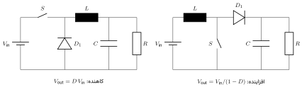
اشتقاق: توازنِ ولت–ثانیه. در حالتِ پایدار، جریانِ سلف در پایانِ هر دوره به مقدارِ آغازش برمیگردد؛ پس میانگینِ ولتاژِ سلف صفر است. در کاهنده، سلف در زمانِ \(DT\) ولتاژِ \(V_\text{in} - V_\text{out}\) و در \((1-D)T\) ولتاژِ \(-V_\text{out}\) میبیند. در افزاینده، در \(DT\) ولتاژِ \(V_\text{in}\) و در \((1-D)T\) ولتاژِ \(V_\text{in} - V_\text{out}\). صفر کردنِ میانگینها میدهد:
\[ \begin{aligned} \text{buck:}\quad & V_\text{out} = D\,V_\text{in}, & \Delta I_L &= \frac{V_\text{in}\,D\,(1-D)}{L\,f_\text{sw}} \\ \text{boost:}\quad & V_\text{out} = \frac{V_\text{in}}{1-D}, & \Delta I_L &= \frac{V_\text{in}\,D}{L\,f_\text{sw}}, \quad \Delta V_C = \frac{I_\text{out}\,D}{C\,f_\text{sw}} \end{aligned} \tag{9.4}\]
فرضها: کلید و دیودِ ایدهآل، رسانشِ پیوسته (جریانِ سلف هرگز صفر نمیشود)، و ولتاژِ خروجیِ تقریباً ثابت. در بارِ کم، جریانِ سلف در هر دوره صفر میشود (رسانشِ ناپیوسته) و رابطهها عوض میشوند.
در نیروگاهِ P. اینورترهای رشتهای اغلب یک طبقهٔ افزاینده پیش از وارونگر دارند تا ولتاژِ رشته را در هر شرایطی به ولتاژِ لازمِ پیوندِ DC برسانند و ردیابیِ نقطهٔ بیشینه را مستقل از ولتاژِ شبکه انجام دهند. اینورترهای مرکزی معمولاً این طبقه را ندارند و مستقیم روی ولتاژِ آرایه کار میکنند؛ پس ولتاژِ آرایه باید همیشه از کمینهٔ لازم بیشتر باشد (بخش 9.2.8). مبدّلِ دوسویهٔ DC–DC باتری را در معماریِ همبسته در DC به پیوندِ DCِ اینورترِ خورشیدی وصل میکند (فصلِ ۱۹).
مثال 9.5 (طبقهٔ افزایندهٔ یک اینورترِ رشتهای) پرسش. کاهندهٔ 1000 به 400 V با 1 mH در 10 kHz چه موجدارگیای دارد؟ برای طبقهٔ افزایندهٔ یک اینورترِ رشتهایِ 50 kW از 600 به 1000 V در 16 kHz (A-149، فرضی)، چرخهٔ کار، سلفِ لازم برای موجدارگیِ 20 % و خازنِ لازم برای موجدارگیِ ولتاژِ 1 % را بیابید.
پاسخ.
buck 1000 -> 400 V: duty 0.40; L 1 mH at 10 kHz: ripple 24 A peak-to-peak
boost stage of a 50 kW string inverter, 600 -> 1000 V (A-149):
duty 0.40, input current 83.3 A
L for 20 % ripple at 16 kHz: 0.90 mH
C for 1 % output ripple: 125 uF
volt-second balance: V_in D T = (V_out - V_in)(1 - D) Tتفسیر. با معادلهٔ 9.4، \(D = 1 - 600/1000 = 0.4\) و \(L = V_\text{in}D/(\Delta I\,f) = 600 \times 0.4/(16.7 \times 16000) = 0.90\ \text{mH}\). وارسیِ واحد: \(\text{V}\cdot\text{s}/\text{A} = \text{H}\) (درست). بسامدِ بیشتر سلف و خازنِ کوچکتری میخواهد؛ این دلیلِ کششِ صنعت به سوی نیمهرساناهای تندتر است (بخش 9.2.15).
- توازنِ ولت–ثانیه چه میگوید و چرا در حالتِ پایدار درست است؟
- افزایندهای با \(D = 0.5\) از 500 V چه خروجیای میسازد؟
- چرا موجدارگیِ کاهنده در \(D = 0.5\) بیشینه است؟
- اینورترِ مرکزی بیطبقهٔ افزاینده چه قیدی بر ولتاژِ آرایه میگذارد؟
9.2.6 وارونگر: از پل تا ولتاژِ سهفاز
ساق و پل. یک ساق (به انگلیسی leg) دو کلیدِ سری میانِ دو ریلِ DC است که هرگز همزمان روشن نمیشوند؛ خروجیِ میانی یا به ریلِ مثبت وصل است یا به ریلِ منفی. هر کلید یک دیودِ موازیِ معکوس دارد تا جریانِ سلفیِ بار، هر جهتی داشته باشد، راهی داشته باشد. سه ساق یک پلِ سهفازِ دوسطحی میسازند (شکل 9.2)، که هستهٔ اینورترهای خورشیدی، مبدّلِ توربین، مبدّلِ باتری و درایوهای موتور است.
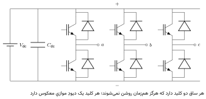
میانگینِ ساق. اگر نسبتِ زمانیِ وصل بودن به ریلِ مثبت در هر دورهٔ کلیدزنی به آرامی و سینوسی تغییر کند، میانگینِ ولتاژِ خروجی نسبت به نقطهٔ میانیِ DC یک سینوسی است. با ضریبِ مدولاسیون \(m\) (نسبتِ دامنهٔ مرجع به دامنهٔ حامل):
\[ v_{a0} = m\,\frac{V_\text{dc}}{2}\sin\omega t, \qquad V_\text{LL} = \frac{\sqrt3}{\sqrt2}\,m\,\frac{V_\text{dc}}{2} = 0.612\,m\,V_\text{dc} \quad (0 \le m \le 1) \tag{9.5}\]
\(V_\text{LL}\) مقدارِ مؤثرِ ولتاژِ خط به خط است. صافیِ خروجی موجِ کلیدزده را به همین سینوسیِ میانگین نزدیک میکند و کنترلگر با تغییرِ \(m\) و فازِ مرجع، دامنه و فازِ ولتاژِ اینورتر را نسبت به شبکه تنظیم میکند؛ و از همین راه، توانِ اکتیو و راکتیو را (فصلِ ۷، بخش 7.4.5).
مثال 9.6 (ولتاژِ خروجیِ یک پل روی 1100 V) پرسش. با معادلهٔ 9.5، ولتاژِ خط به خطِ پلِ دوسطحی روی 1100 V را برای \(m = 0.5\)، 0.8 و 1 بیابید. با مدولاسیونِ بردارِ فضایی تا کجا میتوان رفت؟
پاسخ.
two-level three-phase bridge on 1100 V DC:
phase fundamental peak m V_dc / 2; line RMS = m V_dc sqrt3 / (2 sqrt2)
m 0.5: line voltage 336.8 V RMS
m 0.8: line voltage 538.9 V RMS
m 1.0: line voltage 673.6 V RMS
third-harmonic or space-vector PWM: m up to 2/sqrt3 = 1.155 -> 777.8 V
above that the leg over-modulates and low-order harmonics appearتفسیر. با مدولاسیونِ سینوسی، 1100 V فقط 674 V خط به خط میسازد، کمتر از 690 V. مدولاسیونِ بردارِ فضایی یا تزریقِ هارمونیکِ سوم (بخش 9.2.8) تا 778 V میبرد؛ برای همین مبدّلهای 690 V با پیوندِ حدودِ 1100 تا 1150 V کار میکنند.
- چرا دو کلیدِ یک ساق نباید همزمان روشن شوند؟ نامِ این خطا چیست؟
- دیودِ موازیِ معکوس چه کاری میکند؟
- ولتاژِ خط به خطِ پل روی 800 V با \(m = 0.9\) چیست؟
- کنترلگر با کدام دو کمیت توانِ اکتیو و راکتیو را تنظیم میکند؟
9.2.7 مدولاسیونِ پهنای پالس و طیفش
ایده. سادگیِ مدولاسیونِ سینوسی–مثلثی در شکل 9.3 پیدا است: مرجعِ سینوسی با یک حاملِ مثلثی مقایسه میشود؛ هر جا مرجع بالاتر است کلیدِ بالا روشن است. پهنای پالسها با مرجع تغییر میکند و میانگینِ آنها مرجع را دنبال میکند.
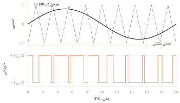
طیف. خروجیِ کلیدزده جز بسامدِ اصلی، هارمونیکهایی دارد که در اطرافِ بسامدِ حامل و مضربهایش جمع شدهاند: با نسبتِ بسامدِ حامل \(m_f = f_\text{sw}/f_1\)، خطها در \(m_f\)، \(m_f \pm 2\)، \(2m_f \pm 1\) و مانندِ آنها. اگر \(m_f\) مضربِ سه باشد، خودِ هارمونیکِ حامل در ولتاژِ خط به خط از میان میرود، چون در هر سه فاز همفاز است. درسِ اصلی: PWM هارمونیکهای کممرتبه نمیسازد (تا وقتی \(m \le 1\)) و اعوجاج را به بسامدهای بالا میبرد، جایی که یک صافیِ کوچک آن را میگیرد (فصلِ ۷، بخش 7.4.7).
مثال 9.7 (طیفِ دوسطحی و سهسطحی) پرسش. طیفِ ولتاژِ خط به خط را برای \(m = 0.9\) و حاملِ \(51 \times 50 = 2550\ \text{Hz}\) برای ساقِ دوسطحی و سهسطحی (بخش 9.2.9) حساب کنید. بزرگترین هارمونیکها کجایند؟
پاسخ.
line-to-line PWM voltage, m 0.9, carrier 51 x 50 Hz = 2550 Hz:
2-level: fundamental 0.779 V_dc, THD to h 200 66.3 %
largest: h 49 (0.232), h 53 (0.232), h 103 (0.221)
3-level: fundamental 0.779 V_dc, THD to h 200 49.4 %
largest: h 50 (0.221), h 52 (0.221), h 107 (0.093)
the carrier itself (h 51) cancels between phases; the
sidebands near 51 and 2 x 51 dominate; three levels halve
the voltage steps and cut the distortion by about a quarter
at the same carrier frequencyتفسیر. مؤلفهٔ اصلی در هر دو \(\sqrt3/2 \times 0.9 = 0.779\) برابرِ ولتاژِ DC است (شکل 9.4). هیچ هارمونیکی زیرِ مرتبهٔ ۴۰ دیده نمیشود؛ بزرگترینها در ۴۹ و ۵۳ (دوسطحی) کنارِ حاملاند. اعوجاجِ کلِ ولتاژ بزرگ است (66 %)، اما چون در بسامدِ بالا است، سلفِ صافی جریانش را کوچک میکند: جریانِ هارمونیکِ \(h\) با \(V_h/(h\,\omega L)\) کم میشود. سهسطحی در همان بسامدِ حامل گامهای نصف و اعوجاجِ حدودِ یکچهارم کمتر دارد.
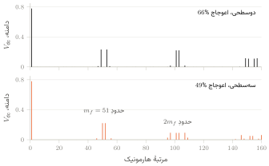
انتخابِ بسامدِ کلیدزنی. بسامدِ بالاتر هارمونیکها را دورتر میبرد و صافی را کوچک میکند، اما تلفاتِ کلیدزنی را بالا میبرد (شکل 9.8). اینورترهای مرکزی و مبدّلهای چندمگاواتی معمولاً چند کیلوهرتز، اینورترهای رشتهای دهها کیلوهرتز کلید میزنند. فرامدولاسیون (\(m > 1\)) ولتاژ را کمی بیشتر میکند اما هارمونیکهای کممرتبه (پنجم و هفتم) را برمیگرداند؛ کنترلگر معمولاً از آن پرهیز میکند.
- چرا PWM با \(m \le 1\) هارمونیکِ پنجم نمیسازد؟
- با حاملِ 3 kHz و بسامدِ 50 Hz، \(m_f\) چیست و نخستین گروهِ هارمونیکها کجاست؟
- چرا هارمونیکِ حامل در ولتاژِ خط به خط حذف میشود اگر \(m_f\) مضربِ سه باشد؟
- جریانِ هارمونیکِ مرتبهٔ ۵۰ در سلفی که برای مرتبهٔ ۱ راکتانسِ 0.1 پریونیت دارد، چند برابر کوچکتر از ولتاژش (پریونیت) است؟
9.2.8 مدولاسیونِ بردارِ فضایی و کمینهٔ ولتاژِ DC
ایده. پلِ سهفاز \(2^3 = 8\) حالتِ کلیدزنی دارد. با تبدیلِ کلارک (فصلِ ۳، بخش 3.3.17) هر حالت یک بردار در صفحهٔ \(\alpha\beta\) است: شش بردارِ فعال روی رأسهای یک ششضلعی و دو بردارِ صفر در مرکز (شکل 9.5). مدولاسیونِ بردارِ فضایی (به انگلیسی space-vector modulation) بردارِ مرجعِ گردان را در هر دورهٔ کلیدزنی با میانگینِ زمانیِ دو بردارِ فعالِ کناری و بردارِ صفر میسازد. بزرگترین دایرهای که درونِ ششضلعی جا میشود، مرزِ ناحیهٔ خطی است: دامنهٔ ولتاژِ فاز تا \(V_\text{dc}/\sqrt3\)، یعنی \(2/\sqrt3 = 1.155\) برابرِ مدولاسیونِ سینوسی. تزریقِ هارمونیکِ سوم به مرجع همین سود را میدهد، چون مؤلفهٔ مشترکِ سه فاز در ولتاژِ خط به خط دیده نمیشود.
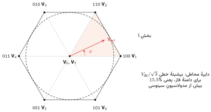
کمینهٔ ولتاژِ DC. وارونگونهٔ همین حکم مهمترین قیدِ طراحیِ اینورترِ خورشیدی است: برای ساختنِ ولتاژِ خط به خطِ \(V_\text{LL}\) در ناحیهٔ خطی، پیوندِ DC دستکم باید:
\[ V_\text{dc,min} = \sqrt2\,V_\text{LL}\,(1 + h_\text{m}) \quad \text{(SVPWM)}, \qquad V_\text{dc,min} = \frac{2\sqrt2}{\sqrt3}\,V_\text{LL}\,(1 + h_\text{m}) \quad \text{(SPWM)} \tag{9.6}\]
که \(h_\text{m}\) حاشیه است: بالا رفتنِ ولتاژِ شبکه، افتِ صافی و حاشیهٔ کنترل. اینورترِ مرکزیِ بیطبقهٔ افزاینده ولتاژِ آرایه را مستقیم روی پیوندِ DC دارد؛ پس پنجرهٔ ردیابیِ آن از پایین با همین رابطه بسته میشود.
مثال 9.8 (پنجرهٔ DC و ولتاژِ خروجی) پرسش. کمینهٔ ولتاژِ DC را برای ولتاژهای خروجیِ 400، 600، 630 و 690 V با هر دو مدولاسیون و با حاشیهٔ 10 % (A-150: شبکهٔ +5 %، افتِ صافی 3 %، کنترل 2 %؛ فرضی) بیابید. کرانِ پایینِ 850 V برای پنجرهٔ ردیابی که فصلِ ۶ فرض کرد (A-020) با کدام ولتاژِ خروجی سازگار است؟
پاسخ.
smallest DC voltage for an AC line voltage (linear PWM):
V_LL sine-triangle space-vector s-v + 10 % headroom
400 V 653 V 566 V 622 V
600 V 980 V 849 V 933 V
630 V 1029 V 891 V 980 V
690 V 1127 V 976 V 1073 V
headroom (A-150): grid +5 %, filter drop 3 %, control 2 %
the 850 V lower MPPT bound of chapter 6 (A-020) supports at most 601 V
AC without headroom, 546 V with it; a 690 V inverter needs about 1073 Vتفسیر. اینورترِ 690 V (فرضِ فصلِ ۷، مثال 7.36) دستکم حدودِ 1073 V در DC میخواهد، و 850 V فقط با خروجیِ حدودِ 600 V و بیحاشیه سازگار است. دو فرضِ پیشین با هم جور نیستند. اینکه این ناسازگاری در عمل چقدر انرژی میگیرد به ولتاژِ واقعیِ رشتهها در طولِ سال بستگی دارد: رشتههای ۲۶ ماژولیِ فصلِ ۶ در روزهای گرم ولتاژِ کمتری دارند. بخش 9.5.4 این را با بستهٔ داده میسنجد و تصمیم را ثبت میکند.
- پلِ سهفاز چند حالتِ کلیدزنی دارد و چند تا بردارِ صفرند؟
- چرا تزریقِ هارمونیکِ سوم ولتاژِ خط به خطِ قابلِ دسترس را بیشتر میکند؟
- برای 400 V با مدولاسیونِ بردارِ فضایی و بیحاشیه، کمینهٔ ولتاژِ DC چیست؟
- چرا اینورترِ رشتهای با طبقهٔ افزاینده این قید را ندارد؟
9.2.9 مبدّلهای چندسطحی
ایده. در آرایههای 1500 V، ولتاژِ مدارِ باز در هوای سرد تا نزدیکِ 1500 V میرسد. در پلِ دوسطحی هر کلید کلِ این ولتاژ را سد میکند و قطعهای از ردهٔ چندکیلوولتی با تلفاتِ کلیدزنیِ زیاد لازم است. مبدّلِ سهسطحیِ با نقطهٔ میانیِ کلمپشده (به انگلیسی neutral-point clamped، NPC) پیوندِ DC را با دو خازن نصف میکند و هر ساق را از چهار کلید و دو دیودِ کلمپ میسازد (شکل 9.6). خروجی سه سطح دارد: \(+V_\text{dc}/2\)، صفر و \(-V_\text{dc}/2\)، و هر کلید فقط نیمِ ولتاژ را سد میکند.
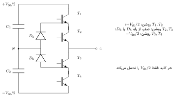
گونهها. در ساقِ T-شکل (به انگلیسی T-type) کلیدهای بیرونی کلِ ولتاژ و یک جفت کلیدِ دوسویه نقطهٔ میانی را میگیرند: تلفاتِ هدایتِ کمتر در ولتاژهای میانه. مبدّلِ ماژولارِ چندسطحی (به انگلیسی modular multilevel converter) با دهها یا صدها زیرماژولِ سری، شکلِ موجی تقریباً سینوسی میسازد و در انتقالِ HVDC و مبدّلهای ولتاژِ متوسط به کار میرود (فصلهای ۱۷ و ۲۸).
مثال 9.9 (چرا اینورترهای 1500 V سهسطحیاند) پرسش. ولتاژی که هر کلید در اینورترِ 1500 V سد میکند را در پلِ دوسطحی و سهسطحی مقایسه کنید. بهای سهسطحی چیست؟
پاسخ.
device voltage in a 1500 V PV inverter (open-circuit, cold):
two-level: each switch blocks 1500 V -> devices of 2.3 to 3.3 kV class
three-level NPC: each switch blocks 750 V -> 1200 V class
1200 V devices have much lower switching energy, and each
step of the output voltage is V_dc / 2 (lower dv/dt, ripple)
price: 12 switches and 6 clamp diodes per three-phase bridge
and a neutral point whose voltage the control must balanceتفسیر. سهسطحی اجازه میدهد از قطعههای 1200 V با کلیدزنیِ تند استفاده شود؛ گامهای ولتاژِ خروجی نصف میشوند و تنشِ \(\mathrm{d}v/\mathrm{d}t\) روی عایقِ کابل و ترانسفورماتور کم میشود (فصلِ ۸، بخش 8.3.4). بها: قطعههای بیشتر، کنترلِ پیچیدهتر و توازنِ ولتاژِ نقطهٔ میانی، که کنترلگر با انتخابِ حالتهای کلیدزنیِ همارز نگه میدارد. ماژولهای توانِ اینورترهای مرکزیِ نیروگاهِ P سهسطحی فرض میشوند (A-145).
- ساقِ NPC چند حالتِ خروجی دارد و در کدام دیودهای کلمپ هدایت میکنند؟
- چرا دیودهای کلمپ لازماند؟
- مبدّلِ ماژولارِ چندسطحی چرا برای ولتاژهای بسیار بالا مناسب است؟
- اگر ولتاژِ نقطهٔ میانی از توازن خارج شود، چه خطری پیش میآید؟
9.2.10 فرامدولاسیون و تزریقِ هارمونیکِ سوم
ایده. وقتی ضریبِ مدولاسیون از یک میگذرد، مرجعِ سینوسی در قلههایش از حامل بالاتر میرود و کلید در بخشی از هر نیمچرخه دیگر کلید نمیزند. دو پیامد: بهرهٔ مؤلفهٔ اصلی از پیشبینیِ خطیِ معادلهٔ 9.5 کمتر میشود، و هارمونیکهای کممرتبه (پنجم و هفتم) برمیگردند، همانهایی که صافیِ کوچکِ کلیدزنی نمیگیرد. با افزودنِ یکششمِ هارمونیکِ سوم به مرجع، قلهٔ مرجعِ هر فاز پهن و کوتاه میشود؛ هارمونیکِ سوم در ولتاژِ خط به خط حذف میشود و ناحیهٔ خطی تا \(2/\sqrt3 = 1.155\) ادامه مییابد، همان مرزِ مدولاسیونِ بردارِ فضایی.
مثال 9.10 (بهره و اعوجاجِ کممرتبه با \(m\)) پرسش. برای ساقِ دوسطحی با حاملِ 2550 Hz، بهرهٔ مؤلفهٔ اصلی (نسبت به پیشبینیِ خطی) و سهمِ پنجم و هفتم را برای \(m\) از 0.6 تا 1.27، با و بی تزریقِ هارمونیکِ سوم، حساب کنید.
پاسخ.
two-level leg, carrier 51 x 50 Hz: line voltage against m:
m fundamental / linear 5th+7th % with 3rd-harmonic injection
0.600 1.000 0.10 1.000 (0.10 %)
0.800 1.000 0.08 0.999 (0.04 %)
1.000 1.000 0.06 1.000 (0.05 %)
1.100 0.967 2.40 1.000 (0.03 %)
1.155 0.942 3.13 1.000 (0.04 %)
1.270 0.886 3.47 0.942 (2.44 %)
above m 1 plain sine-triangle PWM loses fundamental gain and
creates 5th and 7th; with third-harmonic injection the leg stays
linear up to 1.155 (the space-vector limit, section A)تفسیر. تا \(m = 1\) هر دو خطیاند و پنجم و هفتم ناچیز. سینوسی–مثلثی در 1.155 حدودِ 6 % بهره و 3 % اعوجاجِ کممرتبه از دست میدهد؛ با هارمونیکِ سوم، همان نقطه هنوز تمیز است (شکل 9.7). برای همین اینورترهای متصل به شبکه تزریقِ هارمونیکِ سوم یا مدولاسیونِ بردارِ فضایی به کار میبرند و فرامدولاسیونِ واقعی را فقط در گذارهای کوتاه (مثلاً اضافهولتاژِ لحظهایِ شبکه) میپذیرند.
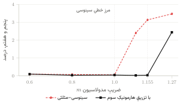
9.2.11 تلفاتِ هدایت و کلیدزنی
ایده. در یک ساق با مدولاسیونِ سینوسی، جریانِ هر کلید در نیمچرخهای که مثبت است با چرخهٔ کارِ متغیر از آیجیبیتی یا دیود میگذرد. میانگینگیری از معادلهٔ 9.2 روی یک دورِ کامل، با جریانِ سینوسیِ با دامنهٔ \(\hat I\)، ضریبِ مدولاسیونِ \(m\) و ضریبِ توانِ \(\cos\varphi\)، رابطههای شناختهشدهٔ زیر را میدهد:
\[ \begin{aligned} P_\text{c,T} &= \left(\frac{1}{2\pi} + \frac{m\cos\varphi}{8}\right) V_{0}\,\hat I + \left(\frac18 + \frac{m\cos\varphi}{3\pi}\right) r\,\hat I^2 \\ P_\text{c,D} &= \left(\frac{1}{2\pi} - \frac{m\cos\varphi}{8}\right) V_{0,\text{D}}\,\hat I + \left(\frac18 - \frac{m\cos\varphi}{3\pi}\right) r_\text{D}\,\hat I^2 \end{aligned} \tag{9.7}\]
در ضریبِ توانِ نزدیکِ یک، آیجیبیتی بیشترِ جریان را میبرد و دیود کمتر؛ در یکسوسازِ فعال (جریان برعکس) نقشها جابهجا میشوند. تلفاتِ کلیدزنی با انرژیِ برگهٔ داده در جریان و ولتاژِ مرجع (\(I_\text{ref}\)، \(V_\text{ref}\)) و مقیاسِ خطی، میانگینگیریشده روی نیمموجِ سینوسی (ضریبِ \(1/\pi\)):
\[ P_\text{sw,T} = f_\text{sw}\,(E_\text{on} + E_\text{off})\,\frac{\hat I}{\pi\,I_\text{ref}}\,\frac{V_\text{dc}}{V_\text{ref}}, \qquad P_\text{rr,D} = f_\text{sw}\,E_\text{rr}\,\frac{\hat I}{\pi\,I_\text{ref}}\,\frac{V_\text{dc}}{V_\text{ref}} \tag{9.8}\]
\(E_\text{rr}\) انرژیِ بازیابیِ معکوسِ دیود است، وقتی دیودِ هادی ناگهان سد میشود و بارِ ذخیرهاش باید تخلیه شود. فرضها: جریانِ بیموجدارگی، انرژیِ کلیدزنیِ خطی با جریان و ولتاژ، دمای ثابتِ پیوند. سازندگان ابزارهای محاسبهٔ دقیقتری با منحنیهای واقعی میدهند؛ بخش 9.5.3 دقتِ این رابطهها را با شبیهسازیِ کلید به کلید میسنجد.
def conduction_losses(i_pk: float, m: float, cos_phi: float, v_t0: float,
r_t: float, v_d0: float,
r_d: float) -> tuple[float, float]:
"""Mean conduction loss of one IGBT and one diode of a two-level leg with
sinusoidal PWM (current peak I, modulation m, displacement cos phi), from
the threshold-plus-resistance device model."""
p_t = (1 / (2 * math.pi) + m * cos_phi / 8) * v_t0 * i_pk \
+ (1 / 8 + m * cos_phi / (3 * math.pi)) * r_t * i_pk ** 2
p_d = (1 / (2 * math.pi) - m * cos_phi / 8) * v_d0 * i_pk \
+ (1 / 8 - m * cos_phi / (3 * math.pi)) * r_d * i_pk ** 2
return p_t, p_dمثال 9.11 (تلفاتِ مبدّلِ سمتِ شبکهٔ توربین) پرسش. مبدّلِ سمتِ شبکهٔ یک توربین (5.26 MVA، 690 V، ضریبِ توانِ 0.95، فصلِ ۷، A-107) با پیوندِ 1150 V و کلیدزنیِ 2.5 kHz کار میکند. هر «جایگاهِ کلید» چند ماژولِ ردهٔ 1700 Vِ موازی دارد (A-144، فرضی). تلفاتِ نیمهرساناها را حساب کنید و وابستگیاش به بسامد را نشان دهید.
پاسخ.
grid-side converter of a turbine, 5.26 MVA, 690 V,
V_dc 1150 V, pf 0.95; one switch position = parallel modules (A-144):
current peak 6,224 A, modulation index 0.980
per switch position: IGBT 6,311 W + 2,813 W, diode 711 W + 615 W
six positions at 2.5 kHz: conduction 42.1 kW, switching 20.6 kW
total 62.7 kW = 1.25 % of the active power
switching loss grows with f_sw; conduction does notتفسیر. حدودِ 63 kW یا 1.25 % از توانِ اکتیو فقط در نیمهرساناهای سمتِ شبکه؛ مبدّلِ سمتِ ماشین تقریباً همین اندازه دارد. دوسوم هدایت و یکسوم کلیدزنی است. شکل 9.8 نشان میدهد چرا مبدّلهای بزرگ در چند کیلوهرتز میمانند: کمی بالاتر از 5 kHz (حدودِ 5.1 kHz، P33) تلفاتِ کلیدزنی از هدایت میگذرد. وارسیِ عددی: جملهٔ کلیدزنیِ آیجیبیتی \(2500 \times 1.6 \times (6224/3600)(1150/900)/\pi = 2813\ \text{W}\) (درست).
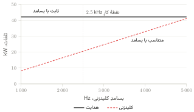
- چرا تلفاتِ هدایتِ دیود در اینورتر با ضریبِ توانِ یک کمتر از آیجیبیتی است؟
- اگر ولتاژِ پیوندِ DC 10 % بالا رود، کدام بخشِ تلفات تغییر میکند؟
- بازیابیِ معکوسِ دیود چیست؟
- در چه بسامدی تلفاتِ کلیدزنی و هدایت در شکل 9.8 برابر میشوند؟
9.2.12 مسیرِ گرما و دمای پیوند
ایده. تلفاتِ تراشه باید از پیوند (لایهٔ فعالِ نیمهرسانا) به پوستهٔ ماژول، از پوسته از راهِ مادهٔ رابطِ گرمایی به صفحهٔ سرد یا گرماگیر، و از آنجا به مایع یا هوا برود. با قیاسِ گرمایی–الکتریکیِ فصلِ ۶ (بخش 6.3.7)، این مسیر زنجیرهای از مقاومتهای گرمایی است و تلفات مانندِ یک منبعِ جریان (شکل 9.9):
\[ T_j = T_\text{coolant} + P_\text{loss}\,(R_\text{jc} + R_\text{ch} + R_\text{hc}), \qquad Z_\text{th}(t) = \sum_i R_i\left(1 - e^{-t/\tau_i}\right) \tag{9.9}\]
\(Z_\text{th}\) امپدانسِ گرماییِ گذرا است، که برگهٔ داده با چند جملهٔ فاستر میدهد: جملههای تند (میلیثانیه) گرمای تراشه و لحیم را نشان میدهند و جملههای کند (ثانیه) گرماگیر را.
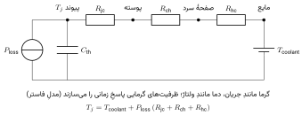
چرخهٔ دما و عمر. هر آیجیبیتی فقط در نیمچرخهای از خروجی که جریانش مثبت است تلفات دارد؛ پس دمای پیوند با بسامدِ خروجی نوسان میکند. لایههای ماژول (سیلیسیم، لحیم، سرامیک، مس، سیمهای اتصال) ضریبِ انبساطِ متفاوت دارند و هر چرخهٔ دما آنها را خسته میکند: جدا شدنِ سیمهای اتصال و ترکِ لایهٔ لحیم دو سازوکارِ اصلیِ فرسودگیاند (همان خستگیِ فصلِ ۴، بخش 4.3.3 و بخش 4.3.19). تعدادِ چرخه تا خرابی با دامنهٔ نوسان تند کم میشود؛ یک قانونِ توانیِ آموزشی \(N \propto \Delta T^{-n}\) با \(n \approx 5\) جهت را نشان میدهد و ثابتهای واقعی را سازندهٔ ماژول از آزمونِ چرخهٔ توان میدهد.
مثال 9.12 (نوسانِ دمای پیوند در ۵۰، ۱۰ و ۱ هرتز) پرسش. یک جایگاهِ آیجیبیتی با میانگینِ تلفاتِ 1.5 kW و شبکهٔ فاستر با چهار جمله (A-148، فرضی) را در خروجیِ 50، 10 و 1 Hz شبیهسازی کنید. نوسانِ دما و عمرِ نسبیِ چرخهای چیست؟
پاسخ.
junction temperature of one IGBT position (Foster network, A-148):
R_th junction-to-coolant 0.026 K/W; mean loss 1500 W -> mean rise 39 K
output 50 Hz: junction swing 13.7 K, relative cycle life 1.000
output 10 Hz: junction swing 28.8 K, relative cycle life 0.024
output 1 Hz: junction swing 71.4 K, relative cycle life 0.000
slow output (machine side at low speed, or a stalled motor)
lets each half-wave heat the chip: bigger swings, shorter lifeتفسیر. در 50 Hz نیمموج کوتاهتر از آن است که تراشه گرم شود و نوسان 14 K است؛ در 10 Hz به 29 K و در 1 Hz به 71 K میرسد (شکل 9.10). با قانونِ آموزشی، عمرِ چرخهای در 10 Hz حدودِ یکچهلم است. این برای مبدّلِ سمتِ ماشین مهم است: ژنراتورِ بیگیربکسِ کندگرد بسامدِ خروجیِ چند هرتزی دارد، و ژنراتورِ تندگردِ نیروگاهِ P در سرعتِ کم به حدودِ 30 Hz میرسد. سازندگان جریانِ مجاز را در بسامدِ کم کاهش میدهند یا ماژولِ بزرگتری میگذارند. محدودیت: تلفات سینوسیِ مجذور فرض شده و بسامدِ کلیدزنی دیده نشده است.
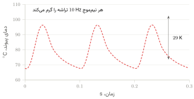
- با تلفاتِ 1 kW و مقاومتِ گرماییِ کلِ 0.05 K/W از مایعِ 45 °C، دمای پیوند چیست؟
- چرا امپدانسِ گرماییِ گذرا چند ثابتِ زمانی دارد؟
- دو سازوکارِ فرسودگیِ ماژول در چرخهٔ دما را نام ببرید.
- اگر دامنهٔ نوسان از 20 به 30 K برسد، عمرِ چرخهای با \(n = 5\) چند برابر میشود؟
9.2.13 منحنیِ بازده و بازدهٔ وزنی
مدلِ سهضریبی. تلفاتِ اینورتر را میتوان به سه بخش شکست: ثابت (تغذیهٔ کنترل، فن در کمینه، تلفِ بیباریِ صافی و خازنها)، خطی با توان (آستانههای \(V_0\) و کلیدزنی که با جریان خطیاند) و مجذوری (مقاومتها، \(rI^2\)). به ازای توانِ خروجیِ پریونیتِ \(p\):
\[ p_\text{loss} = c_0 + c_1\,p + c_2\,p^2, \qquad \eta(p) = \frac{p}{p + p_\text{loss}} \tag{9.10}\]
سه ضریب را میتوان از سه یا چند نقطهٔ برگهٔ داده با کمترین مربعات به دست آورد (فصلِ ۳، بخش 3.3.3). بازده در بارِ کم به دلیلِ \(c_0\) تند میافتد و در بارِ زیاد به دلیلِ \(c_2\) کمی پایین میآید؛ بیشینه جایی است که \(c_0 = c_2\,p^2\).
بازدهٔ وزنی. چون اینورترِ خورشیدی بیشترِ عمرش را در بارِ جزئی میگذراند، یک عددِ وزنی بیش از بازدهٔ بیشینه معنا دارد. دو قراردادِ رایج: بازدهٔ اروپایی با وزنهای 0.03، 0.06، 0.13، 0.10، 0.48 و 0.20 در ۵، ۱۰، ۲۰، ۳۰، ۵۰ و ۱۰۰ درصدِ بار، و بازدهٔ CEC با وزنهای 0.04، 0.05، 0.12، 0.21، 0.53 و 0.05 در ۱۰، ۲۰، ۳۰، ۵۰، ۷۵ و ۱۰۰ درصد. هر دو برای اقلیمِ خاصی ساخته شدهاند؛ ساختگاهِ نیروگاهِ P وزنهای خودش را دارد (بخش 9.5.5).
مثال 9.13 (منحنیِ بازدهٔ اینورترِ 5 MW) پرسش. با پنج نقطهٔ برگهٔ دادهٔ آموزشی (A-147، فرضی)، ضریبهای معادلهٔ 9.10 را برازش کنید و بازدهٔ اروپایی و CEC، بازدهٔ بیشینه و بازده در 5 % بار را بیابید.
پاسخ.
5 MW PV inverter, data-sheet efficiency points (A-147):
10 %: 0.97, 25 %: 0.983, 50 %: 0.986, 75 %: 0.985, 100 %: 0.983
fitted loss = 2.75 + 2.98 P + 11.54 P^2 (per mille of rating)
no-load (fixed) + linear (V0 I) + square (R I^2) terms
weighted: European 0.9824, CEC 0.9842
peak 0.9860 at 0.48 pu; at 5 % load 0.9447تفسیر. تلفاتِ ثابتِ 2.75 در هزار، یعنی حدودِ 13.7 kW برای اینورترِ 5 MW، حتی بیتولید هست (شکل 9.11)؛ این عدد در حالتِ «توانِ راکتیو در شب» دوباره مهم میشود (بخش 9.4.4). بیشینه در نیمبار است، همانجا که \(c_0 = c_2 p^2\): \(p = \sqrt{2.75/11.54} = 0.49\) (درست). محدودیت: بازده به ولتاژِ DC هم بستگی دارد؛ برگههای واقعی چند منحنی در چند ولتاژ میدهند و روشِ اندازهگیریشان را استاندارد تعیین میکند (بخش 9.10).
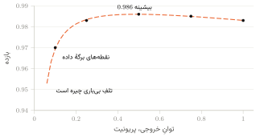
- هر یک از سه ضریبِ مدلِ تلفات از کجا میآید؟
- چرا بازده در بارِ کم تند میافتد؟
- اگر \(c_0\) نصف شود، بیشینهٔ بازده به کدام سو جابهجا میشود؟
- چرا بازدهٔ وزنی برای مقایسهٔ دو اینورتر بهتر از بازدهٔ بیشینه است؟
9.2.14 کاهشِ توان با دما و ارتفاع
ایده. خنککاری مقدارِ مشخصی گرما را در دمای محیطِ مشخص بیرون میبرد. اگر هوا گرمتر باشد، اختلافِ دما کمتر است؛ اگر رقیقتر باشد (ارتفاعِ زیاد)، هر مترمکعب گرمای کمتری میبرد (فصلِ ۴، بخش 4.2.20). برای آنکه پیوند از دمای مجازش نگذرد، اینورتر جریانِ خروجی را کم میکند: کاهشِ توان (به انگلیسی derating). در ارتفاع دو دلیلِ دیگر هم هست: فاصلههای هواییِ عایق در هوای رقیق زودتر میشکنند (بخش 9.3.10)، و آهنگِ خرابیِ تصادفیِ نیمهرساناها بر اثرِ پرتوهای کیهانی با ارتفاع و ولتاژ بالا میرود (بخش 9.3.14).
مثال 9.14 (اینورتر در 1200 m و هوای گرم) پرسش. با منحنیِ آموزشیِ A-147 (توانِ کامل تا 40 °C، سپس 2 % بر کلوین؛ 1 % برای هر 100 m بالای 1000 m)، توانِ در دسترسِ اینورترِ 5 MW را در ارتفاعِ ساختگاه (A-002) و دماهای ۳۵ تا ۵۵ درجه بیابید.
پاسخ.
teaching derating curve (A-147): full output to 40 C, -2 %/K
above; -1 % per 100 m above 1000 m altitude:
35 C at 1200 m: 0.98 pu = 4.90 MW
40 C at 1200 m: 0.98 pu = 4.90 MW
45 C at 1200 m: 0.88 pu = 4.41 MW
50 C at 1200 m: 0.78 pu = 3.92 MW
55 C at 1200 m: 0.69 pu = 3.43 MW
hot hours cost energy only when the plant would otherwise
run near full output: the data-pack lab counts them (D)تفسیر. در ارتفاعِ ساختگاه، اینورتر حتی در هوای خنک 2 % کمتر میدهد و در 50 °C به 78 % میرسد. اما این عدد وقتی هزینه دارد که نیروگاه در همان ساعتها نزدیکِ توانِ کامل کار کند. ساعتهای گرمِ ساختگاه و توانِ آرایه در همان ساعتها را بخش 9.5.5 با بستهٔ داده میشمارد. منحنیِ واقعی را سازنده میدهد و ممکن است به ولتاژِ DC و توانِ راکتیو هم وابسته باشد.
- دو دلیلِ گرمایی و دو دلیلِ غیرگرماییِ کاهشِ توان در ارتفاع را بنویسید.
- با منحنیِ A-147، توان در 44 °C و 800 m چیست؟
- چرا کاهشِ توان در ساعتهای کمتابش هزینهای ندارد؟
9.2.15 نیمهرساناهای شکافپهن
ایده. کاربیدِ سیلیسیم و نیتریدِ گالیم شکافِ انرژیِ حدودِ سه الکترونولت دارند، حدودِ سه برابرِ سیلیسیم (فصلِ ۴، بخش 4.4.5). میدانِ شکستِ بسیار بزرگتر اجازه میدهد لایهٔ سدکننده برای همان ولتاژ بسیار نازکتر باشد؛ پس مقاومتِ روشنِ کمتر در ولتاژِ بالا، بارِ ذخیرهٔ بسیار کم و کلیدزنیِ بسیار تندتر. بها: قیمتِ بیشتر برای هر آمپر، \(\mathrm{d}v/\mathrm{d}t\)ِ بسیار تند که سازگاریِ الکترومغناطیسی و عایقِ موتور و کابل را سختتر میکند، و زمانِ تحملِ اتصالِ کوتاهِ کوتاهتر که درایورِ گیتِ تندتری میخواهد (بخش 9.3.7).
مثال 9.15 (یک طبقهٔ 100 kW با سیلیسیم و کاربیدِ سیلیسیم) پرسش. با انرژیهای کلیدزنیِ آموزشی (A-148، فرضی)، تلفاتِ کلیدزنیِ یک پلِ 100 kW را با آیجیبیتیِ سیلیسیمی در 16 kHz و ماسفتِ کاربیدِ سیلیسیم در 16 و 48 kHz مقایسه کنید.
پاسخ.
100 kW string-inverter stage, silicon IGBT vs SiC MOSFET (A-148):
Si IGBT at 16 kHz: switching about 0.18 kW (0.18 %)
SiC MOSFET at 16 kHz: switching about 0.04 kW (0.04 %)
SiC MOSFET at 48 kHz: switching about 0.11 kW (0.11 %)
at three times the frequency SiC still switches with less
loss, and the filter inductance falls in proportion (L ~ 1/f):
smaller magnetics, higher price per ampere (chapter 44)تفسیر. کاربیدِ سیلیسیم در سه برابرِ بسامد هنوز کمتلفاتتر کلید میزند، و چون سلفِ صافی با \(1/f\) کوچک میشود، اینورتر سبکتر و کوچکتر است. این در اینورترهای رشتهای و شارژرها ارزش دارد؛ در مبدّلهای چندمگاواتی، قیمت و تجربهٔ میدانی هنوز به سودِ آیجیبیتی است. انتخاب در هر دو حالت یک مصالحهٔ اقتصادی و فنی است، نه برتریِ مطلق (فصلِ ۴۴).
- چرا شکافِ انرژیِ بزرگتر لایهٔ سدکنندهٔ نازکتر را ممکن میکند؟
- دو بهای کلیدزنیِ بسیار تند را بنویسید.
- اگر بسامد سه برابر شود، اندوکتانسِ لازم برای همان موجدارگی چه میشود؟
9.2.16 پیششارژِ پیوندِ DC
مسئله. خازنِ خالی در لحظهٔ وصل مانندِ اتصالِ کوتاه است. اگر پیوندِ DCِ خالی مستقیم به آرایه یا به ولتاژِ یکسوشدهٔ شبکه وصل شود، جریانِ هجومی را فقط مقاومتِ کابل و کنتاکتور محدود میکند: هزاران آمپر، تماسهای جوشخورده و فیوزهای سوخته. برای همین اینورترها یک مدارِ پیششارژ دارند: یک مقاومت با یک کنتاکتورِ کوچک، که خازن را آرام شارژ میکند و سپس با کنتاکتورِ اصلی دور زده میشود.
انرژی. وقتی خازنِ \(C\) از راهِ مقاومتی از منبعِ ثابتِ \(V\) شارژ میشود، انرژیِ تلفشده در مقاومت دقیقاً برابرِ انرژیِ ذخیرهشده است، مستقل از اندازهٔ مقاومت:
\[ E_R = \int_0^\infty \frac{V^2}{R}\,e^{-2t/RC}\,\mathrm{d}t = \tfrac12\,C\,V^2 = E_C \tag{9.11}\]
مقاومتِ بزرگتر فقط زمان را بلندتر و توانِ لحظهای را کمتر میکند. پس مقاومتِ پیششارژ برای انرژیِ پالسی و تعدادِ وصل در ساعت ردهبندی میشود، نه برای توانِ پیوسته.
مثال 9.16 (پیششارژِ چهار پشته) پرسش. پیوندِ DCِ یک اینورتر (48 mF، چهار پشتهٔ 12 mF) تا 1100 V شارژ میشود و جریان باید زیرِ 20 A بماند (A-166، فرضی). مقاومت، ثابتِ زمانی و انرژیِ گرمایی را بیابید.
پاسخ.
pre-charge of the inverter DC link: 4 x 12 mF = 48 mF to 1100 V (A-166)
limit the current to 20 A: R = 55 ohm, tau = 2.64 s, 95 % after 7.9 s
energy stored 29.0 kJ; energy turned to heat in R also 29.0 kJ
(charging through a resistor always wastes as much as it stores)
without pre-charge: the inrush is limited only by cable and
contactor resistance: kiloamperes, welded contacts, blown fusesتفسیر. 55 Ω و هشت ثانیه تا 95 %؛ 29 kJ گرما در هر وصل، به اندازهٔ گرمای یک کتری که چند ثانیه روشن باشد، اما در یک مقاومتِ کوچک. اگر کنترلگر به دلیلِ یک خطا پشتِ سرِ هم وصل و قطع کند، مقاومت میسوزد؛ پس منطقِ کنترل تعدادِ تلاشها را محدود میکند.
9.2.17 مبدّلِ DC–DCِ جداشده: پلِ دوگانهٔ فعال
ایده. گاهی دو مدارِ DC باید جدا (گالوانیک) باشند یا ولتاژشان بسیار متفاوت باشد: باتری و پیوندِ DC، منبعهای تغذیهٔ کمکی، یا ترانسفورماتورِ حالتجامد آینده. پلِ دوگانهٔ فعال (به انگلیسی dual active bridge) دو پلِ تکفاز را از راهِ یک ترانسفورماتورِ بسامدِ بالا (دهها کیلوهرتز، پس هستهٔ کوچک) و اندوکتانسِ نشتیِ آن به هم وصل میکند. هر پل یک موجِ مربعی میسازد و اختلافِ فازِ \(\varphi\) میانِ دو موج توان را مانندِ زاویهٔ بار در ماشینِ همگام تعیین میکند:
\[ P = \frac{V_1\,V_2'\,\varphi\,(\pi - |\varphi|)}{2\pi^2 f_\text{sw}\,L} \tag{9.12}\]
(\(V_2'\) ولتاژِ سمتِ دوم به سمتِ اول برگردانده). توان از پلِ پیشفاز به پلِ پسفاز میرود، پس با علامتِ \(\varphi\) دوسویه است.
مثال 9.17 (توان با اختلافِ فاز) پرسش. پلِ دوگانهٔ فعالِ 800/800 V در 20 kHz با 20 µH (A-166)، توان را در چند اختلافِ فاز بیابید.
پاسخ.
dual-active bridge, 800 V / 800 V, 20 kHz, L 20 uH (A-166):
P = V1 V2 phi (pi - |phi|) / (2 pi^2 f L)
phase shift 0.10 rad: 24.7 kW
phase shift 0.30 rad: 69.1 kW
phase shift 0.60 rad: 123.6 kW
phase shift 1.57 rad: 200.0 kW
power flows from the leading bridge to the lagging one; the
high-frequency transformer gives isolation in a small coreتفسیر. بیشینه در \(\varphi = \pi/2\) است، 200 kW؛ با یک ترانسفورماتورِ چندکیلوگرمی، بهجای ترانسفورماتورِ 50 Hzِ صدها کیلوگرمی برای همان توان. بهای آن کلیدزنیِ بسامدِ بالا، تلفاتِ هسته و عایقِ پربسامد است؛ برای همین این فناوری در توانهای بزرگِ نیروگاهی هنوز در حالِ بلوغ است.
9.2.18 از تریستور تا کاربیدِ سیلیسیم: سیرِ مبدّلها
نخستین مبدّلهای بزرگ تریستوری بودند: یکسوسازهای کنترلشده و انتقالِ HVDC با کموتاسیونِ شبکه، که توانِ راکتیو میگرفتند و هارمونیکِ کممرتبه میساختند. آیجیبیتی در دهههای پایانیِ قرنِ بیستم مبدّلِ منبعِ ولتاژ را با کلیدزنیِ چندکیلوهرتزی ممکن کرد و راه را برای توربینهای سرعتمتغیر (فصلِ ۸) و اینورترهای خورشیدیِ سینوسی باز کرد. سه روندِ بعدی نیروگاههای امروز را ساختند: ولتاژِ DCِ بالاتر (از 600 و 1000 V به 1500 V برای کاستنِ جریان و کابل، که سهسطحیها را رایج کرد)؛ اینورترهای رشتهایِ بزرگ که با ردیابیِ ریزدانه رقیبِ مرکزیها شدند؛ و نیمهرساناهای شکافپهن که بسامد و چگالیِ توان را بالا میبرند. امروز مرزِ تازه رفتار است، نه سختافزار: الزامهای شبکه از مبدّلها رفتارِ سازندهٔ شبکه، لختی و پشتیبانیِ ولتاژ میخواهند (بخش 9.4.2).
- چرا انرژیِ تلفشده در پیششارژ مستقل از مقاومت است؟
- با 20 mF و 1000 V، انرژیِ گرماییِ هر پیششارژ چیست؟
- در پلِ دوگانهٔ فعال، جهتِ توان را چه چیزی تعیین میکند؟
- سه روندی که مبدّلهای نیروگاهیِ امروز را ساختند نام ببرید.
9.2.19 کلیدزنیِ نرم
ایده. در کلیدزنیِ سخت، کلید وقتی خاموش یا روشن میشود که ولتاژ و جریان هر دو بزرگاند و تلفاتِ \(\tfrac12 V I (t_\text{r} + t_\text{f})\) را میسازد (معادلهٔ 9.1). در کلیدزنیِ نرم، مدار طوری ساخته میشود که لحظهٔ کلیدزنی با ولتاژِ صفر (روشن شدن وقتی دیودِ موازی هادی است) یا جریانِ صفر (خاموش شدن وقتی جریان از صفر میگذرد) همزمان شود. نتیجه: تلفاتِ کلیدزنیِ بسیار کمتر و تداخلِ الکترومغناطیسیِ کمتر، در بهای مدارِ تشدیدی، کنترلِ پیچیدهتر و بازهٔ کارِ محدودتر. پلِ دوگانهٔ فعال (بخش 9.2.17) در بازهای از بار ذاتاً کلیدزنیِ ولتاژِ صفر دارد: جریانِ اندوکتانس پیش از روشن شدنِ هر کلید، خازنِ آن را تخلیه کرده است. مبدّلهای تشدیدی در منبعهای تغذیه و شارژرها رایجاند؛ در وارونگرهای بزرگِ متصل به شبکه، کلیدزنیِ سخت با قطعههای تند هنوز راهِ اصلی است.
- کلیدزنیِ ولتاژِ صفر و جریانِ صفر را تعریف کنید.
- چرا کلیدزنیِ نرم تداخلِ الکترومغناطیسی را هم کم میکند؟
- بهای کلیدزنیِ نرم چیست؟
9.3 ب. توپولوژی و طراحیِ زیرسامانهها
بخشِ ب از معماریها شروع میکند (مرکزی، رشتهای، مبدّلِ پشتبهپشتِ توربین، مبدّلِ باتری)، ردیابیِ نقطهٔ بیشینهٔ توان را میسازد، و سپس هر زیرسامانهٔ اینورتر را در مرتبهٔ اول طراحی میکند: پیوندِ DC، صافی، مغناطیس، شینه، درایورِ گیت، حسگرها، خنککاری، عایق، پوسته و سختافزار و میانافزارِ کنترل. بخش با شکستنِ محصول به زیرمجموعهها، ردهها و کاهشِ رده، و شش وارسیِ طراحی پایان مییابد.
9.3.1 معماریها: مرکزی، رشتهای، توربین و باتری
چهار الگو. شکل 9.12 چهار راهِ رساندنِ انرژی به ترانسفورماتور را نشان میدهد:
- اینورترِ مرکزی: رشتهها در جعبههای تجمیع موازی میشوند و کابلهای DCِ بزرگ آنها را به یک اینورترِ چندمگاواتی میبرند. ردیابیِ نقطهٔ بیشینه برای صدها رشته یکی است.
- اینورترِ رشتهای: دهها یا صدها اینورترِ کوچکتر کنارِ آرایه، هر کدام با چند ردیاب؛ خروجیِ AC در یک تابلو جمع میشود.
- مبدّلِ پشتبهپشتِ توربین: مبدّلِ سمتِ ماشین ولتاژِ ژنراتور با بسامدِ متغیر را یکسو میکند و مبدّلِ سمتِ شبکه آن را در 50 Hz تحویل میدهد؛ پیوندِ DC یک چاپرِ ترمز دارد که انرژیِ اضافه را در افتِ ولتاژِ شبکه در مقاومت میسوزاند (فصلِ ۸، بخش 8.5.10).
- مبدّلِ باتری: یک پلِ دوسویه که در شارژ یکسوسازِ فعال و در دشارژ وارونگر است (فصلِ ۱۹).
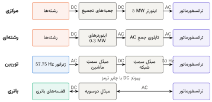
معیارهای انتخاب. انرژی (عدمِ تطابقِ رشتهها و اثرِ یک خرابی)، هزینهٔ تجهیز و نصب (کابلِ DC در برابرِ AC، تعدادِ واحد)، بهرهبرداری (تعویضِ یک اینورترِ کوچک در برابرِ تعمیرِ یک اینورترِ بزرگ در محل)، کیفیتِ توان و رفتارِ شبکه، و فضا و دسترسی. هیچکدام همیشه برتر نیست؛ انتخابِ نیروگاه در فصلِ ۱۸ با هزینه بسته میشود.
مثال 9.18 (مرکزی یا رشتهای برای 60 MWp) پرسش. با دادههای آموزشیِ A-151 (آهنگِ خرابی، زمانِ بازگرداندن و تلفاتِ عدمِ تطابق، فرضی) و میانگینِ تولیدِ خورشیدیِ سالِ بستهٔ داده (بخش 9.5.5)، انرژیِ ازدسترفته را در دو معماری مقایسه کنید.
پاسخ.
central or string inverters for 60 MWp (A-151); mean PV output 11.58 MW
central, 10 x 5 MW:
failures 5.0/yr x 72 h x 1.158 MW = 417 MWh/yr (0.41 %)
mismatch 0.6 % = 608 MWh/yr; one failure removes 10.0 % of PV capacity
string, 167 x 0.3 MW:
failures 25.1/yr x 24 h x 0.069 MW = 42 MWh/yr (0.04 %)
mismatch 0.3 % = 304 MWh/yr; one failure removes 0.6 % of PV capacity
strings win on energy; the central design has 17 times fewer
units to buy, connect, monitor and maintain (chapters 18, 51)تفسیر. با این فرضها، معماریِ رشتهای حدودِ 680 MWh در سال، نزدیکِ 0.7 % انرژی، بیشتر نگه میدارد: نیمی از ردیابیِ ریزدانهتر و نیمی از کوچکتر بودنِ اثرِ هر خرابی. در برابر، ۱۶۷ واحد باید خریده، نصب، پایش و نگهداری شوند. ارزشِ آن 680 MWh در برابرِ تفاوتِ هزینهها پاسخِ واقعی را میدهد. نیروگاهِ P با اینورترِ مرکزی ادامه میدهد (A-101)، اما این مثال نشان میدهد که آن انتخاب یک فرضِ قابلِ بازنگری است، نه یک بدیهیات.
- جعبهٔ تجمیع در معماریِ مرکزی چه میکند و در معماریِ رشتهای چه جایگزینِ آن است؟
- چرا در معماریِ رشتهای کابلِ AC جای کابلِ DC را میگیرد؟
- چاپرِ ترمز در مبدّلِ توربین چه کاری میکند؟
- دو معیارِ غیرانرژیِ انتخابِ معماری را بنویسید.
9.3.2 ردیابیِ نقطهٔ بیشینهٔ توان
ایده. منحنیِ توان–ولتاژِ یک رشته یک قله دارد که جایش با تابش و دما جابهجا میشود (شکل 9.13): تابش بیشتر جریان را بالا میبرد و ولتاژ را کمی؛ دمای بیشتر ولتاژ را تند پایین میآورد. ردیابیِ نقطهٔ بیشینهٔ توان (به انگلیسی maximum power point tracking) یک الگوریتمِ کنترل است که ولتاژِ کار را پیوسته جابهجا میکند تا روی قله بماند، جایی که \(\mathrm{d}P/\mathrm{d}V = 0\) (فصلِ ۳، بخش 3.2.9). این را با انتقالِ بیشینهٔ توان در مدارِ مقاومتی (فصلِ ۶، مثال 6.21) اشتباه نگیرید: آنجا بار با منبع تطبیق داده میشد؛ اینجا نقطهٔ کار روی منحنیِ ناخطیِ منبع جستوجو میشود.
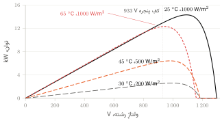
مدلِ منحنی. برای مطالعهٔ ردیاب، این فصل یک مدلِ صریحِ چهارنقطهای به کار میبرد که دقیقاً از سه نقطهٔ برگهٔ داده (\((0, I_\text{sc})\)، \((V_\text{mp}, I_\text{mp})\)، \((V_\text{oc}, 0)\)) میگذرد:
\[ \begin{aligned} I(V) &= I_\text{sc}\left[1 - C_1\left(e^{V/(C_2 V_\text{oc})} - 1\right)\right] \\ C_2 &= \frac{V_\text{mp}/V_\text{oc} - 1}{\ln(1 - I_\text{mp}/I_\text{sc})}, \qquad C_1 = \left(1 - \frac{I_\text{mp}}{I_\text{sc}}\right) e^{-V_\text{mp}/(C_2 V_\text{oc})} \end{aligned} \tag{9.13}\]
و جریانها را با تابش، ولتاژها را با دما و لگاریتمِ تابش مقیاس میکند. این مدل برای کنترل کافی است؛ مدلِ فیزیکیِ سلول در فصلِ ۱۰ ساخته میشود.
سه الگوریتم.
۱. آشفتن و مشاهده (به انگلیسی perturb and observe): ولتاژِ مرجع را یک گام جابهجا کن؛ اگر توان بیشتر شد در همان جهت ادامه بده، اگر کمتر شد جهت را برگردان. ساده و مقاوم، اما همیشه حولِ قله نوسان میکند و اگر تابش در میانِ دو گام بالا برود، افزایشِ توان را به حسابِ گامِ درست میگذارد و ممکن است از قله دور شود.
۲. رسانایی افزایشی (به انگلیسی incremental conductance): در قله \(\mathrm{d}I/\mathrm{d}V = -I/V\)؛ علامتِ \(\mathrm{d}I/\mathrm{d}V + I/V\) جهتِ حرکت را میدهد و در قله میایستد.
۳. جستوجوی سراسری: هر چند دقیقه یک بار کلِ بازهٔ ولتاژ را با گامهای درشت میپیماید تا در سایهٔ جزئی، که منحنی چند قله دارد، بزرگترین قله را پیدا کند (بخش 9.5.2).
گامِ زمانی. هر گام باید صبر کند تا ولتاژِ پیوندِ DC و جریان آرام شوند؛ در اینورترهای بزرگ، زمانِ هر گام حدودِ دهها تا صدها میلیثانیه است (A-151: 0.1 s).
مثال 9.19 (اندازهٔ گام در آشفتن و مشاهده) پرسش. یک رشته در 800 W/m² و 45 °C: آشفتن و مشاهده را از 0.95 برابرِ ولتاژِ مدارِ باز با گامهای 1 تا 20 V اجرا کنید. زمانِ رسیدن به 99.5 % قله و تلفاتِ میانگینِ نوسانِ پایدار را بیابید.
پاسخ.
perturb and observe on one string at 800 W/m2, 45 C: MPP 1006 V, 10.52 kW
start at 0.95 V_oc; one step every 0.1 s (DC link settles, A-151)
step V time to reach 99.5 % steady loss (mean)
1 12.5 s 0.000 %
2 6.4 s 0.002 %
5 2.7 s 0.013 %
10 1.5 s 0.040 %
20 0.9 s 0.200 %
a big step finds the MPP fast but keeps dithering around it;
a small step wastes little in steady sun but lags a cloudتفسیر. گامِ 1 V دوازده ثانیه طول میکشد اما در آفتابِ پایدار تقریباً هیچ از دست نمیدهد؛ گامِ 20 V در کمتر از یک ثانیه میرسد و 0.2 % در نوسانِ پایدار میبازد. قلهٔ منحنی پهن است، پس تلفاتِ نوسان کم است؛ آنچه گام را محدود میکند دنبال کردنِ ابر است (بخش 9.5.1). ردیابهای تجاری گامِ متغیر دارند: درشت دور از قله، ریز نزدیکِ آن.
- چرا قله با گرم شدنِ ماژول به ولتاژِ کمتر میرود؟
- آشفتن و مشاهده چه زمانی جهتِ اشتباه را انتخاب میکند؟
- شرطِ قله در رسانایی افزایشی را از \(\mathrm{d}P/\mathrm{d}V = 0\) به دست آورید.
- چرا گامِ زمانیِ ردیاب نمیتواند خیلی کوتاه باشد؟
- فرقِ ردیابیِ نقطهٔ بیشینه با انتقالِ بیشینهٔ توان چیست؟
9.3.3 پیوندِ DC و خازنها
نقش. پیوندِ DC میانِ آرایه (یا یکسوساز) و پلهای وارونگر نشسته است. سه کار دارد: (۱) موجدارگیِ جریان را که پل با بسامدِ کلیدزنی از آن میکشد تأمین کند، تا آرایه و کابلها آن را نبینند؛ (۲) ولتاژ را در گذارهای کوتاه پایدار نگه دارد؛ (۳) مسیرِ کماندوکتانسی برای کموتاسیونِ کلیدها بسازد (بخش 9.3.6). در اینورترهای امروزی، خازنهای فیلمیِ پلیپروپیلن جای خازنهای الکترولیتی را گرفتهاند: جریانِ موجدارگیِ بیشتر در هر میکروفاراد، خودترمیمی پس از شکستِ موضعیِ عایق، و عمرِ طولانیتر.
جریانِ موجدارگی. برای پلِ دوسطحی با مدولاسیونِ سینوسی، مقدارِ مؤثرِ جریانِ خازن یک رابطهٔ بسته دارد که با شبیهسازیِ کلیدزده وارسی شده است (بخش 9.5.3):
\[ I_\text{C,rms} = I_\text{rms}\,\sqrt{2m\left[\frac{\sqrt3}{4\pi} + \cos^2\varphi\left(\frac{\sqrt3}{\pi} - \frac{9}{16}\,m\right)\right]} \tag{9.14}\]
با \(I_\text{rms}\) جریانِ فاز. در \(m \approx 1\) و ضریبِ توانِ یک، جریانِ خازن حدودِ نیمی از جریانِ فاز است.
مثال 9.20 (پیوندِ DCِ یک پشتهٔ توان) پرسش. یک پشتهٔ 1.375 MVA در 600 V (چهار پشته در هر اینورتر، A-145): جریانِ موجدارگیِ خازن را با معادلهٔ 9.14 بیابید. با خازنهای فیلمیِ 1 mF، 1300 V، 65 A (A-152، فرضی)، چند خازن لازم است؟ انرژیِ ذخیره، زمانِ نگهداشتِ توان و زمانِ تخلیه با مقاومتِ 50 kΩ را حساب کنید.
پاسخ.
DC link of one stack: phase current 1,323 A RMS, m 0.95:
capacitor ripple current 718 A RMS (closed form)
film capacitors 1 mF / 1300 V / 65 A each (A-152): 12 needed for the ripple
bank 12 mF; energy at 1500 V (cold open circuit) 13.5 kJ
holds 1.25 MW for 1.0 ms from 1050 to 950 V
50 kohm bleeder: 1500 -> 50 V in 2,041 s (34 min);
the maker states the real wait time on the label
the ripple current, not the capacitance, sizes the bankتفسیر. دوازده خازن نه برای ظرفیت، بلکه برای جریانِ موجدارگی لازماند؛ گرمای درونیِ خازن (\(I^2 R_\text{ESR}\)) عمرش را تعیین میکند. انرژیِ 13.5 kJ برای نگهداشتنِ توان فقط یک میلیثانیه بس است: پیوندِ DC ذخیرهٔ انرژی نیست. اما برای انسان خطرناک است: سیوچهار دقیقه تا 50 V با مقاومتِ تخلیه.
پس از جداسازیِ اینورتر از آرایه و شبکه، خازنهای پیوندِ DC تا زمانِ تخلیه ولتاژِ خطرناک دارند، و آرایهٔ خورشیدی در روز همیشه ولتاژ دارد. زمانِ انتظار را برچسبِ سازنده میگوید و نبودِ ولتاژ را فقط فردِ صلاحیتدار با ابزارِ مناسب و طبقِ رویه تأیید میکند (فصلِ ۶، بخش 6.4.10). این مثال یک برآورد است، نه رویهٔ کار.
- سه کارِ پیوندِ DC را بنویسید.
- چرا خازنِ فیلمی بر الکترولیتی ترجیح دارد؟
- با معادلهٔ 9.14، جریانِ خازن در \(m = 0.8\) و ضریبِ توانِ یک چه کسری از جریانِ فاز است؟
- چرا پیوندِ DC ذخیرهٔ انرژیِ معناداری برای شبکه نیست؟
9.3.4 صافیِ خروجی: L و LCL
ایده. ولتاژِ کلیدزدهٔ پل باید پیش از شبکه صاف شود. یک سلفِ ساده جریانِ هارمونیکی را با \(1/(h\omega L)\) کم میکند، اما برای موجدارگیِ کوچک آنقدر بزرگ میشود که افتِ ولتاژش در بسامدِ اصلی پذیرفتنی نیست. صافیِ LCL دو سلف و یک خازن دارد: سلفِ سمتِ مبدّل \(L_1\) موجدارگیِ جریانِ پل را محدود میکند، خازن \(C\) جریانِ پربسامد را به خود میکشد و سلفِ سمتِ شبکه \(L_2\) آنچه مانده را میگیرد. در بالای بسامدِ تشدید، تضعیف با \(1/f^3\) میافتد، نه \(1/f\). بها: یک تشدید:
\[ f_\text{res} = \frac{1}{2\pi}\sqrt{\frac{L_1 + L_2}{L_1 L_2 C}}, \qquad 10\,f_1 < f_\text{res} < \tfrac12\,f_\text{sw} \tag{9.15}\]
گامهای طراحیِ مرتبهٔ اول.
۱. \(L_1\) از موجدارگیِ مجاز: برای پلِ دوسطحیِ سهسیمه، قاعدهٔ مرتبهٔ اول \(\Delta I_\text{max} \approx V_\text{dc}/(8 L_1 f_\text{sw})\) (شبیهسازیِ کلیدزده نزدیکِ \(m = 1\) حدودِ 10 تا 15 % بیشتر میدهد، پس با حاشیه) و برای سهسطحی، که گامش \(V_\text{dc}/2\) است، نصفِ آن.
۲. \(C\) از حدِ توانِ راکتیو در بسامدِ اصلی، معمولاً چند درصدِ رده.
۳. \(L_2\) از تضعیفِ لازم در \(f_\text{sw}\): نسبتِ موجدارگیِ شبکه به مبدّل حدودِ \(1/|1 - \omega_\text{sw}^2 L_2 C|\).
۴. وارسیِ تشدید با معادلهٔ 9.15 و افزودنِ میرایی: یک مقاومت در شاخهٔ خازن (میراییِ غیرفعال، با تلفات) یا یک حلقهٔ کنترل که تشدید را خنثی کند (میراییِ فعال).
مثال 9.21 (صافیِ LCLِ یک پشته) پرسش. برای پشتهٔ 1.375 MVA در 600 V با NPC در 3 kHz و پیوندِ 1000 V: موجدارگیِ 20 % برای \(L_1\)، توانِ راکتیوِ 5 % برای \(C\) و موجدارگیِ شبکه 10 %ِ موجدارگیِ مبدّل برای \(L_2\) (A-154، فرضی). تشدید را وارسی کنید و با صافیِ فقطسلفی مقایسه کنید.
پاسخ.
LCL filter of one stack, 1.375 MVA, 600 V, NPC at 3 kHz (A-154):
bases: Z 261.8 mohm, L 0.833 mH, C 12.16 mF
L1 for 20 % ripple (374 A): 55.7 uH = 0.067 pu
C for 5 % reactive power: 608 uF per phase (star), 69 kvar
L2 for grid ripple 10 % of converter ripple: 50.9 uH = 0.061 pu
resonance 1,252 Hz: inside 10 f1 = 500 Hz to f_sw/2 = 1,500 Hz
damping resistor 1 / (3 w_res C) = 70 mohm; its fundamental loss 915 W
an L-only filter for the same grid ripple: 557 uH,
drop 67 % of phase voltage at rated current: not workableتفسیر. \(L_1 + L_2 = 0.128\) پریونیت با 69 kvar خازن کارِ سلفی را میکند که فقطسلفی باید 0.67 پریونیت میبود و 67 % ولتاژ را در بسامدِ اصلی میگرفت. تشدیدِ 1252 Hz درونِ بازهٔ مجاز است؛ بیمیرایی، بهره در تشدید بسیار بزرگ است (شکل 9.14) و هر هارمونیکِ شبکه یا کنترل در آن بسامد تقویت میشود. مقاومتِ میرایی آن را آرام میکند و حدودِ 0.9 kW در هر پشته تلفات دارد؛ میراییِ فعال این تلفات را ندارد اما به کنترلگر و دقتِ اندازهگیری وابسته است.
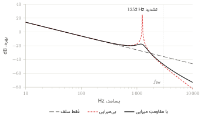
شبکه هم بخشی از صافی است. امپدانسِ شبکه و ترانسفورماتور با \(L_2\) سری است و خازنهای کابلها و صافیهای دیگر با \(C\) موازی؛ پس تشدیدِ واقعی در نیروگاه با تشدیدِ روی کاغذ فرق دارد و با تعدادِ اینورترهای در مدار تغییر میکند. مطالعهٔ هارمونیک و پایداریِ کلِ نیروگاه (فصلهای ۲۷ و ۲۸) همین را میسنجد.
- چرا صافیِ فقطسلفی برای اینورترِ چندمگاواتی ناکارآمد است؟
- چرا تشدید باید از ده برابرِ بسامدِ اصلی بیشتر و از نصفِ بسامدِ کلیدزنی کمتر باشد؟
- میراییِ غیرفعال و فعال را مقایسه کنید.
- چرا تعدادِ اینورترهای در مدار تشدیدِ نیروگاه را تغییر میدهد؟
9.3.5 سلفها و مغناطیس
ایده. سلفِ صافی انرژیِ \(\tfrac12 L I^2\) را ذخیره میکند و، همانطور که در مدارِ مغناطیسیِ فصلِ ۸ دیدیم (بخش 8.2.3)، بیشترِ این انرژی در فاصلهٔ هوایی است، چون چگالیِ انرژی \(B^2/(2\mu_0\mu_r)\) در آهن با \(\mu_r\) بزرگ ناچیز است. پس حجمِ فاصلهٔ هوایی، نه آهن، اندازهٔ سلف را تعیین میکند؛ آهن فقط شار را هدایت میکند و نباید اشباع شود.
تلفات. مس (با اثرِ پوستی و مجاورت در جریانِ پربسامدِ موجدارگی، فصلِ ۴، بخش 4.2.23) و هسته (با بسامدِ کلیدزنی، نه فقط 50 Hz). ورقهای نازکتر یا هستههای پودری و آمورف برای بسامدِ بالا به کار میروند.
مثال 9.22 (انرژی و فاصلهٔ هواییِ سلفِ \(L_1\)) پرسش. سلفِ \(L_1\)ِ مثال 9.21 در جریانِ بیشینه بهاضافهٔ موجدارگی چه انرژیای دارد؟ با چگالیِ شارِ 1.0 T در فاصلهٔ هوایی، حجمِ فاصلهٔ هوایی چقدر است؟
پاسخ.
converter-side inductor L1 = 55.7 uH per phase:
stored energy at peak current plus ripple (2,058 A): 118 J
energy density in an air gap at 1.0 T: 398 kJ/m3
gap volume about 296 cm3 per phase: the gap, not the iron,
stores the energy (chapter 8, magnetic circuit)
the core must not saturate at fault current; inductance that
collapses lets the current rise fast (protection, section C)تفسیر. 118 J در هر فاز، حدودِ 0.3 L فاصلهٔ هوایی. اگر در جریانِ خطا هسته اشباع شود، اندوکتانس فرو میریزد و جریان تندتر بالا میرود؛ پس سلف برای جریانِ قطعِ حفاظت، نه فقط جریانِ نامی، طراحی میشود (بخش 9.4.6).
- چرا انرژیِ سلف در فاصلهٔ هوایی ذخیره میشود؟
- اگر جریانِ طراحی 20 % بیشتر شود، انرژی و حجمِ فاصلهٔ هوایی چه میشوند؟
- دو سازوکارِ تلفاتِ مس در جریانِ پربسامد را نام ببرید.
9.3.6 شینهٔ لایهای و اندوکتانسِ پراکنده
ایده. هنگامِ خاموش شدنِ کلید، جریان با آهنگِ \(\mathrm{d}i/\mathrm{d}t\) از آن به دیودِ مقابل منتقل میشود. هر اندوکتانسی در این حلقهٔ کموتاسیون (پایانههای خازن، شینه، ماژول) ولتاژِ اضافهٔ \(L_\sigma\,\mathrm{d}i/\mathrm{d}t\) روی کلید میگذارد. شینهٔ لایهای، صفحههای مثبت و منفی که با عایقِ نازک روی هم خوابیدهاند، میدانِ دو جریانِ رفت و برگشت را خنثی و اندوکتانس را به دهها نانوهانری کم میکند. مدارهای اسنابر (خازنهای کوچک کنارِ ماژول) بخشی از این انرژی را میگیرند.
مثال 9.23 (فراجهشِ ولتاژ در خاموش شدن) پرسش. با \(\mathrm{d}i/\mathrm{d}t = 5\ \text{kA}/\mu\text{s}\) (A-155، فرضی) در حلقهٔ کموتاسیونِ NPC با ولتاژِ کارِ 650 V (نیمِ 1300 V)، فراجهش را برای حلقههای 30، 60 و 100 nH بیابید.
پاسخ.
turn-off overshoot in an NPC commutation loop, di/dt 5 kA/us (A-155):
loop 30 nH: overshoot 150 V; device sees 800 V of 1200 V
loop 60 nH: overshoot 300 V; device sees 950 V of 1200 V
loop 100 nH: overshoot 500 V; device sees 1150 V of 1200 V
laminated busbars (plates separated by thin insulation)
keep the loop small; slower switching cuts overshoot but
raises switching loss: a design trade-offتفسیر. با 100 nH قطعهٔ 1200 V تا 1150 V میبیند: حاشیه تقریباً تمام. با شینهٔ لایهای خوب (30 nH) 800 V. کند کردنِ کلیدزنی (مقاومتِ گیتِ بزرگتر) فراجهش را کم و تلفاتِ کلیدزنی را زیاد میکند. هندسهٔ شینه و چیدمانِ ماژولها یکی از تصمیمهای اصلیِ طراحیِ مکانیکیِ پشتهٔ توان است، و در ساخت باید با گشتاورِ درستِ پیچها حفظ شود (بخش 9.4.9).
- چرا صفحههای مثبت و منفیِ شینه روی هم خوابانده میشوند؟
- با 40 nH و 8 kA/µs فراجهش چیست؟
- اسنابر چه میکند و چه هزینهای دارد؟
9.3.7 درایورِ گیت و زمانِ مرده
ایده. درایورِ گیت فرمانِ منطقیِ کنترلگر را به ولتاژِ گیت (معمولاً مثبت برای روشن و منفی برای خاموشِ مطمئن) تبدیل میکند و سه کارِ دیگر هم دارد: جداسازیِ گالوانیک میانِ کنترلگرِ ولتاژپایین و کلیدِ پرولتاژ (با ترانسفورماتورِ کوچک یا فیبرِ نوری)، حفاظتِ اشباعزدایی (اگر ولتاژِ روشنِ کلید در جریانِ خیلی زیاد بالا برود، اتصالِ کوتاه را تشخیص میدهد و کلید را آرام خاموش میکند)، و زمانِ مرده: فاصلهٔ کوتاهی که هر دو کلیدِ یک ساق خاموشاند تا هرگز همزمان روشن نشوند.
هزینهها. توانِ درایور \(P_\text{g} = Q_\text{g}\,\Delta V_\text{g}\,f_\text{sw}\) است. زمانِ مرده یک خطای ولتاژ به اندازهٔ میانگینِ \(V_\text{dc}\,t_\text{d}\,f_\text{sw}\) میسازد که علامتش با جهتِ جریان عوض میشود و هارمونیکهای کممرتبه پدید میآورد؛ کنترلگر آن را از روی علامتِ جریان جبران میکند.
مثال 9.24 (درایورِ یک جایگاهِ کلید) پرسش. با بارِ گیتِ 10 µC، ولتاژِ گیتِ +15/-8 V و 3 kHz (A-155، فرضی)، توانِ درایور را بیابید. زمانِ مردهٔ 3 µs در ساقِ NPC با گامِ 500 V چه خطای ولتاژی میسازد؟
پاسخ.
gate drive of one switch position (Q_g 10 uC, +15/-8 V, 3 kHz; A-155):
gate power 0.69 W; twelve positions per stack 8.3 W
dead time 3 us: mean voltage error 4.5 V = 1.3 % of phase voltage
(compensated in the controller from the current sign)
desaturation detection turns a shorted switch off within a few
microseconds, inside the short-circuit time on the data sheetتفسیر. توانِ درایور ناچیز است اما خطای زمانِ مرده 1.3 %ِ ولتاژِ فاز است: بیجبران، جریان در گذر از صفر اعوجاج میگیرد. زمانِ تحملِ اتصالِ کوتاهِ قطعه، که در برگهٔ داده آمده، تعیین میکند حفاظتِ اشباعزدایی چقدر تند باشد؛ برای کاربیدِ سیلیسیم این زمان کوتاهتر است (بخش 9.2.15).
- چهار کارِ درایورِ گیت را بنویسید.
- چرا ولتاژِ گیتِ منفی برای خاموش نگه داشتن به کار میرود؟
- اگر بسامدِ کلیدزنی دو برابر شود، خطای زمانِ مرده چه میشود؟
- حفاظتِ اشباعزدایی چه چیزی را اندازه میگیرد؟
9.3.8 حسگرها و پایشِ عایق
ایده. کنترلگر فقط آنچه را میبیند که حسگرها میسنجند. خطای حسگر مستقیماً خطای کنترل است: آفستِ چند آمپری در حسگرِ جریان مؤلفهٔ DC به ترانسفورماتور تزریق میکند و خطای بهره، توانِ تحویلی را جابهجا میکند (فصلِ ۲، عدمِ قطعیت).
| حسگر | چه میسنجد | فناوریِ رایج | نکتهٔ طراحی |
|---|---|---|---|
| جریانِ AC و DC | جریانِ فازها، رشتهها، پیوند | اثرِ هالِ حلقهبسته، شنت | پهنای باندِ کافی برای حلقهٔ جریان؛ آفست و دما |
| ولتاژ | پیوندِ DC، ولتاژِ شبکه | تقسیمکنندهٔ ایزوله | دقت برای حلقهٔ قفلِ فاز و حفاظت |
| دما | پیوندِ نیمهرسانا (تخمین)، صفحهٔ سرد، سلف، هوا | ترمیستور در ماژول، حسگرِ مقاومتی | دمای پیوند معمولاً از مدل تخمین زده میشود |
| مقاومتِ عایق | عایقِ آرایه و مدارِ DC نسبت به زمین | پایشگرِ عایق | پیش از اتصال و در کار؛ آستانه از استاندارد و سازنده |
| جریانِ نشتی | جریانِ تفاضلیِ کل | حسگرِ جریانِ باقیمانده | برای اینورترهای بیترانسفورماتور |
| قوسِ DC | نویزِ پهنباندِ قوسِ سری | تحلیلِ طیفِ جریان | در برخی اینورترها و بازارها الزامی |
پایشِ عایق. آرایهٔ خورشیدیِ نیروگاه معمولاً نسبت به زمین شناور است (فصلِ ۶، بخش 6.3.10). یک خطای زمینِ اول جریانِ بزرگی نمیسازد و دیده نمیشود؛ خطای دوم یک اتصالِ کوتاه است. پایشگرِ عایق مقاومتِ عایق را پیوسته میسنجد و پیش از آنکه خطای دوم رخ دهد هشدار میدهد (فصلِ ۶، مثال 6.36). در صبحهای مرطوب مقاومتِ عایقِ آرایه طبیعتاً کم میشود؛ روندِ آن، نه یک عدد، اطلاعات میدهد (همان منطقِ روندِ مقاومتِ عایقیِ ژنراتور، فصلِ ۸، بخش 8.5.9).
- آفستِ حسگرِ جریان چه پیامدی برای ترانسفورماتور دارد؟
- چرا دمای پیوند معمولاً اندازهگیری نمیشود و تخمین زده میشود؟
- پایشگرِ عایق در آرایهٔ شناور از چه چیزی جلوگیری میکند؟
9.3.9 خنککاری
ایده. همهٔ تلفات (بخش 9.2.11) گرما میشود و باید از اتاقک بیرون برود. اینورترهای بزرگ از مایع (آب و گلیکول در صفحههای سرد زیرِ ماژولها، با یک مبدّلِ گرمای مایع–هوا بیرونِ اتاقک) یا هوای اجباری (گرماگیرهای پرهدار با فن) استفاده میکنند. مایع گرما را فشردهتر جابهجا میکند و اتاقک را بسته و تمیز نگه میدارد؛ هوا سادهتر است اما گرد و رطوبت را به درون میبرد. دبیِ لازم از \(\dot m = P/(c_p\,\Delta T)\) (فصلِ ۸، بخش 8.3.7).
مثال 9.25 (گرمای یک پشته و کلِ اینورتر) پرسش. یک پشته در توانِ ظاهریِ کامل و ضریبِ توانِ 0.9: تلفاتِ نیمهرساناها را با مدلِ NPC و بقیه را با سهمهای آموزشی (A-156، فرضی) جمع بزنید. دبیِ گلیکول برای افزایشِ 6 K و دبیِ هوا در ارتفاعِ ساختگاه برای افزایشِ 15 K چیست؟
پاسخ.
heat of one stack at full apparent power, pf 0.9 (A-156):
semiconductors (NPC model) 12.4 kW
filter inductors 4.8 kW
capacitors, busbars, cables 1.4 kW
control, fans, auxiliaries 1.6 kW
total 20.2 kW per stack, 81 kW for the 5 MW inverter
liquid loop, cp 3.6 kJ/(kg K), rise 6 K: 3.7 kg/s
if cooled by air (rise 15 K) at 1200 m (air 1.04 kg/m3): 5.2 m3/s,
15 % more volume than at sea level: the reason for altitude deratingتفسیر. حدودِ 81 kW گرما برای هر اینورتر؛ 3.7 kg/s گلیکول. با هوا، 5.2 m³/s لازم است و چون چگالیِ هوا در 1200 m حدودِ 13 % کمتر است، 15 % حجمِ بیشتر از سطحِ دریا: همان دلیلِ کاهشِ توان با ارتفاع (بخش 9.2.14). توانِ فنها و پمپها خودش جزئی از تلفات است و در بودجه آمده.
- دو مزیتِ خنککاریِ مایع و دو مزیتِ خنککاریِ هوایی را بنویسید.
- اگر افزایشِ دمای مایع از 6 به 8 K برسد، دبی چه میشود؟
- چرا گرد و غبار برای خنککاریِ هوایی خطرناک است؟
9.3.10 عایقبندی، فاصلههای هوایی و خزشی
دو فاصله. میانِ دو بخشِ با ولتاژِ متفاوت، فاصلهٔ هوایی (کوتاهترین راه از میانِ هوا) باید در برابرِ اضافهولتاژهای گذرا (صاعقه، کلیدزنی) نشکند، و فاصلهٔ خزشی (کوتاهترین راه روی سطحِ عایق) باید در برابرِ ردیابی، یعنی مسیرِ رسانا که آلودگی و رطوبت روی سطح میسازند، با ولتاژِ کار پایدار بماند. اندازهها از ردهٔ اضافهولتاژ، درجهٔ آلودگی، جنسِ عایق و ولتاژ میآیند و استانداردِ هماهنگیِ عایق (بخش 9.10) جدولها و روشِ آن را میدهد، از جمله تصحیحِ ارتفاع بالای 2000 m، چون هوای رقیق زودتر میشکند (فصلِ ۴، بخش 4.2.34).
عایقِ جامد و تخلیهٔ جزئی. در مبدّلهای ولتاژِ متوسط و ترانسفورماتورهای درونی، عایقِ جامد زیرِ ولتاژِ پالسی (گامهای تند) کار میکند؛ حفرههای کوچک در آن تخلیهٔ جزئی میکنند و به تدریج عایق را میخورند (فصلِ ۸، بخش 8.3.4). آزمونِ تخلیهٔ جزئی جزوِ آزمونهای نوعی و جاریِ این تجهیز است.
ولتاژهای نیروگاهِ P. بیشینهٔ DC: ولتاژِ مدارِ بازِ آرایه در سردترین صبح، نزدیکِ 1500 V (فصلِ ۶، مثال 6.39)؛ ولتاژِ حالتِ مشترک نسبت به زمین که با کلیدزنی جهش دارد (بخش 9.4.7)؛ و ACِ 600 V و 33 kV. طراحِ عایق هر مرز را با بدترین ولتاژِ ماندگار و گذرایش میسنجد.
اندازههای فاصلهٔ هوایی و خزشی و آزمونهای عایق مقدارهای عددیِ استاندارد و محصولاند و این کتاب آنها را بازنویسی نمیکند. طراحیِ عایقِ یک محصول کارِ طراحِ صلاحیتدار با متنِ معتبرِ استاندارد و گواهیِ آزمایشگاهِ مستقل است.
- فاصلهٔ هوایی و خزشی را با یک مثال از تابلوی DC توضیح دهید.
- چرا درجهٔ آلودگی فاصلهٔ خزشی را تغییر میدهد اما فاصلهٔ هوایی را کمتر؟
- چرا ارتفاعِ ساختگاهِ 1200 m زیرِ مرزِ تصحیحِ رایج است اما ساختگاهِ 3000 m نیست؟
9.3.11 پوسته و اسکید
ایده. اینورترِ مرکزی معمولاً با ترانسفورماتورِ 0.6/33 kV و تابلوی حلقویِ 33 kV روی یک اسکید یا در یک اتاقکِ پیشساخته میآید. پوسته باید: (۱) با ردهٔ حفاظتِ پوسته (کدِ IP) گرد و آب را بیرون نگه دارد (فصلِ ۸)؛ (۲) میعان را با گرمکن و تهویهٔ کنترلشده در شبهای سرد پس از روزهای گرم بگیرد؛ (۳) در برابرِ خوردگیِ ردهٔ جویِ ساختگاه دوام بیاورد (فصلِ ۴، بخش 4.3.6)؛ (۴) با قفلهای ایمنیِ درها نگذارد بخشِ برقدار در دسترس باشد؛ (۵) قوسِ داخلی را بیآسیب به انسان مهار کند؛ و (۶) برای حمل و جابهجایی با جرثقیل و تریلر طراحی شده باشد. نیروی باد، زلزله و پی در فصلهای ۲۹ و ۳۰ میآیند.
- چرا میعان در اتاقکِ بسته در شب پس از روزِ گرم رخ میدهد و چگونه گرفته میشود؟
- شش وظیفهٔ پوسته را فهرست کنید.
- چرا اسکیدِ پیشساخته زمانِ نصب را در ساختگاه کم میکند؟
9.3.12 سختافزار و میانافزارِ کنترل
ساختار. کنترلگرِ اینورتر معمولاً یک پردازندهٔ سیگنالِ دیجیتال یا ریزپردازنده برای حلقههای کنترل و یک آرایهٔ منطقیِ برنامهپذیر برای کارهای بسیار تند (تولیدِ پالسها، زمانِ مرده، قطعِ فوری در خطا) دارد، بهاضافهٔ یک پردازندهٔ ارتباطی برای کنترلگرِ نیروگاه و سامانهٔ پایش. میانافزار (به انگلیسی firmware) نرمافزارِ درونِ این تراشهها است و مجموعهٔ پارامترها مقدارهایی است که رفتارِ آن را برای یک ساختگاه تعیین میکند (حالتِ توانِ راکتیو، حدها، تنظیمهای عبور از خطا، بخش 9.4.4).
مرزِ سختافزار و میانافزار. کارهای حفاظتیِ حیاتی (قطع در اشباعزدایی، اضافهجریانِ آنی، اضافهولتاژِ DC) باید در سختافزار یا منطقِ تند و مستقل از نرمافزارِ اصلی باشند تا یک اشکالِ نرمافزاری نتواند آنها را از کار بیندازد. کارهای کندتر (ردیابی، حالتهای کار، ثبتِ رخداد) در میانافزارند. این مرز در بازبینیِ طراحی صریح نوشته میشود (بخش 9.3.15)، و تغییرِ میانافزار یا پارامتر یک تغییرِ طراحی است که زیرِ کنترلِ پیکربندی انجام میشود (بخش 9.4.10). ارتباطِ کنترلگر با بیرون یک سطحِ حملهٔ سایبری است و در فصلِ ۳۶ با دیدِ دفاعی بررسی میشود.
- چرا حفاظتِ اشباعزدایی نباید فقط در نرمافزار باشد؟
- میانافزار و مجموعهٔ پارامتر را از هم جدا کنید.
- چرا تغییرِ یک پارامتر تغییرِ طراحی است؟
9.3.13 تجزیهٔ محصول
ایده. همانطور که ژنراتور به زیرمجموعهها شکسته شد (فصلِ ۸، بخش 8.4.8)، اینورتر هم درختی از زیرمجموعهها است که هر کدام سازنده، آزمون و سند دارد (شکل 9.15). این درخت سه کار میکند: ستونفقراتِ برنامهٔ بازرسی و آزمون است، فهرستِ یدکیها را میسازد، و برای بهرهبردار روشن میکند کدام بخش را میتواند در محل تعویض کند و کدام را باید به کارخانه بفرستد.
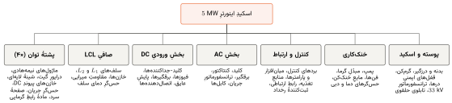
| زیرمجموعه | ردهٔ کلیدی | سازوکارِ فرسودگی | تعویض در محل؟ |
|---|---|---|---|
| ماژولهای نیمهرسانا | ولتاژ، جریان، دمای پیوند | چرخهٔ دما، پرتوِ کیهانی | بله، با رویهٔ سازنده |
| درایورِ گیت و بردها | ولتاژِ جداسازی | رطوبت، دما، قطعههای الکترولیتی | بله |
| خازنهای پیوندِ DC | ولتاژ، جریانِ موجدارگی | گرما، ولتاژ، رطوبت | بله |
| سلفها و خازنهای صافی | جریان، دما، توانِ راکتیو | گرما، لرزش | گاهی |
| شینه و اتصالها | جریان، اندوکتانس | شل شدن، گرم شدنِ اتصال | وارسیِ گشتاور |
| خنککاری | دبی، توانِ گرمایی | سایش، گرفتگی، نشتی | بله |
| کنترل و میانافزار | نسخه و پیکربندی | منسوخ شدنِ قطعه، اشکالِ نرمافزار | بهروزرسانیِ کنترلشده |
| پوسته و اسکید | کدِ IP، ردهٔ خوردگی | خوردگی، درزگیرها | نگهداری |
- سه کارِ درختِ زیرمجموعهها را بنویسید.
- برای هر زیرمجموعه یک آزمونِ کارخانه پیشنهاد کنید.
- چرا منسوخ شدنِ قطعههای الکترونیکی برای تجهیزِ با عمرِ بیستوپنجساله یک ریسک است؟
9.3.14 ردهها و کاهشِ ردهٔ قطعات
ایده. ردهٔ هر قطعه در برگهٔ داده برای شرایطِ مشخص است؛ طراح قطعه را در کسری از آن به کار میبرد (کاهشِ رده، به انگلیسی component derating) تا عمر و قابلیتِ اطمینانِ لازم را بگیرد. سه نمونه: (۱) ولتاژِ نیمهرسانا: ولتاژِ کار بهاضافهٔ فراجهش زیرِ ردهٔ قطعه، و برای قطعههای پرولتاژ، حاشیهٔ اضافه در برابرِ خرابیهای ناشی از پرتوِ کیهانی که با ولتاژِ DC و ارتفاع تند زیاد میشوند؛ (۲) جریانِ ماژول در دمای مایعِ بالاتر کمتر است؛ (۳) ولتاژ و جریانِ موجدارگیِ خازن، که عمرش را با دما و ولتاژ تعیین میکنند. هر تصمیمِ کاهشِ رده به اندازهٔ مجموعه برمیگردد: قطعهٔ بیشتر، جای بیشتر، هزینه و تلفاتِ متفاوت.
مثال 9.26 (دمای مایع و تعدادِ ماژولهای موازی) پرسش. جریانِ مجازِ آموزشیِ یک ماژول در دمای مایعِ ۲۵، ۴۰ و ۵۰ درجه (A-157، فرضی): برای جریانِ بیشینهٔ پشته با حاشیهٔ موجدارگیِ 10 %، چند ماژولِ موازی در هر جایگاه لازم است؟ پیامدش برای پشته چیست؟
پاسخ.
ratings that set the assembly (A-157):
module allowed 1400 A peak at 25 C coolant -> 2 in parallel per position
module allowed 1150 A peak at 40 C coolant -> 2 in parallel per position
module allowed 950 A peak at 50 C coolant -> 3 in parallel per position
stack peak current with 10 % ripple margin: 2,058 A
one more parallel module per position adds 12 modules,
their drivers and busbar space in each of the four stacks
voltage: 1200 V devices at 650 V working plus overshoot;
capacitors at 1000 to 1300 V working on 1300 V parts: the
margin is a reliability choice (cosmic-ray failures of power
devices grow steeply with DC voltage and altitude)تفسیر. اگر سامانهٔ خنککاری فقط 50 °C مایع بدهد، هر جایگاه سه ماژول میخواهد: دوازده ماژولِ بیشتر در هر پشته با درایور، شینه و جای بیشتر. پس طراحیِ گرمایی و الکتریکی جدا نیستند: یک درجه در طراحیِ خنککاری به تعدادِ ماژول و هزینه برمیگردد.
- کاهشِ رده چیست و چرا برای قابلیتِ اطمینان لازم است؟
- چرا خرابیِ ناشی از پرتوِ کیهانی با ارتفاع زیاد میشود؟
- یک تصمیمِ کاهشِ رده را مثال بزنید که اندازهٔ مجموعه را تغییر میدهد.
9.3.15 طراحیِ مرتبهٔ اول: انتخابِ توپولوژی و شش وارسی
گردش. طراحیِ مفهومیِ یک مبدّل از الزامها شروع میشود (توان، ولتاژها، بسامد، کیفیتِ توان، محیط، عمر، قابلیتِ نگهداری)، یک توپولوژی برمیگزیند (دوسطحی یا سهسطحی، با یا بی طبقهٔ افزاینده، با یا بی ترانسفورماتورِ جداکننده) و سپس شش وارسیِ مرتبهٔ اول را دور میزند تا همه با هم سازگار شوند:
| وارسی | پرسش | ابزارِ این فصل |
|---|---|---|
| الکتریکی | ولتاژ و جریانِ هر قطعه، پنجرهٔ DC، مدولاسیون | معادلهٔ 9.5، معادلهٔ 9.6، معادلهٔ 9.14 |
| گرمایی | تلفات، دمای پیوند، خنککاری | معادلهٔ 9.7، معادلهٔ 9.9، مثال 9.25 |
| عایق | فاصلهها، تخلیهٔ جزئی، ارتفاع | بخش 9.3.10 و استاندارد |
| سازگاریِ الکترومغناطیسی | صافیها، حالتِ مشترک، کابلکشی | بخش 9.3.4، بخش 9.4.7 |
| مکانیکی | شینه، لرزش، حمل، گشتاورِ پیچها | بخش 9.3.6، بخش 9.3.11 |
| نگهداریپذیری | دسترسی، تعویضِ ماژول، یدکی، زمانِ تعمیر | جدول 9.3، بخش 9.4.14 |
مثالِ پیوستگی. بسامدِ کلیدزنیِ بالاتر صافی را کوچک میکند (الکتریکی و مکانیکی)، تلفات را زیاد (گرمایی)، \(\mathrm{d}v/\mathrm{d}t\) و گسیل را زیاد (سازگاری)، و شاید یک ماژولِ موازیِ بیشتر بخواهد (نگهداری و هزینه). هیچ وارسی جداگانه بسته نمیشود؛ گردش تا همگرایی تکرار میشود، همانطور که در طراحیِ ژنراتور (فصلِ ۸، بخش 8.4.1).
این فصل طراحی را تا مرتبهٔ اول میبرد تا خریدار و مهندسِ نیروگاه بتوانند پیشنهادها را بفهمند و بسنجند. طراحیِ تفصیلیِ یک اینورتر (شبیهسازیِ مدار و میدان، چیدمان، آزمونِ نمونه، گواهی) کارِ تیمِ طراحیِ سازنده است.
- شش وارسیِ طراحیِ مرتبهٔ اول را نام ببرید و برای هر کدام یک کمیت بنویسید.
- نشان دهید بالا بردنِ ولتاژِ DC روی دستکم سه وارسی اثر میگذارد.
- چرا گردشِ طراحی تکراری است؟
9.3.16 مبدّلِ باتری
ویژگیها. مبدّلِ باتری (به انگلیسی power conversion system) همان پلِ سهفاز است با سه تفاوت: دوسویه است و در شارژ یکسوسازِ فعال و در دشارژ وارونگر؛ ولتاژِ DCِ آن با حالتِ شارژ تغییر میکند، پس کفِ پنجره را کمترین ولتاژِ باتری در دشارژِ کامل و بارِ زیاد تعیین میکند (معادلهٔ 9.6)؛ و انرژی دو بار از آن میگذرد، پس تلفاتش در بازدهِ رفتوبرگشت دو بار شمرده میشود (فصلهای ۳ و ۱۹). مبدّلِ باتری برای رفتارِ سازندهٔ شبکه مناسبترین است، چون پشتِ آن انرژیِ ذخیره هست (بخش 9.4.2).
مثال 9.27 (مبدّلِ باتریِ 20 MW) پرسش. باتریِ سناریوی S1 میانِ 1000 و 1450 V کار میکند (A-167، فرضی). بیشینهٔ ولتاژِ AC را با حاشیهٔ 10 % بیابید؛ با منحنیِ بازدهِ مثال 9.13، بازدهِ یکبار و رفتوبرگشتِ مبدّل و تلفاتِ سالانهٔ آن با انرژیِ شارژِ فصلِ ۵ را برآورد کنید.
پاسخ.
battery converter, 20 MW, battery 1000 to 1450 V DC (A-167):
largest AC voltage for the lowest DC with 10 % headroom: 643 V
-> 600 V chosen, as for the PV inverters (D-012)
at 25 % load: one pass 0.9834, charge and discharge 0.9671
at 50 % load: one pass 0.9860, charge and discharge 0.9721
at 100 % load: one pass 0.9830, charge and discharge 0.9663
12.59 GWh/yr charged (chapter 5): the converter alone loses about 351 MWh/yr
in both passes; its share of the 14 % round-trip lossتفسیر. با 600 V مبدّلِ باتری همان ولتاژِ اینورترهای خورشیدی را دارد و ترانسفورماتورهای همردیف ممکن است. مبدّل حدودِ 3 % از هر کیلوواتساعتِ رفتوبرگشت را میگیرد، حدودِ 350 MWh در سال، یعنی بخشِ مهمی از 14 % تلفاتِ رفتوبرگشتِ کل که فصلِ ۵ دید؛ بقیه در سلولها، تهویه و ترانسفورماتور است (فصلِ ۱۹).
9.3.17 مبدّلِ توربین و چاپرِ ترمز
ایده. در مبدّلِ پشتبهپشتِ توربین، مبدّلِ سمتِ ماشین گشتاورِ ژنراتور را با کنترلِ برداری در قابِ \(dq\) تنظیم میکند (فصلِ ۸، بخش 8.2.19) و مبدّلِ سمتِ شبکه ولتاژِ پیوندِ DC را ثابت نگه میدارد و توان را به شبکه میدهد. اگر ولتاژِ شبکه بیفتد، سمتِ شبکه نمیتواند همان توان را بدهد؛ اما روتور هنوز توان میدهد و پیوندِ DC در چند میلیثانیه بالا میرود. چاپرِ ترمز یک کلید و یک مقاومت روی پیوند است که انرژیِ اضافه را میسوزاند تا کنترلگرِ گشتاور و گام فرصتِ واکنش داشته باشند.
مثال 9.28 (پیوندِ DC در افتِ کاملِ ولتاژ) پرسش. با پیوندِ 30 mF در 1150 V، حدِ 1250 V و توانِ 5.32 MW (A-168، فرضی)، پیوند بیچاپر کِی به حد میرسد؟ مقاومتِ چاپر و انرژیِ آن در افتِ 150 ms چیست؟
پاسخ.
turbine converter, grid voltage near zero for 150 ms (A-168):
without a chopper the DC link (30 mF) rises 1150 -> 1250 V in 0.7 ms
chopper resistor for 5.32 MW at 1250 V: 0.294 ohm
energy into the resistor over the dip at 5 MW: 0.75 MJ
(chapter 8 sent the same energy into rotor speed instead)
the resistor is rated for this energy pulse and a cooling time,
not for continuous power: repeated dips need a duty limitتفسیر. کمتر از یک میلیثانیه تا حد: هیچ حلقهٔ مکانیکیای به این سرعت نمیرسد، پس چاپر یا کاهشِ فوریِ گشتاورِ ژنراتور لازم است. 0.75 MJ همان انرژی است که فصلِ ۸ به سرعتِ روتور فرستاد (بخش 8.5.10)؛ طراح میانِ دو راه، یا ترکیبشان، انتخاب میکند. مقاومتِ چاپر برای یک پالسِ انرژی و زمانِ سرد شدن ردهبندی میشود؛ افتهای پیاپی یک حدِ کار میخواهند که در الزامهای عبور از خطا و طراحیِ توربین دیده شود (فصلهای ۱۱ و ۱۷).
9.3.18 پشتههای موازی و درهمتنیدگی
ایده. اینورترِ 5 MW چهار پشتهٔ موازی دارد. اگر حاملهای پشتهها همفاز باشند، موجدارگیها جمع میشوند؛ اگر حاملها یکچهارمِ دوره نسبت به هم جابهجا شوند (درهمتنیدگی، به انگلیسی interleaving)، موجدارگیها بخشی از هم را خنثی میکنند و آنچه میماند در چهار برابرِ بسامدِ کلیدزنی است، جایی که صافی آن را آسانتر میگیرد. بها: جریانهای گردشی میانِ پشتهها، که سلفهای هر پشته باید محدودشان کنند، و تقسیمِ برابرِ جریان که کنترلگر باید نگه دارد.
مثال 9.29 (چهار پشتهٔ درهمتنیده) پرسش. موجدارگیِ یک پشته و جمعِ چهار پشته را با حاملهای جابهجاشده (A-169) با موجدارگیِ چهار پشتهٔ همفاز مقایسه کنید.
پاسخ.
four stacks with carriers shifted by a quarter period (A-169):
ripple of one stack 364 A peak-to-peak
ripple of the sum 317 A, against 1455 A if the carriers were aligned
the ripples partly cancel and the remaining ripple sits at four
times the switching frequency: a smaller grid-side filter
price: circulating currents between stacks, which their own
inductors must limitتفسیر. جمعِ چهار پشته فقط 317 A موجدارگی دارد، بهجای 1455 Aِ همفاز: حدودِ پنج برابر کمتر و در بسامدِ بالاتر (شکل 9.16). پس سلفِ سمتِ شبکه و خازنِ صافی را میتوان کوچکتر کرد. این یک انتخابِ سیستمی است: سازنده آن را در طراحیِ پشتهها و کنترل میگذارد، و خریدار آن را در طیفِ هارمونیکیِ اینورتر میبیند.
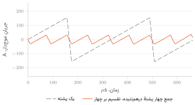
- چرا تلفاتِ مبدّلِ باتری در بازدهِ رفتوبرگشت دو بار شمرده میشود؟
- چرا کفِ پنجرهٔ مبدّلِ باتری با حالتِ شارژ تغییر میکند؟
- چاپرِ ترمز در چه لحظهای کار میکند و چرا برای توانِ پیوسته ردهبندی نمیشود؟
- درهمتنیدگیِ دو پشته با حاملهای نیمدوره جابهجا، موجدارگی را به چه بسامدی میبرد؟
9.3.19 مبدّلهای کمکی: منبعِ بیوقفه و شارژرها
ایده. جز مبدّلهای بزرگِ تولید، نیروگاه دهها مبدّلِ کوچک دارد: منبعِ بیوقفه برای پایش، مخابرات و حفاظت، شارژرهای باتریِ DCِ پست، درایوهای فن و پمپ (فصلِ ۸) و منبعهای تغذیهٔ داخلیِ هر تابلو. منبعِ بیوقفهٔ دوتبدیلی یک یکسوساز، یک باتری و یک وارونگر دارد: بار همیشه از وارونگر تغذیه میشود و افت یا قطعِ شبکه را نمیبیند. بهای آن دو تبدیلِ همیشگی و تلفاتِ پیوسته است.
مثال 9.30 (تلفاتِ منبعِ بیوقفه) پرسش. منبعِ بیوقفهٔ دوتبدیلیِ بارهای ضروری (12 kW، بازدهِ 0.94؛ A-175، فرضی) چه تلفاتی در سال دارد؟
پاسخ.
double-conversion UPS for 12 kW of essential loads (A-175):
efficiency 0.94: losses 0.77 kW, 6.7 MWh/yr
rectifier + battery + inverter: the load sees clean voltage even
through a dip, at the price of two conversions all the time
the input filter of the rectifier is the capacitive load that
can under-excite the backup generator (chapter 8)تفسیر. 6.7 MWh در سال، کوچک در برابرِ اینورترها اما پیوسته و جزئی از مصرفِ داخلیِ نیروگاه. صافیِ ورودیِ همین منبعِ بیوقفه بارِ خازنیای است که فصلِ ۸ دید مولدِ پشتیبان را کمتحریک میکند (مثال 8.28): مبدّلهای کوچک هم رابطهای بزرگ دارند.
9.3.20 مبدّلِ سمتِ ماشین و ولتاژِ ژنراتور
ایده. ولتاژِ ژنراتورِ آهنربای دائم با سرعت متناسب است (فصلِ ۸). مبدّلِ سمتِ ماشین باید در بیشینهٔ سرعت، با معادلهٔ 9.6، ولتاژی بیش از نیروی محرکهٔ ژنراتور بسازد تا جریان را کنترل کند. اگر نتواند، دیودهای موازیِ کلیدها مانندِ یک یکسوسازِ کنترلنشده عمل میکنند و ژنراتور جریانی بیکنترل به پیوند میدهد.
مثال 9.31 (نیروی محرکه در برابرِ پیوندِ DC) پرسش. برای ژنراتورِ 690 V در 1155 rpm (A-111)، ولتاژِ DCِ لازم را در نیم سرعت، سرعتِ نامی و 15 % فراسرعت بیابید.
پاسخ.
machine-side converter: generator EMF against the DC link (A-111):
speed EMF (line) DC needed (SVPWM)
578 rpm 345 V 488 V
1155 rpm 690 V 976 V
1328 rpm 793 V 1122 V
at 15 % overspeed the EMF needs about 1122 V: almost all of a
1150 V link; above it the converter must weaken the field
(chapter 8) or the generator drives current into the link
through the diodes, uncontrolledتفسیر. در فراسرعت 1122 V لازم است و پیوندِ 1150 V تقریباً تمام. تضعیفِ میدان (فصلِ ۸، بخش 8.2.25) حاشیه میسازد؛ و حفاظتِ فراسرعت و گام باید پیش از آنکه ولتاژِ ژنراتور از کنترل بیرون رود عمل کنند. این یکی از رابطهایی است که مبدّل و ژنراتور را باید با هم مشخص کرد (فصلهای ۸ و ۱۱).
9.3.21 عمرِ خازنهای فیلمی
ایده. خازنِ فیلمی با گرم شدنِ نقطهٔ داغش (از تلفاتِ جریانِ موجدارگی در مقاومتِ سریِ معادل) و با ولتاژِ بالاتر زودتر فرسوده میشود: ظرفیتش بهتدریج کم میشود تا به حدِ پایانِ عمر برسد. سازندگان منحنیهای عمر بر حسبِ دما و ولتاژ میدهند؛ یک قاعدهٔ آموزشی که شکلِ آنها را نشان میدهد: هر ده کلوین دمای بیشتر عمر را نصف میکند و افزایشِ ولتاژ با یک توانِ بزرگ عمر را کم میکند.
مثال 9.32 (عمرِ خازن با دما و ولتاژ) پرسش. با قاعدهٔ آموزشیِ A-176، عمرِ خازن را در چند دمای نقطهٔ داغ و با 10 % اضافهولتاژ بیابید.
پاسخ.
film capacitor life (teaching law, A-176):
L = L0 x 2^((T0 - T)/10) x (V0/V)^7
L0 100,000 h at 70 C hot spot and rated voltage
hot spot 60 C, voltage x 1.0: 200,000 h ( 22.8 years at full stress)
hot spot 70 C, voltage x 1.0: 100,000 h ( 11.4 years at full stress)
hot spot 80 C, voltage x 1.0: 50,000 h ( 5.7 years at full stress)
hot spot 85 C, voltage x 1.0: 35,355 h ( 4.0 years at full stress)
hot spot 70 C, voltage x 1.1: 51,316 h ( 5.9 years at full stress)
ten kelvin halve the life and ten per cent overvoltage halves
it again: the ripple current (heat) and the DC voltage window
of section B set the capacitor's lifeتفسیر. از 70 به 80 °C عمر نصف میشود و 10 % ولتاژِ بیشتر هم تقریباً همین اثر را دارد. چون اینورترِ خورشیدی فقط بخشی از سال در تنشِ کامل است، عمرِ واقعی بیشتر از ستونِ «تنشِ کامل» است؛ اما جهت روشن است: جریانِ موجدارگی (مثال 9.20)، خنککاری و پنجرهٔ ولتاژ، سه تصمیمِ طراحیاند که عمرِ خازن را میسازند، و پایشِ ظرفیت در نگهداری فرسودگی را پیش از خرابی نشان میدهد (فصلِ ۵۲).
- چرا منبعِ بیوقفهٔ دوتبدیلی تلفاتِ پیوسته دارد؟
- در چه سرعتی مبدّلِ سمتِ ماشینِ نیروگاهِ P به حدِ ولتاژ میرسد؟
- اگر دمای نقطهٔ داغِ خازن 5 K کم شود، عمر با قاعدهٔ آموزشی چند برابر میشود؟
9.3.22 اینورترهای بیترانسفورماتور
ایده. اینورترِ مرکزیِ نیروگاهِ P پشتِ ترانسفورماتورِ 0.6/33 kV است و آرایهٔ آن نسبت به شبکهٔ ولتاژپایین جدا است. بسیاری از اینورترهای رشتهای بیترانسفورماتورِ جداکنندهاند: سبکتر، ارزانتر و پربازدهتر، اما آرایه دیگر جدا نیست. ظرفیتِ پراکندهٔ بزرگِ آرایه به زمین با ولتاژِ حالتِ مشترکِ اینورتر یک جریانِ نشتی میسازد (بخش 9.4.7)، پس سه چیز جای جداسازی را میگیرد: توپولوژیهایی که ولتاژِ حالتِ مشترک را در کلیدزنی ثابت نگه میدارند، پایشِ جریانِ باقیمانده که نشتیِ خطرناک را میبیند و قطع میکند، و وارسیِ مقاومتِ عایق پیش از هر اتصال (بخش 9.3.8). در نیروگاههای بزرگ با اینورترهای رشتهای، ترانسفورماتورِ ولتاژِ متوسط پس از تابلوی جمعِ AC همچنان هست؛ اما میانِ آرایهها و آن تابلو جداسازی نیست و طراحیِ زمینکردن و حفاظت باید این را ببیند (فصلهای ۶ و ۲۶).
9.3.23 خطمبنای راهاندازی
ایده. پایشِ عملکرد و وضعیت در بهرهبرداری فقط وقتی معنا دارد که خطمبنا داشته باشد: عددهایی که در راهاندازی، در شرایطِ ثبتشده و با ابزارِ مشخص اندازه گرفته شدهاند. جدول 9.5 حداقلِ خطمبنای هر اینورتر است؛ هر سطر در بهرهبرداری با همان شرایط مقایسه میشود (فصلهای ۵۰ و ۵۱).
| کمیت | شرایطِ ثبت | استفاده در بهرهبرداری |
|---|---|---|
| بازده در چند بار | تابش و دمای ثبتشده؛ ولتاژِ DC | افتِ بازده: آلودگیِ خنککاری، فرسودگی |
| دمای داغترین ماژول و مایع | بارِ مشخص و دمای هوا | باقیماندهٔ دما (فصلِ ۸، بخش 8.5.15) |
| ولتاژِ DC در قله | تابش و دمای سلولِ ثبتشده | رشتههای معیوب، عدمِ تطابق |
| مقاومتِ عایقِ آرایه | صبح و ظهر، رطوبت | روندِ عایق (بخش 9.3.8) |
| طیفِ هارمونیکی | چند بار | تغییرِ صافی، خازنهای صافی |
| زمانِ پاسخ به پلههای \(P\) و \(Q\) | با کنترلگرِ نیروگاه | تغییرِ پیکربندی یا ارتباط |
| اثرانگشتِ پیکربندی | پس از پذیرش | هر تغییرِ ناخواسته (بخش 9.4.10) |
- سه جایگزینِ جداسازیِ گالوانیک در اینورترِ بیترانسفورماتور را نام ببرید.
- چرا خطمبنای بازده بدونِ شرایطِ ثبت بیفایده است؟
- کدام سطرِ خطمبنا نخستین نشانهٔ گرفتگیِ مبدّلِ گرما را میدهد؟
9.4 پ. رفتار در شبکه و ساخت
بخشِ پ دو نیمه دارد. نیمهٔ اول رفتارِ اینورتر در شبکه است: ساختارِ کنترل، پیرو و سازندهٔ شبکه، شبکهٔ ضعیف، حالتهای کار، رفتار در خطا، حفاظت و سازگاریِ الکترومغناطیسی. نیمهٔ دوم از الزامهای رابطِ سازنده تا ساختِ صنعتی، کنترلِ پیکربندی، تأییدِ صلاحیت، آزمونهای کارخانه، یکپارچهسازی و قابلیتِ اطمینان میرود.
9.4.1 ساختارِ کنترل: حلقهٔ قفلِ فاز و حلقههای جریان
ایده. اینورترِ پیروِ شبکه خود را یک منبعِ جریان میداند: زاویهٔ ولتاژِ شبکه را میسنجد و جریانی با دامنه و فازِ دلخواه نسبت به آن تزریق میکند. ساختارش در شکل 9.17 آمده است:
۱. حلقهٔ قفلِ فاز (به انگلیسی phase-locked loop) زاویهٔ \(\theta\) ولتاژِ شبکه را دنبال میکند.
۲. با تبدیلِ پارک در همان زاویه (فصلِ ۳، بخش 3.3.17)، جریانها و ولتاژهای سهفاز به مؤلفههای \(d\) و \(q\) تبدیل میشوند که در حالتِ پایدار ثابتاند.
۳. حلقههای بیرونی کندتر مرجعها را میسازند: حلقهٔ ولتاژِ DC یا توانِ اکتیو \(i_d^*\) را، و حلقهٔ توانِ راکتیو یا ولتاژ \(i_q^*\) را.
۴. حلقههای جریانِ داخلیِ تند با کنترلگرِ تناسبی–انتگرالی، جملههای جداسازی \(\omega L\,i\) میانِ دو محور، و پیشخورِ ولتاژِ شبکه، ولتاژِ مرجعِ پل را میسازند؛ تبدیلِ معکوسِ پارک و مدولاسیون آن را به پالس تبدیل میکنند.
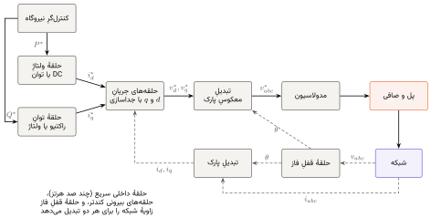
حلقهٔ قفلِ فاز. در قابِ گردانِ همگام، مؤلفهٔ \(q\) ولتاژِ شبکه با خطای زاویه متناسب است: \(v_q = V\sin(\theta_\text{g} - \theta)\). یک کنترلگرِ تناسبی–انتگرالی آن را صفر میکند و خروجیاش بسامدِ زاویهای است. با پهنای باندِ \(\omega_n\) و میراییِ \(\zeta\) (برای ولتاژِ یک پریونیت): \(k_p = 2\zeta\omega_n\) و \(k_i = \omega_n^2\) (همان سامانهٔ مرتبهٔ دومِ فصلِ ۳).
def srf_pll(theta_grid, dt: float, f_n: float = 20.0, zeta: float = 0.707,
f0: float = 50.0):
"""Synchronous-reference-frame PLL on a unit grid voltage: the q-axis
voltage sin(theta_grid - theta) drives a PI controller whose output is
the angular frequency. Returns estimated angle and frequency arrays."""
w_n = 2 * math.pi * f_n
kp, ki = 2 * zeta * w_n, w_n ** 2
theta, integ = 0.0, 0.0
th_out = np.empty(len(theta_grid))
f_out = np.empty(len(theta_grid))
for k, tg in enumerate(theta_grid):
v_q = math.sin(tg - theta)
integ += ki * v_q * dt
w = 2 * math.pi * f0 + kp * v_q + integ
th_out[k], f_out[k] = theta, w / (2 * math.pi)
theta += w * dt
return th_out, f_outمثال 9.33 (پرشِ فاز و پلهٔ بسامد) پرسش. یک حلقهٔ قفلِ فاز با پهنای باندِ 20 Hz و میراییِ 0.707 (A-158) را با پرشِ فازِ \(30^\circ\) در 0.1 s و پلهٔ بسامدِ 0.5 Hz در 0.3 s بیازمایید.
پاسخ.
synchronous-frame PLL, bandwidth 20 Hz, damping 0.707 (A-158):
30 deg phase jump at 0.1 s: error back within 2 deg after 33 ms;
meanwhile the frequency estimate jumps to 64.3 Hz for a few ms
frequency step 50 -> 50.5 Hz at 0.3 s: estimate overshoots to 50.60 Hz
and reads 50.500 Hz at 0.6 s; peak transient error 0.7 deg
a faster PLL follows sooner but passes more noise and, in a
weak grid, can interact with the converter's own current;
a frequency or RoCoF protection fed from such an estimate
needs filtering, or a phase jump trips it falselyتفسیر. خطای زاویه در حدودِ 33 ms زیرِ دو درجه میرود، اما بسامدِ برآوردی در لحظهٔ پرشِ فاز تا 64 Hz جهش میکند (شکل 9.18): پرشِ فاز از دیدِ حلقه مانندِ تغییرِ ناگهانیِ بسامد است. حفاظتِ بسامد یا آهنگِ تغییرِ بسامد که از چنین برآوردی تغذیه شود، بیصافی با هر خطای دور در شبکه به اشتباه قطع میکند. پهنای باند یک مصالحه است: تندتر یعنی دنبال کردنِ سریعتر و نویزِ بیشتر.
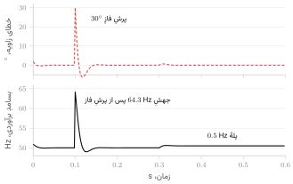
حلقهٔ جریان. برای هر محور، مدارِ صافی یک سلف و مقاومت است: \(L\,\mathrm{d}i/\mathrm{d}t = v - R\,i\). اگر صفرِ کنترلگرِ تناسبی–انتگرالی قطبِ مدار را حذف کند (\(k_p = L\,\omega_c\) و \(k_i = R\,\omega_c\))، حلقهٔ بسته یک سامانهٔ مرتبهٔ اول با پهنای باندِ \(\omega_c\) است. محدودیتِ واقعی تأخیرِ محاسبه و مدولاسیون است، حدودِ یکونیم دورهٔ نمونهبرداری.
مثال 9.34 (پلهٔ جریان با و بی تأخیر) پرسش. حلقهٔ جریانِ یک پشته با صافیِ مثال 9.21 را برای پهنای باندِ 300 Hz تنظیم کنید و پاسخ به پلهٔ \(i_d\) را بیتأخیر و با تأخیرِ یکونیم نمونه (نمونهبرداری در دو برابرِ بسامدِ کلیدزنی) شبیهسازی کنید.
پاسخ.
current loop of one stack in the dq frame (per unit, A-158):
plant L 0.128 pu, R 0.005 pu; PI tuned for 300 Hz bandwidth
kp 0.7680, ki 9.425 (zero cancels the plant pole)
ideal : 0 -> 90 % in 1.22 ms, overshoot 0.0 %
delay : 0 -> 90 % in 0.76 ms, overshoot 14.4 %
the computation and PWM delay (1.5 samples) adds overshoot;
it limits how fast any converter current loop can beتفسیر. بیتأخیر، پاسخ مرتبهٔ اول است و ۹۰ درصد را در \(2.3/\omega_c = 1.22\ \text{ms}\) میگیرد (درست). با تأخیر، فرمانهای نمونهبرداریشده نگه داشته میشوند، پاسخ کمی زودتر بالا میرود اما 14 % فراجهش دارد (شکل 9.19). تأخیر حدِ بالای پهنای باند است؛ اگر کسی بخواهد حلقه را خیلی تند کند، پایداری را از دست میدهد، بهویژه با تشدیدِ صافی و شبکهٔ ضعیف (بخش 9.4.3).
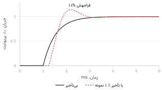
- چرا در قابِ \(dq\) جریانهای سینوسی ثابت میشوند و این چه سودی برای کنترل دارد؟
- نقشِ جملههای جداسازی چیست؟
- چرا پرشِ فاز بسامدِ برآوردی را جهش میدهد؟
- چه چیزی پهنای باندِ حلقهٔ جریان را محدود میکند؟
9.4.2 پیرو و سازندهٔ شبکه
دو مفهوم، نه یک. پیروِ شبکه (به انگلیسی grid-following) یعنی اینورتر یک منبعِ جریانِ کنترلشده است که زاویه و بسامد را از شبکه میگیرد (با حلقهٔ قفلِ فاز) و جریانش را نسبت به آن تنظیم میکند. بیولتاژِ شبکه نمیتواند کار کند. سازندهٔ شبکه (grid-forming) یعنی اینورتر یک منبعِ ولتاژ پشتِ یک امپدانس است که دامنه و بسامدِ ولتاژِ خودش را میسازد و توانش از اختلافِ زاویه با شبکه پدید میآید، مانندِ ماشینِ همگام (فصلِ ۸، بخش 8.2.20). چند پیامد:
- اینورترِ سازنده در برابرِ تغییرِ ناگهانیِ زاویه یا بسامدِ شبکه بیدرنگ پاسخ میدهد، چون ولتاژش ثابت میماند و جریان خودش تغییر میکند؛ اینورترِ پیرو ابتدا باید تغییر را بسنجد.
- سازنده میتواند لختیِ مجازی و افتِ بسامد ارائه کند و یک شبکهٔ جزیرهای را راه بیندازد؛ پیرو میتواند پاسخِ سریعِ بسامد بدهد، اما با تأخیرِ اندازهگیری.
- هیچکدام بیانرژی کاری نمیکند: پاسخ به کمبودِ تولید، توانِ اضافه میخواهد، از باتری، از نیروگاهِ کمبارشده یا از انرژیِ جنبشیِ روتورِ توربین.
- سازنده بودن یک رفتارِ کنترلی است، نه یک سختافزارِ دیگر؛ اما جریانِ اینورتر محدود است، پس در خطا باید جریان را محدود کند و رفتارش در آن لحظه با یک ماشینِ همگام فرق دارد.
مثال 9.35 (افتِ بسامد با سه رفتار) پرسش. در یک سامانهٔ آموزشی با 60 % تولیدِ همگام و 40 % مبدّلی (A-159، فرضی)، ده درصد تولید ناگهان قطع میشود. آهنگِ تغییرِ بسامد و کفِ بسامد را برای مبدّلهای پیروِ بیپاسخ، پیرو با پاسخِ سریعِ بسامد (با تأخیرِ اندازهگیریِ 0.25 s) و سازنده با لختیِ مجازی و افت بیابید.
پاسخ.
frequency after losing 10 % of generation (system base, A-159):
60 % synchronous (H 4 s, governor droop 5 %, 5 s lag), 40 %
converters; converter headroom 5 % (curtailed or battery)
GFL, no response RoCoF -0.97 Hz/s, nadir 48.75 Hz at 2.2 s
GFL, fast frequency response RoCoF -0.83 Hz/s, nadir 49.34 Hz at 1.8 s
GFM, inertia and droop RoCoF -0.44 Hz/s, nadir 49.48 Hz at 2.7 s
grid-forming adds inertia at once (a voltage source behind an
impedance); grid-following must first measure the frequency
(PLL, filter), so its help arrives later; both need energyتفسیر. بیپاسخ، فقط لختیِ ماشینهای همگام هست و بسامد تا 48.75 Hz میافتد (شکل 9.20). پاسخِ سریعِ پیرو کف را تا 49.34 Hz بالا میآورد، اما آهنگِ اولیه را کم عوض نمیکند، چون دیر میرسد. سازنده از لحظهٔ اول لختی میدهد: آهنگ نصف و کف 49.48 Hz. محدودیت: مدلِ تکگرهٔ آموزشی، بیقیدِ شبکه و با حدِ 5 % برای توانِ اضافه؛ رفتارِ واقعی را مطالعههای دینامیکِ شبکه با مدلهای تأییدشدهٔ سازنده نشان میدهند (فصلِ ۲۸).
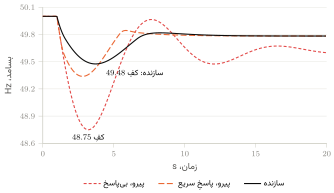
- پیرو و سازندهٔ شبکه را در یک جمله از هم جدا کنید.
- چرا اینورترِ پیرو بیولتاژِ شبکه کار نمیکند؟
- لختیِ مجازی انرژیاش را از کجا میآورد؟
- چرا پاسخِ سریعِ بسامدِ پیرو آهنگِ اولیهٔ تغییرِ بسامد را کم تغییر میدهد؟
9.4.3 شبکهٔ ضعیف و نسبتِ اتصالِ کوتاه
ایده. نسبتِ اتصالِ کوتاه در نقطهٔ اتصال، \(\text{SCR} = S_\text{sc}/P_\text{r}\)، نشان میدهد شبکه در برابرِ نیروگاه چقدر «سفت» است (فصلِ ۷، بخش 7.6). در شبکهٔ ضعیف، تغییرِ جریانِ نیروگاه ولتاژ و زاویهٔ نقطهٔ اتصال را بیشتر جابهجا میکند؛ حلقهٔ قفلِ فاز آن جابهجایی را میبیند و جریان را تغییر میدهد، و این بازخورد میتواند ناپایدار شود. سازندگان برای کارِ پایدار یک کمینهٔ نسبتِ اتصالِ کوتاه میدهند و رفتارِ سازندهٔ شبکه در شبکههای ضعیف یکی از راهحلها است.
مثال 9.36 (تغییرِ ولتاژ با چهار سفتیِ شبکه) پرسش. برای نوسانِ 100 MW در نقطهٔ اتصال با \(X/R = 10\) (A-109)، تغییرِ ولتاژ را با توانِ اتصالِ کوتاهِ 1000، 500، 300 و 200 MVA (A-160، فرضی) برای تغییرِ توانِ اکتیو و راکتیو برآورد کنید (\(\Delta V \approx R\,\Delta P + X\,\Delta Q\) در پریونیت).
پاسخ.
voltage change at the point of connection for a 100 MW swing:
S_sc MVA SCR z pu (100 MVA) dV for dP 1 pu dV for dQ 0.33 pu
1000 10.0 0.100 1.00 % 3.28 %
500 5.0 0.200 1.99 % 6.57 %
300 3.0 0.333 3.32 % 10.95 %
200 2.0 0.500 4.98 % 16.42 %
X/R 10 (A-109): active power hardly moves the voltage, reactive
power does; in a weak grid (SCR below about 3) the same current
moves the voltage and angle much more, and grid-following
control can become unstable: check the maker's minimum SCRتفسیر. با \(X/R\) بزرگ، توانِ اکتیو ولتاژ را کم و توانِ راکتیو زیاد جابهجا میکند؛ پس کنترلِ ولتاژ با توانِ راکتیو است (فصلِ ۷، بخش 7.4.12). از نسبتِ ۱۰ به ۲، حساسیت پنج برابر میشود. این عددها فقط نشانهاند؛ پایداریِ کنترل در شبکهٔ ضعیف با مطالعهٔ دینامیکی و مدلهای سازنده سنجیده میشود (فصلهای ۱۷ و ۲۸).
- نسبتِ اتصالِ کوتاه را تعریف کنید و برای 1000 MVA و 100 MW حساب کنید.
- چرا در شبکهٔ ضعیف حلقهٔ قفلِ فاز با خودِ اینورتر برهمکنش دارد؟
- چرا با \(X/R\) بزرگ توانِ راکتیو اهرمِ ولتاژ است؟
9.4.4 حالتهای کار
ایده. اینورتر چندین رفتارِ قابلِ تنظیم دارد که شبکه یا کنترلگرِ نیروگاه از آنها میخواهد. مهمترینها: محدود کردنِ توانِ اکتیو (برای حدِ صادرات یا دستورِ بهرهبردارِ شبکه)؛ پاسخِ بسامد \(P(f)\) با افت و باندِ مرده؛ توانِ راکتیو در یکی از حالتهای مقدارِ ثابت، ضریبِ توانِ ثابت یا وابسته به ولتاژ \(Q(U)\)؛ آهنگِ تغییرِ توان؛ توانِ راکتیو در شب؛ و ترتیبِ راهاندازی و خاموشی (وارسیِ عایق، شارژِ پیوندِ DC، همگام شدن با حلقهٔ قفلِ فاز، وصلِ کنتاکتور، افزایشِ تدریجیِ توان).
مثال 9.37 (افتِ بسامد، \(Q(U)\) و هزینهٔ توانِ راکتیو در شب) پرسش. با تنظیمهای آموزشیِ A-161 (افتِ 4 % با باندِ مردهٔ 0.2 Hz؛ \(Q(U)\) با باندِ مردهٔ ±1 % و \(Q\) کامل در 5 %): کاهشِ توان در 50.5 Hz و \(Q\) در چند ولتاژ را بیابید. هزینهٔ بیدار نگه داشتنِ ده اینورتر برای توانِ راکتیو در شب چیست؟
پاسخ.
operating modes of the PV inverters (teaching settings, A-161):
P(f): droop 4 %, dead band 0.2 Hz;
at 50.5 Hz the plant reduces by 15 % of rating
Q(U): no reactive power within +-1 %; full 0.44 pu at 5 % off
the reference voltage (slope from A-101: Q at 5 MW)
V 0.94 pu -> Q +0.44 pu (+ = delivered)
V 0.97 pu -> Q +0.22 pu (+ = delivered)
V 0.99 pu -> Q +0.00 pu (+ = delivered)
V 1.00 pu -> Q +0.00 pu (+ = delivered)
V 1.03 pu -> Q -0.22 pu (+ = delivered)
V 1.06 pu -> Q -0.44 pu (+ = delivered)
Q at night: each inverter's no-load loss 13.7 kW;
ten inverters awake 12 h every night: 601 MWh/yr
each mode is a setting the grid code or the plant controller
asks for (chapters 17, 20, 28); the inverter offers the rangeتفسیر. بیدار نگه داشتنِ اینورترها در شب حدودِ 600 MWh در سال تلفِ بیباری دارد (مثال 9.13)؛ اگر نقطهٔ اتصال در شب توانِ راکتیو بخواهد، باید این هزینه با گزینههای دیگر (راکتور یا خازنِ ثابت، تنظیمِ تپ، مبدّلِ باتری) سنجیده شود. هیچیک از این تنظیمها الزامِ شبکه نیست؛ عددهای واقعی را آییننامهٔ اتصالِ کشورِ پروژه و بهرهبردارِ شبکه میدهند (فصلهای ۱۷ و ۵۵ تا ۵۷).
- پنج حالتِ کارِ اینورتر را نام ببرید.
- با افتِ 5 % و باندِ مردهٔ 0.2 Hz، در 50.7 Hz توان چند درصد کم میشود؟
- ترتیبِ راهاندازیِ یک اینورترِ خورشیدی در بامداد را بنویسید.
9.4.5 رفتار در خطا
ماندن در مدار. وقتی ولتاژِ شبکه بر اثرِ یک خطای دور میافتد، الزامهای اتصال معمولاً میخواهند نیروگاه برای مدتِ مشخصی در مدار بماند (به انگلیسی fault ride-through) و جریانِ راکتیو تزریق کند تا ولتاژ را نگه دارد. چون جریانِ اینورتر محدود است، جریانِ راکتیو \(I_q\) از جریانِ اکتیو \(I_p\) سهم میگیرد:
\[ I_q = \min\!\big(I_\text{max},\ k\,(1 - V)\big), \qquad I_p \le \sqrt{I_\text{max}^2 - I_q^2} \tag{9.16}\]
که رابطهٔ اول فقط بیرون از باندِ مرده (افتهای کوچک) به کار میرود و \(k\)، باندِ مرده و اولویتِ میانِ دو جریان را آییننامهٔ اتصال تعیین میکند. انرژیِ آرایه که در آن لحظه به شبکه نمیرسد، در اینورترِ خورشیدی با جابهجا کردنِ نقطهٔ کار از قله کم میشود؛ در مبدّلِ توربین در چاپرِ ترمز میسوزد یا به روتور میرود (فصلِ ۸).
مثال 9.38 (جریانِ راکتیو در افتِ ولتاژ و جریانِ خطای نیروگاه) پرسش. با \(k = 2\)، حدِ جریانِ 1.1 پریونیت و باندِ مردهٔ 0.1 (A-162، فرضی)، جریانهای \(I_q\) و \(I_p\) را در چند ولتاژ بیابید. جریانِ خطای ده اینورتر را در 33 kV با ده ماشینِ همگامِ همرده مقایسه کنید. اثرِ افتِ نامتعادل بر پیوندِ DC چیست؟
پاسخ.
reactive current during a voltage dip, k 2, limit 1.1 pu (A-162):
V pu I_q pu I_p pu S pu (V x I)
0.95 0.00 1.00 0.95
0.85 0.30 1.00 0.89
0.70 0.60 0.92 0.77
0.50 1.00 0.46 0.55
0.20 1.10 0.00 0.22
0.05 1.10 0.00 0.06
fault current of 10 PV inverters at 33 kV: 1,058 A
ten synchronous machines of the same rating (~7 pu, chapter 8): 6,736 A
converter plants feed little fault current: protection that
relies on large currents must be checked (chapter 26)
unbalanced dip, negative-sequence voltage 0.3 pu, only
positive-sequence current: DC-link power ripple 0.3 pu at 100 Hz,
voltage ripple about 55 V on 12 mF; controlling the
negative-sequence current too removes itتفسیر. اینورترها جریانِ خطای حدودِ 1.1 پریونیت میدهند، ماشینهای همگام حدودِ هفت برابر (فصلِ ۸، بخش 8.2.27). حفاظتی که برای تشخیصِ خطا به جریانِ بزرگ تکیه کند، در نیروگاهِ مبدّلی ممکن است کار نکند و باید وارسی شود (فصلِ ۲۶). در افتِ نامتعادل، ولتاژِ توالیِ منفی با جریانِ توالیِ مثبت توانی با بسامدِ دو برابر میسازد که پیوندِ DC را میلرزاند؛ اینورترهای امروزی جریانِ توالیِ منفی را هم کنترل میکنند (فصلِ ۳، بخش 3.3.17؛ فصلِ ۷، بخش 7.3.8).
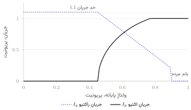
- چرا شبکه میخواهد نیروگاه در افتِ ولتاژ در مدار بماند؟
- با \(k = 2\) و حدِ 1.1، در \(V = 0.6\) جریانهای \(I_q\) و \(I_p\) چیست؟
- چرا جریانِ خطای کم برای حفاظت مسئله است؟
- توانِ دوبسامدی در پیوندِ DC از کجا میآید؟
9.4.6 حفاظتهای اینورتر
دو لایه. حفاظتِ درونی تجهیز را از خودش و از شبکه نگه میدارد؛ حفاظتِ نیروگاه (رلهها و کلیدهای 33 kV، فصلِ ۲۶) شبکه را از نیروگاه. این دو باید هماهنگ باشند: اینورتر نباید پیش از آنکه شبکه انتظار دارد قطع کند (ماندن در مدار)، و نباید دیرتر از آنکه تجهیزش تحمل کند.
| حفاظت | چه را میپاید | پاسخِ رایج |
|---|---|---|
| اشباعزدایی و اضافهجریانِ آنی | اتصالِ کوتاهِ ساق یا خروجی | خاموشیِ نرمِ کلیدها در چند میکروثانیه |
| اضافهولتاژِ DC | ولتاژِ پیوند | توقفِ کلیدزنی، چاپر در مبدّلِ توربین |
| دمای بیش از حد | ماژول، سلف، اتاقک | کاهشِ توان، سپس توقف |
| مقاومتِ عایق و جریانِ باقیمانده | خطای زمین در DC | هشدار یا جلوگیری از اتصال |
| ولتاژ و بسامدِ AC | بیرون از حدهای مجاز و زمانهایشان | قطعِ کنتاکتور پس از زمانِ مجاز |
| تشخیصِ جزیره | از دست رفتنِ شبکه | قطع (بیشتر در تولیدِ پراکنده) |
| قوسِ DC | قوسِ سری در مدارِ آرایه | توقف و هشدار |
- حفاظتِ درونی و حفاظتِ نیروگاه را از هم جدا کنید.
- چرا تنظیمهای ولتاژ و بسامدِ اینورتر باید با الزامِ ماندن در مدار هماهنگ باشند؟
- چرا تشخیصِ جزیره بیشتر در تولیدِ پراکنده مهم است تا در نیروگاهِ متصل به انتقال؟
9.4.7 سازگاریِ الکترومغناطیسی و جریانِ حالتِ مشترک
ایده. هر کلیدزنی گامِ ولتاژی با \(\mathrm{d}v/\mathrm{d}t\)ِ چند کیلوولت بر میکروثانیه میسازد. ولتاژِ حالتِ مشترک، میانگینِ سه ولتاژِ فاز نسبت به زمین، در پلِ دوسطحی با هر کلیدزنی گام برمیدارد و از راهِ ظرفیتهای پراکنده (کابل به زمین، سیمپیچ به بدنه) جریانهای پالسی میفرستد: \(i = C\,\mathrm{d}v/\mathrm{d}t\). این جریانها از راههای پیشبینینشده برمیگردند، در کابلهای دیگر نویز القا میکنند و در یاتاقانهای موتور و ژنراتور جریان میسازند (فصلِ ۸، بخش 8.3.6). گسیلِ هدایتی از کابلها و گسیلِ تابشی از اتاقک و کابلها باید زیرِ حدهای استاندارد بماند، و تجهیز باید در برابرِ اختلالهای محیطِ صنعتی ایمن باشد (بخش 9.10).
مثال 9.39 (جریانِ حالتِ مشترک در ظرفیتهای پراکنده) پرسش. با \(\mathrm{d}v/\mathrm{d}t = 5\ \text{kV}/\mu\text{s}\) (A-163، فرضی)، جریانِ پالسی در ظرفیتِ کابلِ صدمتری و سیمپیچِ موتور چیست؟
پاسخ.
common-mode current through stray capacitance, dv/dt 5 kV/us (A-163):
cable to ground, 100 m x 0.3 nF/m 30 nF -> 150 A pulses
motor winding to frame 10 nF -> 50 A pulses
pulses last tens of nanoseconds but their high-frequency
content radiates and couples: shielded cables bonded at both
ends, common-mode chokes, short return paths and slower
edges (three levels, gate resistance) keep emissions within
the limits of the EMC standardsتفسیر. پالسهای دهها تا صدها آمپری، هر چند بسیار کوتاه، محتوای پربسامدِ بزرگی دارند. تدبیرها: کابلِ شیلددار که شیلدش در هر دو سر با اتصالِ کوتاه و پهن زمین شود، چوکِ حالتِ مشترک، مسیرهای برگشتِ کوتاه، تفکیکِ کابلهای قدرت و سیگنال، و لبههای آرامتر. هم مبدّل و هم چیدمانِ نیروگاه در سازگاری سهم دارند؛ پس پذیرشِ سازگاری فقط یک آزمونِ کارخانه نیست (فصلهای ۲۶ و ۳۷).
- ولتاژِ حالتِ مشترک چیست و چرا با کلیدزنی گام برمیدارد؟
- چرا شیلدِ کابلِ قدرتِ اینورتر در هر دو سر زمین میشود؟
- گسیل و ایمنی در سازگاری را از هم جدا کنید.
9.4.8 الزامهای رابطِ سازنده
ایده. خریدارِ اینورتر یک «جعبهٔ سیاه» نمیخرد؛ او برای طراحی، مطالعههای شبکه، بهرهبرداری و تعمیر به داده و مدل نیاز دارد. آنچه در خرید خواسته نشود، بعداً یا گران به دست میآید یا هرگز. فهرستِ زیر حداقلِ آن چیزی است که مشخصهٔ خریدِ نیروگاهِ P میخواهد (بخش 9.11):
| دسته | چه باید خواسته شود |
|---|---|
| برگهٔ داده | ردهها با دما و ارتفاع، پنجرهٔ DC، منحنیهای بازده در چند ولتاژ، نمودارِ قابلیتِ \(P\)–\(Q\) با ولتاژ، طیفِ هارمونیکی |
| رفتار در شبکه | توانِ عبور از خطا، جریانِ راکتیو، کمینهٔ نسبتِ اتصالِ کوتاه، حالتهای کار و بازهٔ تنظیمها |
| مدلها | مدلهای پایداری و گذرای الکترومغناطیسی و هارمونیکی با گزارشِ اعتبارسنجی، در نسخهٔ نرمافزارِ مشخص |
| حفاظت | فهرستِ حفاظتها، بازهٔ تنظیم، زمانها و منطقِ هماهنگی |
| ارتباط | پروتکلها، فهرستِ نقطههای داده، زمانِ پاسخ، همگامسازیِ زمانی، الزامهای امنیتِ سایبری (فصلِ ۳۶) |
| کیفیت و آزمون | برنامهٔ بازرسی و آزمون، گزارشهای آزمونِ نوعی، گواهیها، آزمونهای پذیرشِ کارخانه و ساختگاه |
| بهرهبرداری | دستورالعملها، فهرستِ یدکی با زمانِ تحویل، سیاستِ بهروزرسانیِ میانافزار، پشتیبانیِ محلی، ضمانتها |
مدلها مهماند. بهرهبردارِ شبکه مطالعههای پایداری و کیفیتِ توان را با مدلهای اینورتر انجام میدهد (فصلهای ۱۷ و ۲۸). مدلی که با میانافزارِ نصبشده همخوان نباشد، مطالعه را بیاعتبار میکند؛ پس نسخهٔ مدل به نسخهٔ میانافزار گره میخورد (بخش 9.4.10).
- چرا نمودارِ قابلیتِ \(P\)–\(Q\) باید با ولتاژ داده شود؟
- چرا نسخهٔ مدلِ شبیهسازی باید با نسخهٔ میانافزار یکی باشد؟
- سه دادهٔ بهرهبرداری که باید در خرید خواسته شوند را بنویسید.
9.4.9 ساختِ صنعتی
زنجیرهٔ ساخت. اینورتر از چند زنجیرهٔ موازی ساخته میشود که در خطِ مونتاژِ نهایی به هم میرسند:
۱. بردهای الکترونیکی: نشاندنِ قطعهها روی برد با ماشین، لحیمکاریِ ذوبی، بازرسیِ نوریِ خودکار، پوششِ محافظ در برابرِ رطوبت و آزمونِ درونمداری؛ هر برد شمارهٔ سریال و سابقهٔ آزمون دارد.
۲. ماژولهای توان (معمولاً از سازندهٔ نیمهرسانا): چسباندنِ تراشه با لحیم یا تفجوشی روی زیرلایهٔ سرامیکی، سیمهای اتصال، صفحهٔ پایه و قالب. خستگیِ همین لایهها عمر را تعیین میکند (بخش 9.2.12).
۳. پشتهٔ توان: مادهٔ رابطِ گرمایی با ضخامت و پوششِ کنترلشده (یک حبابِ هوا یک نقطهٔ داغ است)، بستنِ ماژول با ترتیب و گشتاورِ مشخصِ پیچها، شینهٔ لایهای با گشتاور و علامتگذاری، بانکِ خازن، درایورها و حسگرها.
۴. یکپارچهسازیِ پوسته: صافی، کلیدها، خنککاری، سیمکشی و برچسبها؛ آزمونِ نشتِ مدارِ مایع.
۵. بارگذاریِ میانافزار و پارامترها از نسخهٔ تأییدشده، با ثبتِ اثرانگشت (بخش 9.4.10).
۶. آزمونِ کارکرد و پایانِ خط و در صورتِ لزوم کارِ آزمایشی در دما برای بیرون کشیدنِ خرابیهای زودهنگام.
ردیابی. هر اینورتر یک پرونده دارد که سریالِ ماژولها، بردها، خازنها و دستههای تولیدشان، نسخهٔ میانافزار و نتیجهٔ هر آزمون را به سریالِ واحد پیوند میدهد. اگر سالها بعد یک دسته خازن معیوب شناخته شود، فقط با این پرونده میتوان واحدهای آسیبپذیر را پیدا کرد (همان منطقِ پروندهٔ ژنراتور، فصلِ ۸، بخش 8.5.11؛ و تولیدِ صنعتی در فصلهای ۴۰ و ۴۴).
مثال 9.40 (بازدهِ نخستینگذرِ یک خطِ پشته) پرسش. با بازدهِ نخستینگذرِ آموزشیِ هر مرحله (A-163، فرضی)، بازدهِ کلِ خط را بیابید. چه سهمی از پشتهها جایی دوبارهکاری میخواهند؟
پاسخ.
first-pass yield of a stack line (A-163, teaching):
SMT and reflow, AOI 0.995 cumulative 0.995
in-circuit test 0.990 cumulative 0.985
power module and busbar assembly 0.985 cumulative 0.970
thermal interface check 0.995 cumulative 0.965
enclosure integration 0.990 cumulative 0.956
burn-in 0.990 cumulative 0.946
end-of-line function test 0.975 cumulative 0.923
7.7 % of stacks need rework somewhere; each
escape found on site costs about ten times one found in the
factory (chapter 1, the rule of ten): test where it is cheapتفسیر. هفت مرحلهٔ «خوب» با هم 7.7 % دوبارهکاری میسازند. بازدهِ نخستینگذر حاصلضرب است، پس بهبودِ ضعیفترین مرحله بیشترین اثر را دارد. آزمونِ پایانِ خط با 2.5 % رد بیشترین سهم را دارد؛ پیدا کردنِ همان خطاها زودتر، مثلاً با وارسیِ مادهٔ رابطِ گرمایی پیش از بستن، هم ارزانتر است و هم از خرابیِ پنهان جلوگیری میکند. قاعدهٔ ده (فصلِ ۱) هزینهٔ فرار به ساختگاه را نشان میدهد.
- چرا ضخامت و پوششِ مادهٔ رابطِ گرمایی کنترل میشود؟
- چرا گشتاورِ پیچهای شینه هم برای برق و هم برای گرما مهم است؟
- پروندهٔ ردیابی چه چیزهایی را به سریالِ واحد پیوند میدهد؟
- اگر بازدهِ هر هفت مرحله 0.99 باشد، بازدهِ کل چیست؟
9.4.10 کنترلِ پیکربندی و میانافزار
ایده. دو اینورترِ یکسان با دو مجموعهپارامترِ متفاوت دو رفتارِ متفاوت در شبکه دارند. پس پیکربندی (نسخهٔ میانافزار، مجموعهٔ پارامترها، نسخهٔ مدلِ شبیهسازیِ همخوان) بخشی از طراحیِ نیروگاه است و باید مانندِ یک نقشه کنترل شود: خطمبنای تأییدشده، درخواستِ تغییر با دلیل و ارزیابیِ اثر، تأیید، اعمال، بازخوانیِ آنچه واقعاً روی واحد است و ثبت. یک اثرانگشتِ رمزنگاری (مانندِ SHA-256) از متنِ پارامترها نشان میدهد که آیا چیزی، هر چند کوچک، تغییر کرده است (فصلِ ۵، بخش 5.4).
مثال 9.41 (اثرانگشتِ مجموعهٔ پارامتر) پرسش. اثرانگشتِ یک مجموعهپارامترِ نمونه را بسازید و پس از تغییرِ یک عدد (ضریبِ جریانِ راکتیو) دوباره حساب کنید.
پاسخ.
configuration control of an inverter parameter set:
approved set SHA-256 46b3ab731844783c23113bed60373495...
one value edited SHA-256 e45716ddac0aaab06ecf21e983df4f02...
any change, however small, gives a different fingerprint; the
record keeps firmware version, parameter-set id and fingerprint
for every unit, and site readback must match it (chapter 50)تفسیر. تغییرِ یک رقم اثرانگشتِ کاملاً متفاوتی میسازد. در راهاندازی، اثرانگشتِ بازخوانده از هر اینورتر با اثرانگشتِ خطمبنا مقایسه میشود؛ هر ناهمخوانی یک ناسازگاری است تا روشن شود (فصلِ ۵۰). همین سازوکار بهروزرسانیهای بعدی را در بهرهبرداری کنترل میکند و با امنیتِ سایبری پیوند دارد: میانافزارِ امضاشده و تغییرِ فقط از راهِ مجاز (فصلِ ۳۶).
- خطمبنای پیکربندی از چه اجزایی ساخته میشود؟
- چرا بازخوانی از روی واحد، نه از روی پرونده، لازم است؟
- اثرانگشت چه چیزی را ثابت نمیکند؟ (راهنما: درستیِ خودِ مقدارها)
9.4.11 بازبینیِ طراحی و تأییدِ صلاحیت
دو نوع آزمون. آزمونهای نوعی یک بار روی نمونههای یک طرح انجام میشوند تا ثابت کنند طرح الزامها را برآورده میکند؛ آزمونهای جاری روی هر واحد تا ثابت کنند همان طرح درست ساخته شده است (همان تمایزِ فصلِ ۸، بخش 8.4.6). پیش از آزمون، بازبینیهای طراحی در گامهای مفهومی و تفصیلی الزامها، محاسبهها، ریسکها و شش وارسیِ جدول 9.4 را میسنجند.
خانوادههای تأییدِ صلاحیت. (۱) ایمنی با استانداردهای ایمنیِ مبدّلهای خورشیدی و مبدّلهای قدرت؛ (۲) محیطی: دما، رطوبت، مه نمکی، لرزش و ضربهٔ حمل؛ (۳) سازگاریِ الکترومغناطیسی: گسیل و ایمنی؛ (۴) کارکردی: کنترل، حفاظت، حالتها و ارتباط؛ (۵) بازده و بازدهٔ ردیابی با روشهای استاندارد؛ (۶) انطباق با شبکه: آزمونهای رفتار در خطا، توانِ راکتیو، پاسخِ بسامد و کیفیتِ توان، که گواهی و مدلِ اعتبارسنجیشده میسازند؛ (۷) قابلیتِ اطمینان: آزمونهای شتابیافتهٔ چرخهٔ دما و رطوبت. نامِ استانداردها در جعبهٔ بخش 9.10 آمده؛ الزامهای شبکه کشوریاند (فصلهای ۱۷ و ۵۵ تا ۵۷).
- آزمونِ نوعی و جاری را با یک مثال از اینورتر جدا کنید.
- چرا آزمونهای انطباق با شبکه به مدلِ اعتبارسنجیشده میانجامند؟
- هفت خانوادهٔ تأییدِ صلاحیت را نام ببرید.
9.4.12 آزمونهای پذیرشِ کارخانه
ایده. آزمونِ پذیرشِ کارخانه (به انگلیسی factory acceptance test) پیش از حمل نشان میدهد که هر واحدِ ساختهشده کار میکند و پیکربندیِ درست را دارد. مهمترین بخشِ آن کار با توانِ کامل روی یک میزِ آزمونِ بازگشتی است، که در آن دو مبدّل توان را میانِ خود میچرخانند و فقط تلفات از شبکه گرفته میشود. چرا در کارخانه؟ چون در ساختگاه، توانِ کامل فقط در ساعتهای صاف و میانِ روز در دسترس است (مثال 9.62) و آزمونِ گرمایی را نمیتوان به آن واگذاشت.
| بخش | چه نشان میدهد | شاهد |
|---|---|---|
| بازرسیِ دیداری و مکانیکی | ساخت مطابقِ نقشه؛ گشتاورِ علامتدار؛ برچسبها | نقطهٔ شاهد |
| آزمونهای عایق (با رویهٔ کارخانه) | سلامتِ عایقِ مدارهای قدرت و کنترل | گزارش |
| کارکردِ حفاظتها | هر حفاظت در آستانهاش عمل میکند | نقطهٔ توقف |
| کار با توانِ کامل و گرمایی | دماها در حد، بدونِ هشدار، چند ساعت | نقطهٔ توقف |
| بازده در چند بار | همخوانی با برگهٔ داده | گزارش |
| پیکربندی | نسخهٔ میانافزار و اثرانگشتِ پارامترها | پروندهٔ پیکربندی |
- چرا آزمونِ گرمایی با توانِ کامل در کارخانه انجام میشود؟
- میزِ آزمونِ بازگشتی چگونه انرژی صرفهجویی میکند؟
- کدام بخشهای آزمونِ کارخانه نقطهٔ توقفاند و چرا؟
9.4.13 یکپارچهسازی با ترانسفورماتور و کنترلگرِ نیروگاه
رابطِ ترانسفورماتور. اینورتر و ترانسفورماتورِ 0.6/33 kV یک واحدند: گروهِ برداری و زمینکردنِ سمتِ ولتاژپایین (معمولاً شناور، با پایشِ عایق)، جریانِ هجومیِ برقدار کردنِ ترانسفورماتور، تزریقِ نکردنِ مؤلفهٔ DC (اشباعِ هسته)، هارمونیکها و گرمای ناشی از آنها، و قفلهای میانِ حفاظتهای ترانسفورماتور (دما، گاز) و اینورتر. این رابطها در مشخصهٔ هر دو تجهیز آمدهاند و با هم آزموده میشوند (فصلهای ۲۵ و ۵۰).
رابطِ کنترلگرِ نیروگاه. کنترلگرِ نیروگاه (فصلِ ۲۰) نقطهٔ تنظیمِ توانِ اکتیو و راکتیو را به اینورترها میفرستد و اندازهگیری را از نقطهٔ اتصال برمیدارد. زمانِ پاسخِ کل (کنترلگر، شبکهٔ ارتباطی، اینورتر) باید از الزامِ شبکه کوتاهتر باشد؛ برای همین آزمونهای یکپارچه پلههای توانِ اکتیو و راکتیو را در نقطهٔ اتصال میدهند و زمانِ رسیدن و فراجهش را میسنجند. فهرستِ نقطههای داده، همگامسازیِ زمانی و رفتار در قطعِ ارتباط (هر اینورتر به چه حالتِ ایمنی برمیگردد) پیش از آزمون تعریف میشوند.
- چرا اینورتر نباید مؤلفهٔ DC به ترانسفورماتور تزریق کند؟
- زمانِ پاسخِ کلِ نیروگاه از چه بخشهایی ساخته میشود؟
- اگر ارتباطِ کنترلگرِ نیروگاه قطع شود، اینورتر چه باید بکند؟
9.4.14 قابلیتِ اطمینان و حالتهای خرابی
ایده. آمارِ میدانی نشان میدهد اینورترها از پرخرابیترین تجهیزهای نیروگاهِ خورشیدیاند، اما بیشترِ خرابیها کوچکاند (فن، برد، منبعِ تغذیه، کنتاکتور، حسگر) و سریع رفع میشوند؛ خرابیهای ماژولِ توان کماند اما زمانِ تعمیرشان طولانی است. آهنگِ خرابی با زمانِ بازگرداندن دسترسپذیری را میسازد، و راهبردِ یدکی هر دو را میبیند (فصلِ ۵، بخش 5.4؛ فصلِ ۵۲).
مثال 9.42 (آهنگِ خرابی و یدکیِ فنها) پرسش. با آهنگهای آموزشیِ هر زیرمجموعه (A-163، فرضی، بر حسبِ خرابی در میلیارد ساعت)، آهنگِ خرابی، فاصلهٔ میانگینِ خرابیها و دسترسپذیریِ یک اینورتر را با 72 h زمانِ بازگرداندن بیابید. احتمالِ نیاز به بیش از دو فن در سال برای ده اینورتر چیست؟
پاسخ.
failure rate of one 5 MW inverter (teaching FIT values, A-163):
IGBT modules (24) 9600 FIT
DC-link film capacitors 4000 FIT
fans and pumps 15000 FIT
control and gate boards 12000 FIT
auxiliary power supplies 6000 FIT
contactors and breakers 5000 FIT
sensors and IMD 4800 FIT
total 56400 FIT = 0.49 failures/yr; MTBF 2.0 yr
with 72 h to restore: availability 0.9960
10 inverters, fan failures 1.31/yr: chance of needing more than 2 fans 0.146
fans and boards fail most often but are quick to change;
power modules fail rarely but take longest: stock spares by
both the rate and the repair time (chapter 52)تفسیر. حدودِ نیم خرابی در سال برای هر اینورتر و دسترسپذیریِ 99.6 %، همان عددی که مثال 9.18 به کار برد. با آهنگِ پواسونی، احتمالِ نیاز به بیش از دو فن در سال 15 % است؛ پس دو فن یدکی کم است و سه یا چهار منطقیتر. محاسبهٔ یدکی را باید با زمانِ تحویلِ سازنده هم سنجید (فصلهای ۳۹ و ۵۲). محدودیت: آهنگهای ثابت؛ در واقعیت آهنگِ خرابی در آغاز و پایانِ عمر بیشتر است.
- چرا فنها و بردها پرخرابیاند اما اثرِ کمتری بر انرژی دارند؟
- با آهنگِ 0.5 خرابی در سال و 48 h بازگرداندن، دسترسپذیری چیست؟
- چرا تعدادِ یدکی را با توزیعِ پواسون، نه با میانگین، تعیین میکنیم؟
9.4.15 زمینکردنِ کارکردی و پتانسیلِ ماژولها
ایده. در آرایهٔ شناور، دو قطبِ رشته نسبت به زمین تقریباً قرینهاند: ماژولهای سمتِ منفی صدها ولت زیرِ زمین و ماژولهای سمتِ مثبت صدها ولت بالای آن (فصلِ ۶، بخش 6.3.10). در برخی فناوریهای سلول، پتانسیلِ منفیِ زیاد نسبت به قاب، یونها را در شیشه و لایهها جابهجا میکند و توان را بهتدریج کم میکند: تخریبِ ناشی از پتانسیل (به انگلیسی potential-induced degradation). دو راهِ رایج: زمین کردنِ یک قطب از راهِ اینورتر (یک زمینِ کارکردی، نه حفاظتی)، یا اعمالِ یک ولتاژِ جبرانیِ شبانه که اثر را برمیگرداند. هر کدام پیامدی برای پایشِ عایق، حفاظتِ خطای زمین و انتخابِ اینورتر دارد؛ انتخاب یک تصمیمِ مستند است (فصلهای ۶، ۱۰ و ۲۶).
مثال 9.43 (پتانسیلِ ماژولها نسبت به زمین) پرسش. در رشتهٔ ۲۶ ماژولی در 1300 V (A-172)، کمترین و بیشترین پتانسیلِ ماژولها را برای آرایهٔ شناور، قطبِ منفیِ زمینشده و قطبِ مثبتِ زمینشده بیابید.
پاسخ.
module potentials to earth in a 26-module string at 1300 V (A-172):
floating, symmetric from -625 to +625 V
negative pole earthed from +25 to +1275 V
positive pole earthed from -1275 to -25 V
modules at strongly negative potential can suffer potential-
induced degradation in some cell technologies; earthing one
pole (through the inverter, a functional earth) or a night-
time offset voltage moves the string away from it: the choice
depends on modules, inverter and standard (chapters 10, 26)تفسیر. شناور: ±625 V؛ قطبِ منفیِ زمینشده همهٔ ماژولها را مثبت میکند. اینکه کدام برای ماژولهای نیروگاه بهتر است به فناوریِ سلول و دادههای آزمونِ سازندهٔ ماژول بستگی دارد. زمین کردنِ یک قطب، آرایه را از سامانهٔ شناور به سامانهٔ زمینشده تبدیل میکند: یک خطای زمینِ تکی اکنون جریان میسازد و حفاظتش فرق میکند. این یکی از رابطهایی است که باید میانِ سازندهٔ ماژول، سازندهٔ اینورتر و طراحِ حفاظت بسته شود.
9.4.16 سهمِ اینورتر در خطای سمتِ DC
ایده. در خطای سمتِ DC (مثلاً اتصالِ کوتاهِ کابلِ میانِ جعبهٔ تجمیع و اینورتر)، آرایه جریانِ محدودی میدهد، کمی بیش از جریانِ اتصالِ کوتاهش (فصلِ ۶). اما خازنهای پیوندِ DC اینورتر، اگر دیود یا کلیدی جلوی برگشتشان را نگیرد، انرژیِ ذخیرهشان را در چند میلیثانیه به خطا میریزند. مدارِ خازن، مقاومت و اندوکتانسِ کابل یک مدارِ مرتبهٔ دوم است؛ قلهٔ جریان به نسبتِ میرایی بستگی دارد. این همان مجهولِ U-008ِ فصلِ ۶ است که منتظرِ دادهٔ اینورتر بود.
مثال 9.44 (تخلیهٔ خازن در خطای کابل) پرسش. خازنِ 12 mF در 1000 V با کابلی با 50 mΩ و 20 µH تا محلِ خطا (A-172، فرضی): قلهٔ جریان و زمانِ آن چیست؟
پاسخ.
DC-link capacitor (12 mF, 1000 V) into a cable fault,
50 mohm and 20 uH (A-172):
damping ratio 0.61; peak current 12.1 kA after 0.56 ms
stored energy 6.0 kJ goes into the fault and the cable
the inverter's own capacitors feed a DC-side fault even when the
array cannot: fuses and cable withstand must see this pulse
(chapter 6, U-008; the maker states the real figure)تفسیر. قلهٔ 12 kA در نیم میلیثانیه (شکل 9.22)، دهها برابرِ جریانِ آرایه. فیوزهای DC و تحملِ کابل باید این پالس را ببینند و انتخابیِ حفاظت باید با آن وارسی شود. عددِ واقعی به ساختارِ ورودیِ اینورتر (دیودِ جداکننده، فیوزهای داخلی) بستگی دارد و باید از سازنده خواسته شود (جدول 9.7). مرزِ کار: این مثال یک برآورد برای پرسیدنِ پرسشِ درست است، نه مطالعهٔ حفاظت.
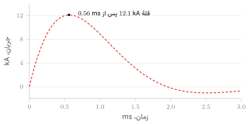
- زمینِ کارکردی را از زمینِ حفاظتی جدا کنید.
- زمین کردنِ قطبِ منفی چه پیامدی برای پایشِ عایق دارد؟
- چرا خازنهای اینورتر جریانِ خطای DC را از آرایه بزرگتر میکنند؟
- اگر مقاومتِ مسیر دو برابر شود، نسبتِ میرایی و قلهٔ جریان چگونه تغییر میکنند؟
9.4.17 گسیلِ هارمونیکی تا شینهٔ 33 kV
ایده. طیفِ ولتاژِ پل (بخش 9.2.7) پس از صافیِ LCL به جریانِ هارمونیکیِ کوچکی در کنارِ بسامدِ کلیدزنی تبدیل میشود. در نیروگاه، چهل پشتهٔ ده اینورتر این جریانها را از راهِ ترانسفورماتورها به شینهٔ 33 kV میفرستند. اینکه جمعشان چقدر است به فازِ آنها بستگی دارد: اگر همفاز باشند خطی جمع میشوند، اگر فازهای تصادفی داشته باشند، با جذرِ تعداد (همان قانونِ جمعِ هارمونیکها در فصلِ ۷). هارمونیکهای پربسامد در امپدانسِ القاییِ شبکه ولتاژِ بزرگتری میسازند، چون راکتانس با مرتبه بالا میرود.
مثال 9.45 (از پشته تا شینهٔ جمعکننده) پرسش. جریانِ هارمونیکیِ یک پشته پس از صافیِ میراشده را بیابید (A-173، فرضی). جمعِ چهل پشته را در 33 kV با جمعِ خطی و با قانونِ جذری بسنجید و اعوجاجِ ولتاژ را با توانِ اتصالِ کوتاهِ 500 MVA (A-100) برآورد کنید.
پاسخ.
harmonic currents of one NPC stack after its LCL (A-173):
rated stack current 1,323 A; largest lines at h 55, 59, 61
h 59: 12.6 A (0.95 % of rated)
total distortion of the stack current to h 200: 1.29 %
40 stacks seen at 33 kV (current x 0.6/33):
phases aligned (worst case) 1.42 % of 50 MW current
random phases (sqrt N law) 0.22 %
voltage distortion at 33 kV with 500 MVA short-circuit power: 1.368 %
carrier harmonics are small after the filter and partly cancel;
the study of chapter 27 adds background distortion, cable
capacitance and resonance of the whole collectorتفسیر. هر پشته کمتر از یک درصد در خطهای ۵۹ و ۶۱ دارد (شکل 9.23). در شینهٔ 33 kV، جمعِ جذری 0.22 % و بدترین حالتِ همفاز 1.4 % است؛ با شبکهٔ صرفاً القایی، اعوجاجِ ولتاژ حدودِ 1.4 % میشود، چون مرتبهٔ شصت راکتانسِ شصتبرابر میبیند. این برآورد بدبینانه است: ظرفیتِ کابلها بخشی از این جریان را میگیرد، اما ممکن است در جایی تشدید هم بسازد. پس عددِ واقعی را مطالعهٔ هارمونیکیِ نیروگاه با مدلهای سازنده و امپدانسِ وابسته به بسامدِ شبکه میدهد (فصلهای ۲۷ و ۲۸)، و حدها از آییننامهٔ اتصال میآیند (فصلِ ۷، بخش 7.10).
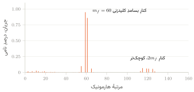
9.4.18 پایداریِ امپدانسی: مبدّل و شبکه با هم
ایده. از دیدِ شبکه، مبدّلِ پیرو یک منبعِ جریان با یک امپدانسِ موازی است که کنترلگرش آن را میسازد؛ شبکه یک منبعِ ولتاژ با امپدانسِ سری. سامانهٔ دوتایی پایدار است اگر برهمکنشِ این دو امپدانس در هیچ بسامدی تشدیدِ بیمیرا نسازد. شبکهٔ ضعیفتر اندوکتانسِ بیشتری در سری با \(L_2\) میگذارد و تشدیدِ صافی را پایینتر میکشد، به سوی پهنای باندِ حلقههای کنترل، جایی که تأخیرِ کنترلگر (مثال 9.34) میرایی را کم میکند.
مثال 9.46 (تشدیدِ صافی با سفتیِ شبکه) پرسش. تشدیدِ صافیِ یک پشته را با اندوکتانسِ ترانسفورماتور و شبکه برای نسبتِ اتصالِ کوتاهِ ۱۰۰ تا ۲ (A-174) بیابید.
پاسخ.
LCL resonance of one stack with the grid behind it (A-174):
SCR grid L at 600 V side resonance Hz
100 58.3 uH 1063
10 133.3 uH 987
5 216.7 uH 951
3 327.8 uH 926
2 466.7 uH 910
a weaker grid adds inductance in series with L2 and pulls the
resonance down towards the bandwidth of the current loop: the
converter that was stable on a strong grid may oscillate on a
weak one; damping and the maker's impedance model check itتفسیر. تشدید از 1250 Hzِ صافیِ تنها (مثال 9.21) به حدودِ 1060 تا 910 Hz پایین میآید؛ ترانسفورماتور خودش سهمِ بزرگی دارد. اگر کنترلگر برای تشدیدِ 1250 Hz میرایی فعال طراحی شده باشد، در شبکهٔ واقعی باید دوباره وارسی شود. سازندگان برای این وارسی مدلِ امپدانسیِ اینورتر (امپدانس بر حسبِ بسامد) میدهند و مطالعهٔ پایداری آن را با امپدانسِ شبکه در همهٔ آرایشهای ممکن مقایسه میکند (فصلِ ۲۸).
9.4.19 تشخیصِ جزیره
ایده. اگر بخشی از شبکه از بقیه جدا شود اما مولدهای متصل به آن بار را دقیقاً تأمین کنند، ولتاژ و بسامد ممکن است در حدِ مجاز بمانند و مولدها کار را ادامه دهند: یک جزیرهٔ ناخواسته، خطرناک برای کارکنانی که خط را بیبرق میپندارند و برای تجهیزهایی که بیهمگامسازی دوباره وصل میشوند. اینورترهای تولیدِ پراکنده روشهای تشخیصِ جزیره دارند: غیرفعال (پاییدنِ تغییرِ بسامد، پرشِ فاز و ولتاژ) که در توازنِ دقیقِ بار و تولید یک ناحیهٔ کور دارند، و فعال (تزریقِ اغتشاشِ کوچک و دیدنِ پاسخِ شبکه). روشِ آزمونِ آن استانداردِ ویژه دارد (بخش 9.10). در نیروگاهِ متصل به شبکهٔ انتقال، تشخیصِ جزیره بیشتر با ارسالِ فرمانِ قطع از پستِ شبکه و حفاظتهای نقطهٔ اتصال انجام میشود، و روشهای فعالِ اینورتر ممکن است با الزامِ ماندن در مدار (بخش 9.4.5) ناسازگار باشند؛ پس تنظیمشان با بهرهبردارِ شبکه هماهنگ میشود (فصلهای ۱۷ و ۲۶).
- چرا جمعِ هارمونیکهای پربسامدِ چند اینورتر به جذرِ تعداد نزدیکتر است تا به جمعِ خطی؟
- چرا هارمونیکِ مرتبهٔ شصت ولتاژِ بزرگتری از هارمونیکِ پنجمِ هماندازه میسازد؟
- شبکهٔ ضعیفتر تشدیدِ صافی را به کدام سو میبرد و چرا خطرناک است؟
- ناحیهٔ کورِ روشهای غیرفعالِ تشخیصِ جزیره چیست؟
9.4.20 کنترلگرِ نیروگاه و حدِ صادرات
ایده. نیروگاهِ P 110 MW تولید و 100 MW حدِ صادرات دارد. هر بار که جمعِ تولیدِ خورشیدی و بادی از حد میگذرد، کنترلگرِ نیروگاه (فصلِ ۲۰) توانِ نقطهٔ اتصال را میسنجد، کمبود یا مازاد را میانِ اینورترها و توربینها تقسیم میکند و نقطهٔ تنظیمِ تازه میفرستد. اینورترها در دهها میلیثانیه پاسخ میدهند؛ توربینها از راهِ گام و گشتاور کندترند و هر تغییرِ توانشان بارِ مکانیکی دارد. پس منطقِ رایج این است که تغییرهای تند با اینورترها (و باتری) و تغییرهای ماندگار با سهمی میانِ همه انجام شود، و قرارداد و قیمت هم سهمِ هر بخش را تعیین میکنند (فصلهای ۲۰ و ۲۱).
مثال 9.47 (حدِ صادرات در یک سالِ داده) پرسش. با منحنیِ توانِ توربین و سرعتِ باد در 100 m (دوازده توربین، 3 % تلفات؛ A-178، مدلِ ساده) و خروجیِ اینورترهای مثال 9.54، ساعتها و انرژیِ بالای 100 MW را بشمارید. اگر خورشیدی اول کاسته شود، چه سهمی را میبرد؟
پاسخ.
the 100 MW export limit over the data-pack year (A-178):
wind 212.2 GWh, PV 101.4 GWh, peak sum 107.2 MW
hours above 100 MW: 60; energy to curtail 183 MWh (0.06 %)
if PV is curtailed first it carries 100 % of the cut
the plant controller measures the export, splits the cut among
inverters and turbines and sends set-points every second or so;
inverters answer in tens of milliseconds, turbines more slowly
through pitch and torqueتفسیر. با این مدلِ ساده، فقط ۶۰ ساعت و 183 MWh (کمتر از یکدهمِ درصد) بالای حد است (شکل 9.24)، و خورشیدی میتواند همه را بپذیرد. این با یافتهٔ فصلِ ۳ (بیست مگاواتِ بالاییِ اتصال کم به کار میآید) همخوان است. اما سرعتِ پاسخ مهم است: یک تندبادِ ظهر میتواند در چند ثانیه صادرات را از حد بگذراند؛ اگر کنترلگر و اینورترها کند باشند، حد شکسته میشود. مدلِ کاملترِ انرژی (با تلفاتِ ردپا، دسترسپذیری و تابشِ صفحهٔ آرایه) در فصلهای ۱۴ تا ۱۶ عدد را دقیقتر میکند.
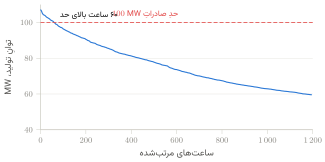
9.4.21 امنیتِ میانافزار و دسترسی
ایده. اینورتری که از راهِ شبکهٔ ارتباطی قابلِ پیکربندی است، یک سطحِ حمله است: تغییرِ ناخواستهٔ یک پارامتر (حدِ توان، تنظیمِ عبور از خطا) همان اثرِ یک خرابیِ سختافزاری را دارد، شاید در دهها واحد همزمان. اصولِ دفاعی که در مشخصهٔ خرید و بهرهبرداری میآیند (جزئیات در فصلِ ۳۶): میانافزارِ امضاشده که فقط نسخهٔ معتبرِ سازنده را میپذیرد؛ کنترلِ دسترسی با نقشها و حسابهای شخصی، نه رمزِ مشترکِ پیشفرض؛ ثبتِ رخداد برای هر تغییرِ پیکربندی با زمان و کاربر؛ جداسازیِ شبکه میانِ کنترل و شبکهٔ اداری؛ و مقایسهٔ اثرانگشت با خطمبنا (بخش 9.4.10). اینها دفاعاند، نه دستورِ آزمونِ نفوذ؛ ارزیابیِ امنیتیِ واقعی کارِ متخصصانِ مجاز است.
9.4.22 منسوخ شدنِ قطعهها
ایده. نیروگاه بیستوپنج سال یا بیشتر کار میکند؛ نسلِ یک تراشهٔ کنترل یا یک ماژولِ توان ممکن است ده سال در بازار بماند. مدیریتِ منسوخ شدن از روزِ خرید شروع میشود: پرسیدنِ دورهٔ پشتیبانیِ اعلامشده، فهرستِ قطعههای حیاتی، تعهدِ سازنده به جایگزینِ سازگار یا اطلاعِ پیش از توقفِ تولید، و خریدِ پایانِ عمر یا انبارِ راهبردی برای قطعههایی که جایگزین ندارند. در نیمهٔ عمرِ نیروگاه، تصمیمِ بازسازی (تعویضِ پشتهها و بردها در همان پوسته) یا جایگزینی (اینورترِ نسلِ تازه با مدلها و آزمونهای انطباقِ تازه) یک تصمیمِ اقتصادی و فنی است (فصلهای ۵۲ و ۵۳).
- چرا تغییرهای تندِ توان بهتر است با اینورترها انجام شوند؟
- اگر حدِ صادرات 95 MW بود، انتظار دارید ساعتهای بالای حد چگونه تغییر کنند؟
- پنج اصلِ دفاعیِ امنیتِ میانافزار را نام ببرید.
- چرا جایگزینیِ اینورتر در نیمهٔ عمر آزمونهای انطباقِ تازه میخواهد؟
9.4.23 تزریقِ DC و دقتِ حسگرِ جریان
ایده. اگر حسگرِ جریان آفستِ کوچکی داشته باشد، کنترلگر برای «درست کردنِ» آن یک مؤلفهٔ DC واقعی به خروجی میفرستد. ترانسفورماتورِ واحد با مؤلفهٔ DC یک شارِ ثابت میگیرد که هسته را در یک نیمچرخه به اشباع نزدیک میکند: جریانِ مغناطیسکنندهٔ نامتقارن، صدا، گرما و هارمونیکهای زوج. معیارِ مقایسه جریانِ مغناطیسکننده است، نه جریانِ نامی.
مثال 9.48 (آفستِ حسگر در برابرِ جریانِ مغناطیسکننده) پرسش. با جریانِ نامیِ اینورتر در 600 V و جریانِ مغناطیسکنندهٔ 1 % برای ترانسفورماتورِ واحد (A-180، فرضی)، اثرِ آفستِ 0.1 تا 0.5 % را بسنجید.
پاسخ.
current-sensor offset and DC into the unit transformer (A-180):
rated current 5,292 A; magnetising current (1 %) 53 A peak-ish
offset 0.1 % of rated peak: DC 7.5 A = 14 % of the magnetising current
offset 0.2 % of rated peak: DC 15.0 A = 28 % of the magnetising current
offset 0.5 % of rated peak: DC 37.4 A = 71 % of the magnetising current
a DC current comparable with the magnetising current biases
the core towards saturation in one half-cycle: noise, heat and
even-order harmonics; inverters measure and cancel it, and
grid codes limit DC injectionتفسیر. آفستِ نیمدرصدی، که در بیشترِ کاربردها ناچیز است، اینجا 71 %ِ جریانِ مغناطیسکننده است. اینورترها مؤلفهٔ DC را جداگانه اندازه و حذف میکنند و آییننامههای اتصال حدی برای تزریقِ DC دارند؛ در آزمونِ یکپارچهسازی، جریانِ ترانسفورماتور و صدای آن نشانهٔ زودهنگامِ این مسئلهاند (بخش 9.4.13).
9.4.24 کنترلِ دو توالی در افتِ نامتعادل
ایده. در افتِ نامتعادل، ولتاژِ توالیِ منفی با جریانِ توالیِ مثبت توانی با بسامدِ دو برابر میسازد (مثال 9.38). کنترلگر سه انتخاب دارد: فقط جریانِ مثبت (جریانهای متعادل، اما موجدارگیِ توان)، جریانِ منفیِ حسابشده برای حذفِ موجدارگیِ توان (جریانهای نامتعادل)، یا جریانِ منفی برای پشتیبانیِ ولتاژِ منفی که آییننامههای تازه گاهی میخواهند. چون جریانِ هر فاز محدود است، هر جریانِ منفی از توانِ اکتیو سهم میگیرد.
مثال 9.49 (دو راهبرد در افتِ نامتعادل) پرسش. با \(V^+ = 0.7\)، \(V^- = 0.3\) و حدِ جریانِ 1.1 پریونیت (A-181)، دو راهبرد را از نظرِ توانِ اکتیو و موجدارگیِ 100 Hz مقایسه کنید.
پاسخ.
unbalanced dip: V+ 0.7 pu, V- 0.3 pu, current limit 1.1 pu (A-181):
positive only I+ 1.00, I- 0.00, P 0.70 pu, 100 Hz ripple 0.30 pu
ripple cancelled I+ 0.77, I- 0.33, P 0.44 pu, 100 Hz ripple 0.00 pu
cancelling the ripple protects the DC link but unbalances the
phase currents: the current limit then cuts the active power;
the grid code says which sequence currents it wants in a dipتفسیر. حذفِ موجدارگی پیوندِ DC را آرام میکند اما بیشینهٔ جریانِ فاز را 43 % بالا میبرد؛ برای ماندن زیرِ حد، جریانِ مثبت به 0.77 و توان به 0.44 پریونیت میرسد. انتخاب میانِ اینها یک تنظیم است که آییننامهٔ اتصال و مطالعهٔ نیروگاه تعیین میکنند (U-031)، و نشان میدهد چرا رفتارِ اینورتر در خطا باید با مدلِ تأییدشده مطالعه شود.
- چرا آفستِ حسگر باید با جریانِ مغناطیسکننده سنجیده شود؟
- سه راهبردِ کنترلِ توالی در افتِ نامتعادل را نام ببرید.
- چرا حذفِ موجدارگیِ توان بیشینهٔ جریانِ فاز را بالا میبرد؟
9.5 ت. آزمایشگاهِ مدلسازی و راستیآزمایی
بخشِ ت ابزارهای فصل را روی داده و شبیهسازی میبرد: ردیابها در گذرِ ابر و سایهٔ جزئی، رابطههای بستهٔ تلفات در برابرِ شبیهسازیِ کلید به کلید، پنجرهٔ ولتاژ و انرژیِ اینورترها در یک سالِ بستهٔ داده، و توالیِ آزمون از کارخانه تا ساختگاه. همهٔ کدها در بستهٔ همراهِ فصلاند.
9.5.1 آزمایشگاه: ردیابی در گذرِ ابر
پرسش. ردیابها در آفتابِ پایدار همه خوباند؛ تفاوت در تغییر است. یک لبهٔ ابر (A-164، ساختگی، بذرِ ۲۳) تابش را در ده ثانیه از 900 به 300 W/m² میبرد، یک دقیقه نگه میدارد و در بیست ثانیه برمیگرداند. ردیابها هر 0.1 s یک گام برمیدارند.
def track(tracker, t, g, tc: float = 50.0, n_mod: int = 26):
"""Run a tracker against changing irradiance: every step the converter
holds the string at the tracker's voltage, the tracker reads (V, I) and
returns the next reference. Returns operating and available power."""
p_op, p_av = np.empty(len(t)), np.empty(len(t))
v = tracker.v_ref
for k, gk in enumerate(g):
curve = mp.PVM_550.at(gk, tc, n_mod)
i = float(curve.i(v))
p_op[k] = v * i
p_av[k] = curve.mpp(800)[1]
v = min(max(tracker.update(v, i), 0.0), curve.voc)
return p_op, p_avمثال 9.50 (سه ردیاب و یک ولتاژِ ثابت) پرسش. بازدهِ ردیابی، یعنی انرژیِ گرفتهشده بر انرژیِ در دسترس، را برای آشفتن و مشاهده با گامهای 5 و 15 V، رسانایی افزایشی و یک ولتاژِ ثابت حساب کنید، یک بار برای کلِ پنج دقیقه و یک بار فقط در شیبها. نگهداشتنِ ولتاژِ ثابتِ شرایطِ استاندارد در کلِ سالِ بستهٔ داده چه کسری از انرژی را میگیرد؟
پاسخ.
one string through a cloud edge, steps every 0.1 s (A-164):
available energy 0.806 kWh in 300 s
tracker tracking efficiency during the ramps
P&O 5 V 99.77 % 97.92 %
P&O 15 V 99.86 % 99.50 %
IncCond 5 V 99.83 % 98.75 %
fixed voltage 99.71 % 99.81 %
within minutes the cell temperature hardly moves and neither
does V_mp: a fixed voltage keeps up; the ramps separate the
trackers (P&O can mistake rising irradiance for a good step)
over the data-pack year, holding the STC voltage 1091 V would
capture only 86.0 % of the MPP energy: temperature moves V_mpتفسیر. در پنج دقیقه دمای سلول تقریباً ثابت است و ولتاژِ قله کم جابهجا میشود؛ پس حتی یک ولتاژِ ثابت خوب کار میکند. شیبها ردیابها را از هم جدا میکنند: آشفتن و مشاهده با گامِ کوچک در بالا آمدنِ تابش راه را گم میکند و کمبودی تا 3.5 kW میسازد (شکل 9.25)، چون افزایشِ توان را به حسابِ گامِ درست میگذارد. در کلِ سال اما دما ولتاژِ قله را جابهجا میکند و ولتاژِ ثابت فقط 86 % انرژی را میگیرد: ردیابی ضروری است، و طراحیِ خوبِ آن در لحظههای تغییر خود را نشان میدهد. روشهای استانداردِ سنجشِ بازدهِ ردیابیِ پویا همین لحظهها را با نمایههای تابشِ تعریفشده میسنجند (بخش 9.10).
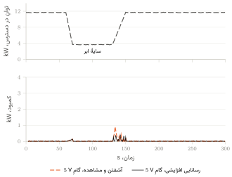
9.5.2 آزمایشگاه: سایهٔ جزئی و جستوجوی سراسری
ایده. اگر بخشی از رشته سایه بخورد، دیودهای میانگذرِ ماژولهای سایهدار در جریانهای بالا هدایت میکنند و آن ماژولها را کنار میگذارند (فصلِ ۶ و ۱۰). منحنیِ توان دو قله پیدا میکند: یکی در ولتاژِ کم با جریانِ ماژولهای آفتابی، یکی در ولتاژِ زیاد با جریانِ ماژولهای سایهدار (شکل 9.26). ردیابِ محلی روی قلهای میماند که از آن شروع کرده است.
مثال 9.51 (قلهٔ محلی یا سراسری) پرسش. رشتهای با ۱۸ ماژول در 900 W/m² و ۸ ماژول در 300 W/m² (A-164، ساختگی): آشفتن و مشاهده از 0.95 ولتاژِ مدارِ باز به کجا میرسد؟ جستوجوی سراسری و سپس آشفتن و مشاهده؟
پاسخ.
one string, 18 modules at 900 W/m2 and 8 shaded at 300 W/m2 (A-164):
global peak 8.08 kW at 687 V (shaded modules bypassed)
P&O from 0.95 V_oc settles at 1084 V: 4.48 kW (a local peak)
global scan, then P&O: 680 V, 8.08 kW
gain of the scan 80 % while the shade lasts; the scan itself costs a
second or two of off-peak operation every few minutesتفسیر. ردیابِ محلی روی قلهٔ 4.5 kW میماند؛ جستوجوی سراسری قلهٔ 8.1 kW را پیدا میکند، 80 % بیشتر تا وقتی سایه هست. در نیروگاه، سایهٔ صبح و عصرِ ردیفهای جلو، تیرهای برق، و گرد و غبارِ ناهمگن چنین منحنیهایی میسازند. در اینورترِ مرکزی که صدها رشته موازی دارد، قلههای رشتههای مختلف روی هم میافتند و مسئله ملایمتر و در عین حال پنهانتر است: عدمِ تطابق (مثال 9.18).
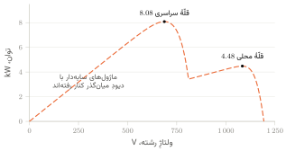
9.5.3 آزمایشگاه: بودجهٔ تلفات، رابطهٔ بسته در برابرِ شبیهسازی
ایده. رابطههای معادلهٔ 9.7 و معادلهٔ 9.8 جریانِ بیموجدارگی فرض میکنند. یک شبیهسازیِ مستقل، کلید به کلید، جریانِ واقعیِ سلف را با موجدارگیاش میسازد، هدایت را با جریانِ لحظهای و هر کلیدزنی را با جریانِ همان لحظه حساب میکند. اگر دو روش در شرایطِ عادی نزدیک باشند، به رابطهٔ بسته برای مطالعههای سریع (یک سال، هزار حالت) اعتماد میکنیم؛ اگر دور شوند، میدانیم مرزِ اعتبارش کجاست.
def leg_losses_switched(i_pk: float, m: float, phi_deg: float, v_dc: float,
f_sw: float, l_h: float, dev: dict, f1: float = 50.0,
steps_per_carrier: int = 200) -> dict:
"""Independent check: simulate one fundamental period of a two-level leg
switch by switch. The leg current is the fundamental plus the ripple that
the switched voltage drives through L; conduction uses the instantaneous
current, each switching event uses the current at that instant. Returns
the upper IGBT and upper diode losses and the peak-to-peak ripple."""
n_car = int(round(f_sw / f1))
n = n_car * steps_per_carrier
dt = 1 / (f1 * n)
t = np.arange(n) * dt
th = 2 * np.pi * f1 * t
x = (f_sw * t) % 1.0
tri = np.where(x < 0.5, 4 * x - 1, 3 - 4 * x)
state = (m * np.sin(th) > tri).astype(float)
v_err = v_dc * (state - 0.5 * (1 + m * np.sin(th)))
rip = np.cumsum(v_err) * dt / l_h
rip = rip.reshape(n_car, steps_per_carrier)
rip = (rip - rip.mean(axis=1, keepdims=True)).ravel()
i = i_pk * np.sin(th - math.radians(phi_deg)) + rip
up = state > 0.5
p_t = np.where(up & (i > 0), dev["v_t0"] * i + dev["r_t"] * i ** 2, 0.0)
p_d = np.where(up & (i < 0), dev["v_d0"] * -i + dev["r_d"] * i ** 2, 0.0)
trans = np.flatnonzero(np.diff(state) != 0) + 1
e_t = e_d = 0.0
for k in trans:
scale = abs(i[k]) / dev["i_ref"] * v_dc / dev["v_ref"]
if i[k] > 0: # T1 turns on or off
e_t += 0.5 * dev["e_on_off"] * scale
elif state[k] < 0.5: # 1 -> 0 with i < 0
e_d += dev["e_rr"] * scale # D1 recovers
period = 1 / f1
return {"cond_t": float(p_t.mean()), "cond_d": float(p_d.mean()),
"sw_t": e_t / period, "sw_d": e_d / period,
"ripple_pp": float(np.ptp(rip))}مثال 9.52 (رابطهٔ بسته و شبیهسازی برای یک جایگاهِ کلید) پرسش. برای یک جایگاهِ کلیدِ مبدّلِ سمتِ شبکهٔ توربین (مثال 9.11)، تلفاتِ رابطهٔ بسته را با شبیهسازیِ کلیدزده با سلفهای 200 تا 25 µH مقایسه کنید.
پاسخ.
one switch position of the turbine grid-side converter, 2.5 kHz:
closed form (no ripple): IGBT 9,124 W, diode 1,326 W, total 10,450 W
switched simulation, one period, ripple through L:
L uH ripple A pp IGBT W diode W total W difference
200 577 9,128 1,298 10,426 -0.2 %
100 1,154 9,143 1,278 10,421 -0.3 %
50 2,309 9,201 1,249 10,450 +0.0 %
25 4,618 9,420 1,231 10,651 +1.9 %
the closed form is good to a few per cent while the ripple is
small; with a large ripple the current at each switching
instant differs from the sine and the estimate driftsتفسیر. تا وقتی موجدارگی کمتر از حدودِ یکپنجمِ دامنهٔ جریان است، اختلاف کمتر از نیم درصد است؛ با سلفِ 25 µH و موجدارگیِ 4.6 kA به +1.9 % میرسد: جریانِ مؤثرِ بیشتر هدایت را و جریانِ لحظهٔ کلیدزنی تلفاتِ آیجیبیتی را بالا میبرد، و تلفاتِ بازیابیِ دیود کمی کم میشود. شبیهسازی یک ساق را نسبت به نقطهٔ میانیِ پیوند میبیند؛ موجدارگیِ آن از جریانِ فازِ یک پلِ سهسیمه بیشتر است، پس این مقایسه محافظهکارانه است. نتیجه: رابطهٔ بسته برای بودجهٔ مفهومی بس است؛ برای سلفِ کوچک یا طراحیِ نهایی، شبیهسازی و اندازهگیری لازم است. بودجهٔ کاملِ یک اینورترِ 5 MW با پشتههای NPC در مثال 9.61 آمده است.
9.5.4 آزمایشگاه: پنجرهٔ ولتاژ در یک سالِ داده
پرسش. مثال 9.8 نشان داد که اینورترِ 690 V پیوندِ حدودِ 1073 V میخواهد. آیا رشتههای ۲۶ ماژولیِ نیروگاه (A-015، D-002) در طولِ سال به آن میرسند؟ با بستهٔ دادهٔ 1.1.0 و مدلِ سادهٔ این فصل (A-153: تابشِ افقی بهجای صفحهٔ آرایه، دمای سلول با قاعدهٔ NOCT، 3 % تلفاتِ DC)، ولتاژِ قلهٔ رشته را ساعت به ساعت بسازید، ساعتهایی را که زیرِ کفِ پنجرهاند بشمارید و انرژیِ ازدسترفته را با کار در کفِ پنجره بهجای قله برآورد کنید.
مثال 9.53 (چهار ولتاژِ خروجی در برابرِ یک سال) پاسخ.
DC window over the data-pack year (1.1.0, S0; A-153):
string MPP voltage: min 861 V, median 1000 V, max 1103 V
AC V floor V hours below energy lost MWh share of DC
600 933 138 1.2 0.001 %
630 980 1443 219.1 0.213 %
660 1027 2938 2,279.9 2.212 %
690 1073 4175 9,415.2 9.136 %
with 26-module strings a 690 V inverter would leave a tenth
of the energy in the array; 600 V keeps all of it (D-012)تفسیر. میانهٔ ولتاژِ قله 1000 V است و در ساعتهای گرم تا 861 V پایین میآید (شکل 9.27). اینورترِ 690 V در بیش از ۴۰۰۰ ساعت زیرِ پنجره است و حدودِ 9 % انرژیِ آرایه را میگذارد؛ 630 V حدودِ 0.2 % و 600 V تقریباً هیچ. وارسیِ منطق: بیشترِ ساعتهای زیرِ پنجره ظهرهای تابستاناند، یعنی پرتولیدترین ساعتها؛ برای همین سهمِ انرژی از سهمِ ساعتها بیشتر است. محدودیت: تابشِ افقی دمای سلولِ آرایهٔ شیبدار را کمی کم برآورد میکند؛ پس اگر خطایی هست، به سودِ ولتاژِ پایینترِ خروجی است.
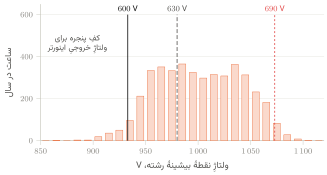
تصمیم. اینورترهای خورشیدیِ نیروگاهِ P خروجیِ 600 V دارند و پنجرهٔ ردیابیِ توانِ کاملشان حدودِ 933 تا 1300 V است؛ رشتهها ۲۶ ماژولی میمانند (D-002). ترانسفورماتورهای واحد 0.6/33 kV میشوند. شاهد. مثال 9.53: 690 V حدودِ 9 % انرژی را از دست میدهد؛ 600 V حدودِ یکصدهزارم (1.2 MWh). گزینههای ردشده. رشتهٔ بلندتر (ولتاژِ مدارِ باز در سرما از 1500 V میگذرد، فصلِ ۶)؛ 630 V (حاشیهٔ کمتر در گرماهای آینده). پیامدها. فرضِ A-020 (کرانِ 850 V) با 600 V و حاشیهٔ صفر سازگار است و جای خود را به این پنجره میدهد؛ جریانِ نامیِ اینورترِ 5.5 MVA در 600 V 5292 A است، نه 4602 Aِ مثالِ فصلِ ۷ که ولتاژِ 690 V را فرض کرده بود؛ کابلها و شینههای AC با این جریان طراحی میشوند (فصلهای ۲۴ و ۲۵). وضعیت: فرضیِ آموزشی تا دادهٔ اینورترِ انتخابی برسد (U-030).
9.5.5 آزمایشگاه: اینورترها در یک سالِ داده
پرسش. با منحنیِ بازدهِ مثال 9.13، کاهشِ توانِ دمایی و ارتفاعیِ A-147 و سقفِ 50 MW، انرژیهای سالانه را بسازید: DCِ ورودی، تلفاتِ تبدیل، بُرش در سقف، کاهشِ توان و ACِ خروجی. بازدهِ وزنیِ ساختگاه را با اروپایی و CEC مقایسه کنید.
مثال 9.54 (انرژیِ سالانهٔ اینورترها) پاسخ.
inverters through the data-pack year (A-147, A-153, D-012):
DC energy at the inverters 103,051 MWh
conversion losses 1,656 MWh (1.61 %)
clipping at 50 MW 8.6 MWh
temperature and altitude 24.3 MWh
AC energy delivered 101,362 MWh
site-weighted efficiency 0.9839; European 0.9824, CEC 0.9842
share of DC energy by load (bins around the European points):
5 % 1, 10 % 2, 20 % 4, 30 % 9, 50 % 40, 100 % 44 (per cent)
this site weights mid and high loads more than the European
convention does: judge efficiency with the site's own weightsتفسیر. تلفاتِ تبدیل 1.6 % است، حدودِ 1.7 GWh در سال؛ بُرش و کاهشِ دمایی با این مدلِ افقی ناچیزند، چون آرایه با تابشِ افقی به سقف نمیرسد و ساعتهای بالای 40 °C در ساختگاه نادرند. ساختگاه 84 % انرژی را در بارهای بالای نیمه میگیرد؛ پس بازدهِ وزنیِ ساختگاه (0.9839) به CEC نزدیکتر است تا اروپایی. درس: برای مقایسهٔ دو پیشنهادِ اینورتر، بازدهِ هر دو را با وزنهای خودِ ساختگاه بسنجید. با مدلِ صفحهٔ آرایه در فصلِ ۱۵، بُرش و کاهشِ دمایی بزرگتر میشوند و این آزمایشگاه دوباره اجرا میشود.
9.5.6 توالیِ آزمون از کارخانه تا ساختگاه
ایده. تأییدِ اینورتر یک زنجیره است که هر حلقه چیزی را ثابت میکند که حلقههای دیگر نمیتوانند (شکل 9.28). این بخش آن زنجیره را بهعنوانِ یک برنامه مینویسد، نه دستورِ کار: چه چیزی، کجا، با کدام شاهد، و چه کسی تأیید میکند. هر گامِ برقدار در ساختگاه با رویهٔ مکتوبِ سازنده و بهرهبردار، مجوزِ کار و افرادِ صلاحیتدار انجام میشود.
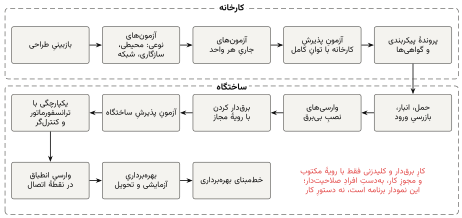
| گام | کجا | چه را ثابت میکند | شاهدِ تحویلی |
|---|---|---|---|
| ۱. بازبینیِ طراحی | سازنده | طرح الزامها و شش وارسی را برآورده میکند | صورتجلسه و اقدامها |
| ۲. آزمونهای نوعی | آزمایشگاه | ایمنی، محیط، سازگاری، کارکرد، انطباق با شبکه | گزارشها و گواهیها، مدلِ اعتبارسنجیشده |
| ۳. آزمونهای جاری | خطِ تولید | هر واحد درست ساخته شده | پروندهٔ ردیابی |
| ۴. پذیرشِ کارخانه | کارخانه | کار با توانِ کامل، حفاظتها، پیکربندی | جدول 9.8، پروندهٔ پیکربندی |
| ۵. حمل و ورود | راه و انبار | آسیبِ حمل، ضربهنگار، رطوبت | گزارشِ بازرسیِ ورود |
| ۶. وارسیهای نصبِ بیبرق | ساختگاه | نصب، گشتاور، قطبیت، عایق، مایعِ خنککن | فهرستِ وارسیِ امضاشده |
| ۷. برقدار کردن | ساختگاه | فقط با رویهٔ مجاز؛ ترتیبِ ترانسفورماتور، AC، DC | مجوزِ کار و صورتجلسه |
| ۸. پذیرشِ ساختگاه | ساختگاه | کارکرد، حفاظتها، ارتباط، بازخوانیِ پیکربندی | گزارشِ پذیرشِ ساختگاه |
| ۹. یکپارچهسازی | ساختگاه | پلههای \(P\) و \(Q\) با کنترلگرِ نیروگاه، رابطِ ترانسفورماتور | منحنیهای پاسخ |
| ۱۰. انطباق در نقطهٔ اتصال | ساختگاه و شبکه | الزامهای بهرهبردارِ شبکه | گزارشِ انطباق |
| ۱۱. بهرهبرداریِ آزمایشی | ساختگاه | دسترسپذیری و عملکرد در دورهٔ معین | گواهیِ تحویل |
| ۱۲. خطمبنا | بهرهبرداری | مرجعِ عملکرد، دما و پیکربندی | پروندهٔ خطمبنا |
چرا این ترتیب؟ آنچه در کارخانه ارزان سنجیده میشود (گرما در توانِ کامل، حفاظتها) به ساختگاه واگذار نمیشود، چون آنجا توانِ کامل فقط چندصد ساعت در سال در دسترس است (مثال 9.62). آنچه فقط در ساختگاه دیده میشود (نصب، شبکهٔ واقعی، کنترلگرِ نیروگاه) در کارخانه شبیهسازی هم نمیشود. خطمبنا آخرین حلقه است: بدونِ آن، پایشِ عملکرد چیزی برای مقایسه ندارد (فصلِ ۵۱).
9.5.7 محدودیتهای مدلهای این فصل
- مدلِ منحنیِ چهارنقطهای و مقیاسهای دما و تابش آموزشیاند؛ مدلِ فیزیکیِ ماژول در فصلِ ۱۰ میآید.
- مدلِ سالانه تابشِ افقی را بهجای صفحهٔ آرایه میگیرد؛ بُرش و کاهشِ دمایی را کم برآورد میکند (فصلِ ۱۵).
- رابطههای تلفات موجدارگی و دمای متغیرِ پیوند را نمیبینند؛ انرژیهای کلیدزنی خطی فرض شدهاند.
- مدلهای کنترل (حلقهٔ قفلِ فاز، حلقهٔ جریان، رویدادِ بسامد) میانگینی و تکگرهاند؛ تشدیدِ صافی، شبکهٔ واقعی و محدودیتهای جریان را ندارند. مطالعههای واقعی با مدلهای تأییدشدهٔ سازندهاند (فصلِ ۲۸).
- عددهای قابلیتِ اطمینان، بازدهِ تولید و ردههای قطعه آموزشیاند و دادهٔ هیچ سازندهای نیستند.
- تنظیمهای حالتهای کار و عبور از خطا الزامِ هیچ شبکهای نیستند؛ عددهای واقعی کشوریاند (فصلهای ۵۵ تا ۵۷).
- چرا آشفتن و مشاهده در بالا آمدنِ تابش اشتباه میکند و رسانایی افزایشی کمتر؟
- اگر رشتهها ۲۸ ماژولی بودند، پنجرهٔ 690 V چه میشد و چه مسئلهٔ دیگری پیش میآمد؟
- چرا سهمِ انرژیِ زیرِ پنجره از سهمِ ساعتها بیشتر است؟
- بازدهِ وزنیِ ساختگاه را چگونه از دادهٔ ساعتی میسازید؟
- کدام گامِ زنجیرهٔ آزمون چیزی را ثابت میکند که هیچ گامِ دیگری نمیکند؟
9.5.8 آزمایشگاه: چرخههای دمای پیوند در یک سال
پرسش. چرخههای دمای پیوند فقط در بسامدِ خروجی نیستند (بخش 9.2.12)؛ یک چرخهٔ روزانه هم هست: صبح سرد، ظهرِ داغ با تلفاتِ زیاد، شبِ سرد. با تلفاتِ ساعتیِ اینورترها در سالِ بستهٔ داده، سهمِ نیمهرساناها و مقاومتِ گرماییِ 0.060 K/W برای هر ماژول، و دمای مایعِ پنج درجه بالای هوا (A-170، فرضی)، نوسانِ روزانهٔ دمای پیوندِ یک ماژول را بسازید و آسیبِ نسبیِ آن را با قانونِ توانیِ بخش 9.2.12 بشمارید.
مثال 9.55 (یک سال چرخهٔ روزانه) پاسخ.
daily junction-temperature swing of one module, data-pack year (A-170):
largest swing 78 K, median 59 K, smallest 22 K
damage (swing/40 K)^5 summed: 3,243 equivalent 40 K cycles per year
damage share by month (%): 1 3 8 13 16 18 16 11 7 4 1 1
the clear days of spring and summer, with air hot in the day
and cool at night, do most of the damage: cooling that also
holds the coolant warmer at night cuts the swingتفسیر. نوسانِ روزانه در روزهای صافِ گرم تا 78 K میرسد (شکل 9.29) و آسیب در بهار و تابستان تمرکز دارد. چون آسیب با توانِ پنجمِ نوسان بالا میرود، چند روزِ بزرگ از صدها روزِ کوچک مهمترند. تدبیرِ سادهای که از این شاهد برمیآید: نگه داشتنِ دمای مایع در شب (کم کردنِ دورِ فنها) نوسان را کوچک میکند. محدودیت: دمای مایعِ ساده، سهمِ ثابتِ نیمهرسانا، و نبودِ چرخههای کوتاهِ ابر؛ شمارشِ دقیقتر از روشِ شمارشِ چرخههای بارانی (فصلِ ۴) و منحنیِ عمرِ سازنده استفاده میکند.
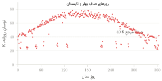
9.5.9 آزمایشگاه: خرابیها در بیستوپنج سال
پرسش. مثال 9.42 میانگینِ دسترسپذیری را داد؛ اما مالک میخواهد بداند در یک سالِ بد چقدر انرژی از دست میرود. با شبیهسازیِ مونتکارلو (فصلِ ۳): برای ده اینورتر و ۲۵ سال، تعدادِ خرابیها را از توزیعِ پواسون و زمانِ هر تعمیر را از توزیعِ لگنرمال بکشید؛ هشت درصدِ خرابیها «بزرگ» با میانهٔ 400 h (انتظار برای ماژولِ توان) و بقیه با میانهٔ 36 h (A-171، فرضی، بذرِ ۲۹).
مثال 9.56 (توزیعِ انرژیِ ازدسترفته) پاسخ.
10 inverters over 25 years, 2000 runs (seed 29, A-171):
failures 0.49/yr each; 8 % major (median 400 h), else median 36 h
energy lost per year: mean 431, P50 425, P90 532 MWh
as a share of 101.4 GWh: mean 0.42 %
the rare long repairs set the tail: a spare power module on site
shortens them more than any other single measureتفسیر. میانگینِ 431 MWh در سال، نزدیکِ برآوردِ سادهترِ مثال 9.18؛ اما یک سالِ از ده سال بیش از 532 MWh از دست میرود (شکل 9.30). دنبالهٔ توزیع را خرابیهای بزرگِ کمشمار میسازند؛ پس یک ماژولِ توانِ یدکی در ساختگاه یا قراردادِ تحویلِ سریع اثری بیش از کم کردنِ آهنگِ خرابیهای کوچک دارد. این همان نوع استدلالی است که فصلِ ۱۶ برای عدمِ قطعیتِ انرژی و فصلِ ۵۲ برای راهبردِ یدکی گسترش میدهند.
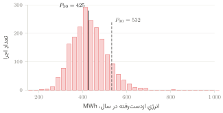
- چرا چرخهٔ روزانه، با آنکه کندتر است، میتواند از چرخهٔ 50 Hz آسیبرسانتر باشد؟
- چگونه کنترلِ فنها نوسانِ روزانه را کم میکند؟
- چرا میانگینِ انرژیِ ازدسترفته برای تصمیمِ یدکی کافی نیست؟
- بذرِ شبیهسازی را عوض کنید: کدام عدد باید ثابت بماند و کدام کمی تغییر کند؟
9.5.10 آزمایشگاه: عدمِ قطعیتِ اندازهگیریِ بازده
پرسش. در آزمونِ پذیرش، بازدهِ اینورتر از نسبتِ توانِ خروجی به ورودی اندازه گرفته میشود. اگر هر دو توانسنج عدمِ قطعیتِ نسبیِ \(u\) داشته باشند و مستقل باشند، با انتشارِ عدمِ قطعیت (فصلِ ۲):
\[ \frac{u(\eta)}{\eta} = \sqrt2\,u, \qquad u(P_\text{loss}) = \sqrt{(P_\text{in}\,u)^2 + (P_\text{out}\,u)^2} \tag{9.17}\]
عدمِ قطعیتِ تلفات چه کسری از خودِ تلفات است؟
مثال 9.57 (تلفات: تفاضلِ دو عددِ بزرگ) پاسخ.
efficiency from input and output power (A-177):
P_in 5.08 MW, efficiency 0.984: loss 81.3 kW
meters +-0.10 % each: efficiency +-0.139 %, loss +-7.1 kW (9 % of the loss)
meters +-0.05 % each: efficiency +-0.070 %, loss +-3.6 kW (4 % of the loss)
the loss is the small difference of two large numbers: its
relative uncertainty is large; summing measured component
losses or a calorimetric method measures it directlyتفسیر. با توانسنجهای 0.1 %، بازده با ±0.14 % معلوم است، اما تلفات با ±9 %: اختلافِ دو پیشنهادِ اینورتر با 0.1 % بازده در این اندازهگیری گم میشود. سه راه: توانسنجهای دقیقتر و همکالیبره (عدمِ قطعیتِ همبسته بخشی از خطا را حذف میکند)؛ جمعِ تلفاتِ اجزا که هر بخش را جدا و دقیقتر میسنجد؛ و روشِ گرماسنجی که گرمای خروجی از خنککاری را مستقیم اندازه میگیرد. روشهای استاندارد اندازهگیریِ بازده (بخش 9.10) شرایط و ابزار را تعریف میکنند؛ قراردادِ خرید باید بگوید ضمانتِ بازده با کدام روش و کدام عدمِ قطعیت وارسی میشود (فصلهای ۲ و ۳۹).
- چرا عدمِ قطعیتِ نسبیِ تلفات بسیار بیشتر از بازده است؟
- اگر دو توانسنج خطای همبستهٔ کامل داشته باشند، عدمِ قطعیتِ بازده چه میشود؟
- روشِ گرماسنجی چه چیزی را مستقیم اندازه میگیرد؟
9.5.11 آزمایشگاه: تصمیمِ پذیرش در آزمونِ گرمایی
پرسش. در آزمونِ پذیرشِ کارخانه (بخش 9.4.12)، دمای داغترین ماژول باید زیرِ حدِ 90 °C بماند. عدمِ قطعیتِ گستردهٔ اندازهگیری 1.5 K است (A-179، فرضی). با قاعدهٔ تصمیمِ نوارِ حفاظتی (فصلِ ۲)، پذیرش فقط زیرِ \(90 - 1.5 = 88.5\ ^\circ\text{C}\) است. دو واحد آزموده میشوند (رکوردِ ساختگی، بذرِ ۳۱). آیا به حالتِ پایدار رسیدهاند و کدام پذیرفته میشود؟
مثال 9.58 (دو واحد، یک حد) پاسخ.
factory heat run, hottest module temperature (A-179):
limit 90 C; expanded uncertainty 1.5 K (k 2); acceptance
below 90 - 1.5 = 88.5 C (guard band, chapter 2)
unit A: final 86.2 C, slope in the last hour +0.22 K/h
-> accept
unit B: final 88.8 C, slope in the last hour +0.08 K/h
-> not proven (guard band)
a reading below the limit is not yet a pass: with the
uncertainty it may lie above it; the contract states the
decision rule before the test (chapter 2, conformity)تفسیر. هر دو به حالتِ پایدار رسیدهاند (شیبِ ساعتِ آخر زیرِ 0.3 K/h). واحدِ A با 86.2 °C پذیرفته میشود؛ واحدِ B با 88.8 °C زیرِ حد است، اما درونِ نوارِ حفاظتی: با این عدمِ قطعیت نمیتوان گفت واقعاً زیرِ حد است (شکل 9.31). پاسخِ درست «رد» نیست بلکه «ثابت نشده» است: اندازهگیریِ دقیقتر، وارسیِ مادهٔ رابطِ گرمایی و دبیِ خنککن، یا تکرارِ آزمون پس از اقدام. قاعدهٔ تصمیم و آستانهها پیش از آزمون در برنامهٔ بازرسی و آزمون نوشته میشوند تا بحث در روزِ آزمون پیش نیاید (فصلهای ۲ و ۴۰).
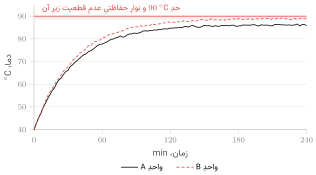
- چرا خواندنِ 88.8 °C زیرِ حدِ 90 °C هنوز «پذیرش» نیست؟
- شیبِ ساعتِ آخر چه چیزی را ثابت میکند؟
- سه اقدام برای واحدِ B پیشنهاد کنید.
9.5.12 آزمایشگاه: حساسیتِ تصمیمِ D-012
پرسش. تصمیمِ D-012 بر مدلِ سادهای ایستاده است (A-153). اگر فرضها اشتباه باشند، آیا تصمیم عوض میشود؟ سه فرض را تغییر دهید: تابشِ صفحهٔ شیبدار ده درصد بیش از افقی، دمای کارِ اسمیِ سلولِ 48 °C بهجای 45، و رشتهٔ ۲۷ ماژولی (A-182)؛ ساعتها و سهمِ انرژیِ زیرِ پنجره را برای 630 و 600 V دوباره بسازید.
مثال 9.59 (تصمیم در برابرِ فرضها) پاسخ.
sensitivity of the window result to model assumptions (A-182):
case 630 V: hours share 600 V: hours share
base (A-153) 1443 0.213 % 138 0.001 %
irradiance x 1.1 1500 0.278 % 157 0.001 %
NOCT 48 C 1696 0.431 % 262 0.004 %
27 modules 275 0.004 % 7 0.000 %
hotter cells (more irradiance on the tilted plane, higher NOCT)
push more hours below the floor; one more module per string
lifts the voltage but must be checked against 1500 V in the
cold (chapter 6): D-012 at 600 V keeps its margin in all casesتفسیر. سلولهای داغتر سهمِ زیرِ پنجرهٔ 630 V را تا دو برابر میکنند؛ برای 600 V در بدترین حالت هم کمتر از چهار در صدهزار است. رشتهٔ ۲۷ ماژولی مسئله را تقریباً حذف میکند، اما ولتاژِ مدارِ باز در سرما را به مرزِ 1500 V نزدیک میکند (فصلِ ۶، مثال 6.39). درس: تصمیمِ خوب تصمیمی است که در برابرِ خطای محتملِ فرضها پایدار باشد؛ D-012 چنین است. این شیوهٔ وارسی، یعنی تغییرِ هر فرض و دیدنِ اینکه آیا نتیجه عوض میشود، در هر تصمیمِ پرونده تکرار میشود (فصلهای ۳ و ۵۹).
- چرا تابشِ بیشتر روی صفحهٔ شیبدار ولتاژِ قله را پایین میآورد؟
- کدام فرض بیشترین اثر را بر نتیجهٔ 630 V دارد؟
- «تصمیمِ پایدار در برابرِ فرضها» را با یک مثالِ دیگر از این فصل توضیح دهید.
9.6 نیروگاهِ P: سه مثالِ یکپارچه
سه مثالِ زیر ابزارِ فصل را روی اینورترهای خورشیدیِ نیروگاهِ P میبرند: یک ساعت از یک اینورتر، بودجهٔ تلفات و گرمای آن با نمودارِ بلوکی، و مشخصهٔ مفهومی با برنامهٔ آزمون. همه بر پایهٔ فرضهای A-144 تا A-165 (فرضی یا ساختگی)، تصمیمِ D-012 و بستهٔ دادهٔ 1.1.0ِ سناریوی S0 هستند.
برنامه:
python -m companion.ch09.integratedمثال 9.60 (مقدماتی: اینورترِ ۱ در ساعتِ ۱۳ یک روزِ تابستان) پرسش. با دادهٔ ساعتِ ۱۳ روزِ ۲ تیر (۲۳ ژوئن) از بستهٔ داده، زنجیره را برای اینورترِ ۱ بسازید: تابش و دما، دمای سلول، قلهٔ رشته، توانِ DCِ بلوکِ 6 MWp، وارسیِ پنجرهٔ DC با D-012، بازده و توانِ AC، جریانِ خروجی در 600 V و توانِ راکتیوِ باقیمانده.
پاسخ.
inverter 1 at 13:00 on 23 June (data pack 1.1.0, S0):
GHI 980 W/m2, air 37.4 C -> cell 68.0 C (NOCT rule)
string of 26: MPP 931 V, 11.90 kW; 419.5 strings, 3 % DC losses
DC power at the inverter 4.844 MW at 931 V: 5,203 A
DC window floor for 600 V AC: 933 V -> BELOW, margin -3 V
efficiency at 0.97 pu: 0.9834 -> AC 4.763 MW, loss 80 kW
AC current at 600 V, pf 1: 4,584 A (1,146 A per stack)
reactive power still available within 5.5 MVA: 2.75 Mvarتفسیر. در گرمترین ساعتها، قلهٔ رشته (931 V) سه ولت زیرِ کفِ پنجره با حاشیهٔ کامل است. اینورتر روی 933 V میماند و روی قلهٔ پهنِ منحنی تقریباً هیچ نمیبازد؛ این همان چند ساعتِ نادرِ مثال 9.53 است. توانِ 4.84 MW از 5 MW اجازه میدهد 2.75 Mvar توانِ راکتیو هم داده شود (فصلِ ۷، معادلهٔ 7.39). وارسی: \(4.763 \times 10^6/(\sqrt3 \times 600) = 4583\ \text{A}\) (درست).
مثال 9.61 (میانی: نمودارِ بلوکی و بودجهٔ تلفات و گرما) پرسش. نمودارِ بلوکیِ مفهومیِ اینورترِ 5 MW را بکشید و بودجهٔ تلفات و گرما را در توانِ ظاهریِ کامل (5.5 MVA) بسازید: نیمهرساناها با مدلِ NPC، صافی و میرایی، خازنها، شینهها، کنترل و خنککاری (A-165، فرضی). دمای پیوندِ داغترین قطعه و دبیِ مایعِ خنککن را بیابید.
پاسخ. نمودارِ بلوکی در شکل 9.32 و بودجه در زیر:
loss and thermal budget of one 5 MW inverter at 5.5 MVA, pf 0.909 (A-165):
semiconductors (4 stacks x 3 NPC legs) 49.6 kW (59.2 %)
LCL inductors L1 and L2 (copper and core) 19.2 kW (23.0 %)
filter damping resistors 3.7 kW ( 4.4 %)
DC-link capacitors (ESR) 0.2 kW ( 0.2 %)
busbars, cables, contactors 4.4 kW ( 5.3 %)
control, gate drives, sensors 1.2 kW ( 1.4 %)
fans, pumps, cabinet cooling 5.5 kW ( 6.6 %)
total 83.8 kW; efficiency at 5 MW 0.9835
hottest device T1: 988 W per position, two modules in parallel,
R_th junction-to-coolant 0.060 K/W each:
mean junction 75 C at 45 C coolant,
plus a ripple of about 10 K at 50 Hz (section A): well below
the data-sheet limit, a margin for hot days and ageing
coolant flow for a 6 K rise: 3.9 kg/s; heat to air outside the skidتفسیر. 84 kW تلفات، 59 % در نیمهرساناها و 27 % در صافی؛ بازده در 5 MW برابرِ 0.9835، همخوان با نقطهٔ 100 %ِ برگهٔ داده (0.983، مثال 9.13): دو برآوردِ مستقل، یکی از پایین (قطعه به قطعه) و یکی از بالا (برگهٔ داده)، به هم رسیدند. دمای پیوندِ 75 °C حاشیهٔ خوبی تا حدِ برگهٔ داده دارد؛ این حاشیه برای روزهای گرم، گرد و غبارِ مبدّلِ گرما و فرسودگی است. بودجه ابزارِ گفتوگو با سازنده است: اگر پیشنهادی بازده یا دمای بهتری ادعا کند، میتوان پرسید کدام سطر کوچکتر شده است.
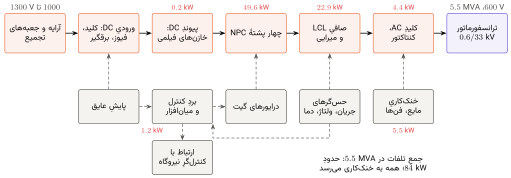
مثال 9.62 (یکپارچه: مشخصهٔ مفهومی و برنامهٔ آزمون از کارخانه تا ساختگاه) پرسش. مشخصهٔ مفهومیِ اینورترهای خورشیدیِ نیروگاهِ P را بنویسید و برنامهٔ آزمونِ کارخانه تا ساختگاه را با شاهدِ بستهٔ داده توجیه کنید: در یک سال، چند ساعت یک اینورتر میتواند در ساختگاه نزدیکِ توانِ کامل آزموده شود؟
پاسخ.
hours when one inverter could be tested near full power
(DC above 4.5 MW, data-pack year 1.1.0):
Jan 0 Feb 0 Mar 11 Apr 68 May 94 Jun 116
Jul 99 Aug 47 Sep 17 Oct 0 Nov 0 Dec 0
total 452 hours a year; a site test at full power
waits for clear middays, so the factory heat run at full power
on a test bench carries the thermal proof (FAT), and the site
test (SAT) checks function, settings and integration| بخش | الزامِ مفهومی | منبع در این فصل |
|---|---|---|
| رده | 5.0 MW و 5.5 MVA در 600 V تا دمای 40 °C و ارتفاعِ 1200 m؛ منحنیِ کاهشِ توان | A-101، D-012، بخش 9.2.14 |
| پنجرهٔ DC | ردیابی با توانِ کامل در 933 تا 1300 V؛ تحملِ 1500 V | مثال 9.53 |
| بازده | منحنی در چند ولتاژ؛ ارزیابی با وزنهای ساختگاه | مثال 9.54 |
| ردیابی | ردیابِ با گامِ متغیر و جستوجوی سراسری؛ بازدهِ ردیابیِ پویا با روشِ استاندارد | بخش 9.5.1 |
| کیفیتِ توان | طیفِ هارمونیکی و مدلِ هارمونیکی؛ میراییِ تشدیدِ صافی | بخش 9.3.4 |
| رفتار در شبکه | نمودارِ \(P\)–\(Q\) با ولتاژ؛ حالتهای کار؛ عبور از خطا؛ کمینهٔ نسبتِ اتصالِ کوتاه؛ آمادگی برای رفتارِ سازندهٔ شبکه | بخش 9.4.4، بخش 9.4.5 |
| مدلها | مدلهای پایداری، گذرا و هارمونیکی همخوان با میانافزار | جدول 9.7 |
| حفاظت | جدول 9.6 با بازهٔ تنظیم و هماهنگی | بخش 9.4.6 |
| ساخت و آزمون | برنامهٔ بازرسی و آزمون؛ آزمونِ پذیرشِ کارخانه با توانِ کامل؛ پروندهٔ ردیابی و پیکربندی | جدول 9.8، جدول 9.9 |
| بهرهبرداری | یدکی، دسترسپذیری، سیاستِ بهروزرسانی، پشتیبانی | بخش 9.4.14 |
تفسیر. فقط 452 ساعت در سال، و هیچکدام در پاییز و زمستان، یک اینورتر بالای 4.5 MWِ DC است. اگر راهاندازی در پاییز باشد، آزمونِ توانِ کامل در ساختگاه ممکن نیست؛ پس اثباتِ گرمایی در کارخانه است و آزمونِ ساختگاه بر کارکرد، پیکربندی و یکپارچهسازی تمرکز میکند (جدول 9.9). مرزِ کار: این مشخصه مفهومی است؛ عددهای قطعی، آییننامهٔ اتصالِ کشور، تنظیمهای حفاظت و روشهای آزمون را مهندسانِ صلاحیتدارِ پروژه، بهرهبردارِ شبکه و سازنده تعیین میکنند.
9.7 گردشِ کارِ انتخاب و یکپارچهسازیِ یک اینورتر
- الزامها از نیروگاه: توان و توانِ ظاهری، ولتاژهای DC و AC، محیط و ارتفاع، رفتارِ شبکه، عمر و نگهداری.
- پنجرهٔ DC با ولتاژِ رشتهها در یک سالِ داده (بخش 9.5.4) و تصمیمِ ثبتشده.
- معماری (مرکزی یا رشتهای) با انرژی، هزینه و نگهداری (بخش 9.3.1).
- بازده و بودجهٔ تلفات با وزنهای ساختگاه و بودجهٔ قطعه به قطعه (مثال 9.54 و مثال 9.61).
- رفتار در شبکه: قابلیت، حالتها، خطا، شبکهٔ ضعیف و مدلها (بخش 9.4).
- مشخصه و ارزیابیِ پیشنهادها با جدول 9.10 و جدول 9.7.
- بازرسی و آزمون از کارخانه تا ساختگاه (جدول 9.9) و پیکربندی زیرِ کنترل (بخش 9.4.10).
- بهرهبرداری: یدکی، پایش و خطمبنا (بخش 9.4.14، فصلهای ۵۱ و ۵۲).
- مرزِ کار: طراحیِ محصول با سازنده؛ تنظیمها با آییننامهٔ اتصال و مهندسِ حفاظت؛ آزمونهای برقدار با رویهٔ مجاز.
9.8 آزمایشگاههای پایتونِ این فصل
| آزمایشگاه | برنامه | آنچه میسازد |
|---|---|---|
| مبانیِ تبدیل | examples_a | کلید، قطعهها، یکسوساز، DC–DC، پل، طیفِ PWM، پنجرهٔ DC، تلفات، دمای پیوند، بازده، کاهشِ توان |
| زیرسامانهها | examples_b | معماری، گامِ ردیاب، پیوندِ DC، صافیِ LCL، سلف، شینه، درایور، خنککاری، ردهها |
| رفتار و ساخت | examples_c | حلقهٔ قفلِ فاز، حلقهٔ جریان، رویدادِ بسامد، شبکهٔ ضعیف، حالتها، خطا، حالتِ مشترک، پیکربندی، بازدهِ تولید، قابلیتِ اطمینان |
| آزمایشگاهِ ت | lab_d، pvyear | ردیابی در ابر و سایه، رابطهٔ بسته در برابرِ شبیهسازی، پنجره و انرژیِ سالانه |
| نیروگاهِ P | integrated | یک ساعت، بودجهٔ تلفات و گرما، پنجرههای آزمونِ توانِ کامل |
| مثالهای کوچک و پاسخنامه | worked، solutions | سطرهای E01 به بعد و پاسخهای عددی |
کتابخانهٔ همراه دو ماژول میافزاید: pe (رابطههای مبدّلهای DC–DC، یکسوساز، پنجرهٔ DC، PWM و طیف، تلفاتِ بسته و شبیهسازیشده، NPC، شبکهٔ فاستر، بازده و وزنها، کاهشِ توان، صافیِ LCL، پیوندِ DC، عبور از خطا) و mppt (مدلِ چهارنقطهای، مقیاسِ تابش و دما، سایه و دیودِ میانگذر، سه ردیاب) با آزمونهایی که رابطههای بسته را با شبیهسازی میسنجند. تمرینِ پیشنهادی: در pvyear بهجای تابشِ افقی، تابشِ صفحهٔ آرایه با ضریبِ 1.1 بگذارید و ببینید مثال 9.53 و مثال 9.54 چقدر تغییر میکنند.
9.9 ساخت و تولیدِ صنعتی در این فصل
این فصل محصولی مشخص دارد و ساختِ صنعتیاش در بخشِ پ آمده است: زنجیرهٔ ساختِ برد، ماژول، پشته و پوسته با ردیابی (بخش 9.4.9)، کنترلِ پیکربندی (بخش 9.4.10)، تأییدِ صلاحیت (بخش 9.4.11) و آزمونهای کارخانه (بخش 9.4.12)، و تجزیهٔ محصول (بخش 9.3.13). فصلِ ۴۴ (ساختِ اینورتر و مبدّل) آن را در سطحِ کارخانه کامل میکند: چیدمانِ خط، برنامههای کنترل، ظرفیت، میزهای آزمون و سامانهٔ کیفیت؛ فصلِ ۴۰ ممیزیِ تأمینکننده را. نکتهٔ کیفیتیِ مشترک: مادهٔ رابطِ گرمایی و گشتاورِ پیچهای شینه از آن کنترلهاییاند که خطایشان در آزمونِ کوتاهِ پایانِ خط دیده نمیشود و سالها بعد به شکلِ نقطهٔ داغ برمیگردد؛ پس کنترلِ فرایند است که آنها را تضمین میکند، نه آزمونِ پایانی.
9.10 جعبهٔ استاندارد و انطباق
مرجعهای زیر فقط با عنوان و ویرایشِ وارسیشده آمدهاند (دفترِ استانداردها با تاریخِ وارسی) و هیچ بند یا جدولی از آنها نقل نشده است. پذیرشِ ملیِ هیچکدام در ایران، افغانستان و تاجیکستان وارسی نشده است (فصلهای ۵۵ تا ۵۷).
- ایمنیِ مبدّلهای خورشیدی: IEC 62109-1:2010 (الزامهای کلی) و IEC 62109-2:2011 (الزامهای ویژهٔ اینورترها). ویرایشهای تازهٔ هر دو بهصورتِ پیشانتشار فهرست شدهاند؛ پیش از بهکارگیری وضعیت را وارسی کنید.
- ایمنیِ سامانههای مبدّلِ الکترونیکِ قدرت: IEC 62477-1:2022، ویرایشِ دوم (تا 1000 V متناوب و 1500 V مستقیم؛ جایی که استانداردِ محصول نیست).
- اندازهگیریِ بازدهٔ مبدّلهای خورشیدی: IEC 61683:1999؛ بازدهٔ کل و بازدهٔ ردیابیِ ایستا و پویا: EN 50530:2010+A1:2013 (وضعیتِ اصلاحیه در فهرستهای ملی متفاوت است).
- آزمونِ پیشگیری از جزیره در اینورترهای متصل به شبکه: IEC 62116:2014.
- هماهنگیِ عایق در ولتاژپایین: IEC 60664-1:2020 با اصلاحیهٔ 1:2025 (فاصلههای هوایی و خزشی، عایقِ جامد، رهنمودِ ارتفاع).
- سازگاریِ الکترومغناطیسی، محیطِ صنعتی: IEC 61000-6-2:2016 (ایمنی) و IEC 61000-6-4:2018 (گسیل)، جایی که استانداردِ محصول نیست.
- خازنهای الکترونیکِ قدرت: IEC 61071:2017.
- ویژگیهای الکتریکیِ توربینِ بادی: IEC 61400-21-1:2019 (کیفیتِ توان، توانِ راکتیو، عبور از خطا و آزمونهای کنترل).
- کیفیتِ توان و هارمونیک: همان مرجعهای فصلِ ۷ (بخش 7.10).
- مرز: الزامهای اتصال به شبکه (عبور از خطا، توانِ راکتیو، پاسخِ بسامد، رفتارِ سازندهٔ شبکه) کشوریاند و از آییننامهٔ بهرهبردارِ شبکه میآیند (فصلهای ۱۷ و ۵۵ تا ۵۷)؛ امنیتِ سایبریِ اینورتر در فصلِ ۳۶.
9.11 تحویلدادنیِ نیروگاهِ P
این فصل اینها را به پروندهٔ نیروگاهِ P میافزاید:
- PLP-ELE-SPC-0002، بازنگریِ A: مشخصهٔ مفهومیِ اینورترهای خورشیدی (جدول 9.10) با الزامهای رابطِ سازنده (جدول 9.7) و حفاظتها (جدول 9.6).
- PLP-ELE-DWG-0001، بازنگریِ A: نمودارِ بلوکیِ مفهومیِ اسکیدِ اینورتر (شکل 9.32) و تجزیهٔ محصول (شکل 9.15، جدول 9.3).
- PLP-ELE-CAL-0005، بازنگریِ A: بودجهٔ تلفات و گرما (مثال 9.61) و انرژیِ سالانهٔ اینورترها (مثال 9.54).
- PLP-ELE-REP-0003، بازنگریِ A: گزارشِ پنجرهٔ ولتاژِ DC با شاهدِ یک سال (مثال 9.53)، پایهٔ تصمیمِ D-012.
- PLP-ELE-PRO-0001، بازنگریِ A: برنامهٔ آزمون از کارخانه تا ساختگاه (جدول 9.9 و جدول 9.8)؛ برنامه است، نه دستورِ کار.
- کتابخانهٔ همراه: ماژولهای
peوmpptبا آزمونها و برنامههایcompanion/ch09. - فرضها: A-144 دادهٔ هر جایگاهِ کلیدِ مبدّلِ سمتِ شبکهٔ توربین (ردهٔ 1700 V، ماژولهای موازی)؛ A-145 اینورترِ 5 MW با چهار پشتهٔ 1.375 MVAِ NPC و دادهٔ هر جایگاهِ کلیدِ ردهٔ 1200 V؛ A-146 بسامدهای کلیدزنیِ 2.5 kHz (توربین) و 3 kHz (اینورتر)؛ A-147 نقطههای بازدهِ برگهٔ دادهٔ آموزشی و منحنیِ کاهشِ توان؛ A-148 مقدارهای آموزشیِ قطعهها و شبکهٔ فاستر؛ A-149 طبقهٔ افزایندهٔ اینورترِ رشتهایِ 50 kW؛ A-150 حاشیهٔ 10 %ِ پنجرهٔ DC؛ A-151 دادههای مقایسهٔ معماری و زمانِ گامِ ردیاب؛ A-152 خازنِ فیلمیِ 1 mF؛ A-153 مدلِ سالانهٔ سادهٔ آرایه؛ A-154 هدفهای طراحیِ صافی و مدارِ حلقهٔ جریان؛ A-155 آهنگِ تغییرِ جریان، بارِ گیت و زمانِ مرده؛ A-156 سهمهای گرمای پشته و دادهٔ خنککن؛ A-157 جریانِ مجازِ ماژول با دمای مایع؛ A-158 پهنای باندِ حلقهٔ قفلِ فاز و حلقهٔ جریان؛ A-159 سامانهٔ تکگرهٔ رویدادِ بسامد؛ A-160 شبکههای ضعیفتر؛ A-161 تنظیمهای آموزشیِ حالتهای کار؛ A-162 تنظیمهای آموزشیِ عبور از خطا؛ A-163 آهنگِ تغییرِ ولتاژ و ظرفیتهای پراکنده، بازدهِ مرحلههای تولید و آهنگهای خرابی؛ A-164 نمایهٔ ساختگیِ ابر (بذرِ ۲۳) و حالتِ سایه؛ A-165 سطرهای بودجهٔ تلفات و مقاومتِ گرمایی. همه فرضی یا ساختگی؛ در انتشارِ بعدیِ بستهٔ داده به دفترِ فرضها افزوده میشوند.
- مجهولها: U-030 دادهٔ واقعیِ اینورترِ انتخابی (بازده در چند ولتاژ، کاهشِ توان، نمودارِ قابلیت، طیفِ هارمونیکی، مدلها) از سازنده (فصلهای ۱۸ و ۳۹)؛ U-031 تنظیمهای واقعیِ عبور از خطا، توانِ راکتیو، پاسخِ بسامد و کمینهٔ نسبتِ اتصالِ کوتاه از آییننامهٔ اتصال و بهرهبردارِ شبکه (فصلهای ۱۷ و ۲۸)؛ U-032 تابشِ صفحهٔ آرایه و دمای واقعیِ سلول برای پنجرهٔ DC و انرژیِ سالانه (فصلهای ۱۰ و ۱۵).
- تصمیم D-012: اینورترهای خورشیدی با خروجیِ 600 V و پنجرهٔ 933 تا 1300 V؛ رشتههای ۲۶ ماژولی؛ ترانسفورماتورهای 0.6/33 kV (بخش 9.5.4). فرضِ A-020 با این پنجره جایگزین میشود.
- دفترِ سندها (جدول 2.18): پنج ردیفِ بالا با وضعیتِ «پیشنویس، آموزشی».
9.12 جمعبندی
- کلید، نه مقاومت: کلیدِ بسته ولتاژِ کم و کلیدِ باز جریانِ صفر دارد؛ تلفات در هدایت و در لحظهٔ کلیدزنی است؛ چرخهٔ کار میانگین را تعیین میکند.
- قطعهها: دیود، تریستور، ماسفت، آیجیبیتی و شکافپهنها؛ مدلِ هدایتِ \(V_0 + r\,i\) در برابرِ \(R_\text{on}\,i\)؛ آیجیبیتی برای مگاواتها، کاربیدِ سیلیسیم برای بسامدِ بالا.
- تبدیلها: یکسوسازِ ششپالسه \(1.35\,V_\text{LL}\) و هارمونیکهای \(6k \pm 1\)؛ کاهنده و افزاینده با توازنِ ولت–ثانیه؛ پلِ سهفاز با \(V_\text{LL} = 0.612\,m\,V_\text{dc}\).
- مدولاسیون: PWM اعوجاج را به کنارِ بسامدِ حامل میبرد؛ بردارِ فضایی 15.5 % ولتاژ بیشتر میدهد؛ کمینهٔ DC برابرِ \(\sqrt2\,V_\text{LL}\) با حاشیه؛ سهسطحی گامها و تنشِ قطعه را نصف میکند.
- تلفات و گرما: رابطههای بستهٔ هدایت و کلیدزنی با شبیهسازی تا چند درصد همخواناند؛ نوسانِ دمای پیوند در بسامدِ خروجیِ کم بزرگ و عمرکُش است؛ مدلِ سهضریبیِ تلفات منحنیِ بازده و بازدهٔ وزنی را میسازد؛ کاهشِ توان با دما و ارتفاع.
- زیرسامانهها: معماریهای مرکزی و رشتهای؛ ردیابیِ نقطهٔ بیشینه با سه الگوریتم؛ پیوندِ DC با جریانِ موجدارگی اندازه میشود و ذخیرهٔ انرژی نیست اما برای انسان خطرناک است؛ صافیِ LCL با تشدید و میرایی؛ سلف و فاصلهٔ هوایی؛ شینهٔ لایهای؛ درایور و زمانِ مرده؛ حسگرها و پایشِ عایق؛ خنککاری؛ عایق؛ پوسته؛ مرزِ سختافزار و میانافزار؛ ردهها و کاهشِ رده؛ شش وارسیِ طراحی.
- رفتار در شبکه: حلقهٔ قفلِ فاز و حلقههای جریان؛ پیرو منبعِ جریانی است که زاویه را از شبکه میگیرد، سازنده منبعِ ولتاژی است که آن را میسازد؛ شبکهٔ ضعیف؛ حالتهای کار؛ عبور از خطا با جریانِ راکتیوِ محدود؛ حفاظتها؛ حالتِ مشترک و سازگاری.
- ساخت و تأیید: زنجیرهٔ برد، ماژول، پشته و پوسته؛ ردیابی؛ کنترلِ پیکربندی با اثرانگشت؛ آزمونهای نوعی و جاری؛ آزمونِ پذیرشِ کارخانه با توانِ کامل؛ یکپارچهسازی؛ آهنگِ خرابی، دسترسپذیری و یدکی.
- نیروگاهِ P: شاهدِ یک سال نشان داد اینورترِ 690 V با رشتههای ۲۶ ماژولی 9 % انرژی را میگذارد؛ تصمیمِ D-012 خروجیِ 600 V را برگزید؛ بودجهٔ تلفاتِ 84 kW با برگهٔ داده همخوان است؛ آزمونِ گرمایی جایش در کارخانه است.
- درسهای تکمیلی: پیششارژ همانقدر گرما میسازد که انرژی ذخیره میکند؛ پلِ دوگانهٔ فعال با اختلافِ فاز توان میبرد؛ مبدّلِ باتری دو بار تلفات دارد؛ چاپرِ ترمز پیوند را در افتِ ولتاژ نگه میدارد؛ درهمتنیدگی موجدارگی را پنج برابر کم میکند؛ زمینِ کارکردی پتانسیلِ ماژولها را جابهجا میکند؛ خازنها خطای DC را دهها کیلوآمپر میکنند؛ چرخهٔ روزانهٔ دما در بهار و تابستان آسیب میزند؛ دنبالهٔ خرابیها را تعمیرهای بلند میسازند؛ شبکهٔ ضعیف تشدیدِ صافی را پایین میکشد؛ تلفات تفاضلِ دو عددِ بزرگ است و اندازهگیریاش عدمِ قطعیتِ بزرگی دارد.
9.12.1 واژگانِ فصلِ ۹
| فارسی | انگلیسی | یادداشت |
|---|---|---|
| الکترونیکِ قدرت | power electronics | |
| وارونگر (اینورتر)، یکسوساز | inverter, rectifier | |
| مبدّلِ کاهنده، افزاینده | buck converter, boost converter | |
| مبدّلِ پشتبهپشت | back-to-back converter | |
| چرخهٔ کار | duty cycle | \(D\) |
| بسامدِ کلیدزنی | switching frequency | \(f_\text{sw}\) |
| آیجیبیتی، ماسفت، تریستور | IGBT, MOSFET, thyristor | |
| کاربیدِ سیلیسیم، نیتریدِ گالیم | silicon carbide, gallium nitride | شکافپهن |
| محدودهٔ کارِ امن | safe operating area | |
| بازیابیِ معکوس | reverse recovery | \(E_\text{rr}\) |
| کموتاسیون | commutation | |
| یکسوسازِ فعال | active front end | |
| ساق، پل | leg, bridge | |
| ضریبِ مدولاسیون، نسبتِ بسامدِ حامل | modulation index, frequency ratio | \(m\)، \(m_f\) |
| مدولاسیونِ پهنای پالس | pulse-width modulation | PWM |
| مدولاسیونِ بردارِ فضایی | space-vector modulation | |
| فرامدولاسیون | overmodulation | |
| مبدّلِ سهسطحیِ با نقطهٔ میانیِ کلمپشده | neutral-point clamped converter | NPC |
| مبدّلِ ماژولارِ چندسطحی | modular multilevel converter | |
| تلفاتِ هدایت، تلفاتِ کلیدزنی | conduction, switching losses | |
| امپدانسِ گرماییِ گذرا | transient thermal impedance | \(Z_\text{th}\) |
| چرخهٔ توان | power cycling | |
| بازدهٔ اروپایی، بازدهٔ وزنی | European efficiency, weighted efficiency | |
| کاهشِ توان، کاهشِ ردهٔ قطعه | derating, component derating | |
| ردیابیِ نقطهٔ بیشینهٔ توان | maximum power point tracking | MPPT |
| آشفتن و مشاهده، رسانایی افزایشی | perturb and observe, incremental conductance | |
| جستوجوی سراسری | global scan | |
| جعبهٔ تجمیع | combiner box | |
| پیوندِ DC | DC link | |
| خودترمیمی | self-healing | خازنِ فیلمی |
| صافیِ LCL، میرایی | LCL filter, damping | |
| شینهٔ لایهای، اندوکتانسِ پراکنده | laminated busbar, stray inductance | |
| اسنابر | snubber | |
| درایورِ گیت، زمانِ مرده | gate driver, dead time | |
| حفاظتِ اشباعزدایی | desaturation protection | |
| پایشگرِ عایق | insulation monitoring device | |
| فاصلهٔ هوایی، فاصلهٔ خزشی | clearance, creepage distance | |
| درجهٔ آلودگی، ردهٔ اضافهولتاژ | pollution degree, overvoltage category | |
| میانافزار، مجموعهٔ پارامتر | firmware, parameter set | |
| حلقهٔ قفلِ فاز | phase-locked loop | |
| پیروِ شبکه، سازندهٔ شبکه | grid-following, grid-forming | |
| لختیِ مجازی، پاسخِ سریعِ بسامد | virtual inertia, fast frequency response | |
| نسبتِ اتصالِ کوتاه | short-circuit ratio | SCR |
| عبور از خطا | fault ride-through | |
| ولتاژِ حالتِ مشترک | common-mode voltage | |
| تشخیصِ جزیره | islanding detection | |
| بازدهِ نخستینگذر | first-pass yield | |
| کنترلِ پیکربندی، خطمبنا | configuration control, baseline | |
| آزمونِ پذیرشِ کارخانه، ساختگاه | factory, site acceptance test | FAT, SAT |
| پیششارژ، جریانِ هجومی | pre-charge, inrush current | |
| پلِ دوگانهٔ فعال | dual active bridge | |
| مبدّلِ باتری | power conversion system | |
| چاپرِ ترمز | brake chopper | |
| درهمتنیدگی، جریانِ گردشی | interleaving, circulating current | |
| زمینِ کارکردی | functional earthing | |
| تخریبِ ناشی از پتانسیل | potential-induced degradation | |
| منبعِ بیوقفهٔ دوتبدیلی | double-conversion UPS | |
| پایداریِ امپدانسی | impedance-based stability | |
| جزیرهٔ ناخواسته، ناحیهٔ کور | unintentional island, non-detection zone | |
| روشِ گرماسنجی | calorimetric method |
منابعِ پیشنهادی. کتابهای درسیِ «الکترونیکِ قدرت» (مبدّلها، مدولاسیون، کنترل)، کتابهای مرجعِ «سامانههای فتوولتائیکِ متصل به شبکه» و «مبدّلهای توربینِ بادی»، یادداشتهای کاربردیِ سازندگانِ نیمهرسانا دربارهٔ تلفات و گرما، و استانداردهای جعبهٔ این فصل (بخش 9.10). فصلهای ۱۰، ۱۱، ۱۷، ۱۹، ۲۰، ۲۸ و ۴۴ این مبدّلها را به ماژول، توربین، شبکه، باتری، کنترلگرِ نیروگاه، مطالعههای دینامیکی و کارخانه میبرند.
9.13 ارزیابیِ پلکانی
معیارِ تسلطِ این فصل: خواننده میتواند یک مبدّل را از کلید تا شبکه توضیح دهد، تلفات، دما، بازده و پنجرهٔ ولتاژ را با رابطه و کد حساب کند، زیرسامانهها را در مرتبهٔ اول طراحی کند، پیرو و سازندهٔ شبکه را از هم جدا کند، و برای اینورترهای نیروگاهِ P مشخصه و برنامهٔ آزمونِ کارخانه تا ساختگاه بنویسد. پاسخها و معیارها در بخش 9.14 آمدهاند و پاسخهای عددی را برنامهٔ حلِ فصل ساخته است.
9.13.1 پلهٔ ۱: مبانی
تمرین 9.1 400 V و 50 A را با یک ترانزیستورِ خطی از 800 V میسازیم. تلفات و بازده چیست؟
تمرین 9.2 چرخهٔ کارِ کاهندهٔ 1100 به 550 V و موجدارگیِ جریانِ سلفِ 0.5 mH در 8 kHz را بیابید.
تمرین 9.3 چرخهٔ کارِ افزایندهٔ 500 به 800 V و موجدارگی با 1 mH در 10 kHz چیست؟
تمرین 9.4 ولتاژِ DCِ پلِ دیودی روی 690 V و پلِ تریستوری با زاویهٔ آتشِ \(45^\circ\) را بیابید.
تمرین 9.5 پلِ دوسطحی روی 1000 V با \(m = 0.9\) چه ولتاژِ خط به خطی میسازد؟ بیشینه با مدولاسیونِ بردارِ فضایی چیست؟
تمرین 9.6 کمینهٔ ولتاژِ DC برای خروجیِ 480 V با مدولاسیونِ بردارِ فضایی، بیحاشیه و با حاشیهٔ 10 %؟
تمرین 9.7 نسبتِ بسامدِ حامل برای 2.5 kHz در 50 Hz چیست و نخستین گروهِ هارمونیکها کجاست؟
تمرین 9.8 افتِ آیجیبیتی (\(0.9\ \text{V} + 0.5\ \text{m}\Omega\)) و ماسفت (\(2\ \text{m}\Omega\)) در 1200 A؟ جریانِ برابری؟
تمرین 9.9 توانِ درایورِ گیت با \(Q_\text{g} = 5\ \mu\text{C}\)، 25 V تغییرِ ولتاژ و 10 kHz؟
تمرین 9.10 فراجهشِ ولتاژ با 50 nH و 4 kA/µs؟
تمرین 9.11 دمای پیوند با 800 W تلفات، 0.05 K/W و مایعِ 40 °C؟
تمرین 9.12 خازنِ 12 mF در 1100 V چه انرژیای دارد و با مقاومتِ تخلیهٔ 50 kΩ کِی به 50 V میرسد؟
تمرین 9.13 بسامدِ تشدیدِ صافی با \(L_1 = 100\ \mu\text{H}\)، \(L_2 = 50\ \mu\text{H}\) و \(C = 200\ \mu\text{F}\)؟
تمرین 9.14 اگر نوسانِ دمای پیوند از 20 به 30 K برسد، عمرِ چرخهای با \(n = 5\) چند برابر میشود؟
تمرین 9.15 خطای ولتاژِ زمانِ مردهٔ 2 µs در 1100 V و 4 kHz؟
تمرین 9.16 جریانِ موجدارگیِ خازنِ پیوند با \(m = 1\)، ضریبِ توانِ یک و جریانِ فازِ 1000 A؟
تمرین 9.17 نسبتِ اتصالِ کوتاه برای نیروگاهِ 100 MW در شبکههای 1000 و 300 MVA؟
تمرین 9.18 با \(k = 2\) و حدِ 1.1 پریونیت، جریانهای راکتیو و اکتیو در ولتاژِ 0.6 پریونیت؟
تمرین 9.19 با افتِ 5 % و باندِ مردهٔ 0.2 Hz، در 50.7 Hz توان چقدر کم میشود؟
تمرین 9.20 دسترسپذیریِ اینورتری با 0.5 خرابی در سال و 48 h زمانِ بازگرداندن؟
تمرین 9.21 بازدهِ نخستینگذرِ خطی با هفت مرحلهٔ 0.99؟
تمرین 9.22 دبیِ گلیکول برای 60 kW و افزایشِ 5 K با \(c_p = 3.6\ \text{kJ/(kg K)}\)؟
تمرین 9.23 جریانِ نامیِ 5.5 MVA در 600 و 690 V؟
تمرین 9.24 توانِ در دسترسِ اینورترِ 5 MW در 45 °C و 1500 m با منحنیِ A-147؟
تمرین 9.25 تلفِ بیباریِ 13.75 kW اگر اینورتر هر شب 12 ساعت بیدار بماند، در سال؟
تمرین 9.26 پیرو و سازندهٔ شبکه را با یک جمله و یک پیامدِ هر کدام تعریف کنید.
تمرین 9.27 ردیابیِ نقطهٔ بیشینهٔ توان را از انتقالِ بیشینهٔ توان (فصلِ ۶) جدا کنید.
تمرین 9.28 سه دلیل بیاورید که اینورترهای 1500 V سهسطحیاند.
تمرین 9.29 آزمونِ نوعی و آزمونِ جاری را برای یک اینورتر با یک مثال از هر کدام جدا کنید.
تمرین 9.30 چرا خازنِ فیلمی جای خازنِ الکترولیتی را در پیوندِ DCِ اینورترهای بزرگ گرفته است؟
9.13.2 پلهٔ ۲: تحلیل
تمرین 9.31 تلفاتِ هدایتِ آیجیبیتی (\(0.8\ \text{V}\)، \(1\ \text{m}\Omega\)) و دیود (\(0.9\ \text{V}\)، \(0.8\ \text{m}\Omega\)) را با معادلهٔ 9.7 برای \(\hat I = 1000\ \text{A}\)، \(m = 0.9\) و ضریبِ توانِ یک بیابید.
تمرین 9.32 تلفاتِ کلیدزنی با \(\hat I = 1000\ \text{A}\)، 700 V، 4 kHz، \(E_\text{on}+E_\text{off} = 0.12\ \text{J}\) و \(E_\text{rr} = 0.04\ \text{J}\) در 600 A و 600 V؟
تمرین 9.33 با مثال 9.11، در چه بسامدی تلفاتِ کلیدزنی با هدایت برابر میشود؟
تمرین 9.34 اگر هر دو مبدّلِ توربین 1.25 % تلفاتِ نیمهرسانا داشته باشند، بازدهِ این بخشِ زنجیره چیست؟
تمرین 9.35 افزایشِ دما با شبکهٔ فاستر \(R = [0.01, 0.03]\ \text{K/W}\) و \(\tau = [0.05, 2]\ \text{s}\) برای پلهٔ 1 kW در 0.1 و 10 s؟
تمرین 9.36 ضریبهای مدلِ سهضریبی را از نقطههای (0.1، 0.96)، (0.5، 0.985) و (1.0، 0.982) بیابید. بیشینهٔ بازده کجاست؟
تمرین 9.37 بازدهٔ اروپایی و CEC را برای ضریبهای مسئلهٔ پیش حساب کنید.
تمرین 9.38 برای مبدّلِ سمتِ شبکهٔ توربین (پیکِ 6224 A، 1100 V، 2.5 kHz، دوسطحی)، \(L_1\) برای موجدارگیِ 15 % چیست؟
تمرین 9.39 خازنِ صافی برای 5 % توانِ راکتیو در 5.26 MVA و 690 V؟
تمرین 9.40 با خازنِ مسئلهٔ پیش، \(L_2\) برای تضعیفِ 10 % در 2.5 kHz و بسامدِ تشدید را بیابید و وارسی کنید.
تمرین 9.41 مقاومتِ میراییِ \(1/(3\,\omega_\text{res}\,C)\) برای صافیِ مسئلهٔ پیش؟
تمرین 9.42 خازنی که 5 MW را 5 ms از 1100 به 1000 V نگه دارد؟ چرا این راهِ عملی برای عبور از خطا نیست؟
تمرین 9.43 بهرههای حلقهٔ قفلِ فاز برای پهنای باندِ 10 Hz و میراییِ 0.707؟
تمرین 9.44 بهرههای حلقهٔ جریان با \(L = 0.15\)، \(R = 0.004\) پریونیت و پهنای باندِ 200 Hz؟
تمرین 9.45 آهنگِ اولیهٔ تغییرِ بسامد پس از قطعِ 10 % تولید با \(H\)ِ 2.4 و 4.0 s؟
تمرین 9.46 تغییرِ ولتاژ برای 0.2 پریونیت توانِ راکتیو در شبکهای با نسبتِ اتصالِ کوتاهِ ۳ و \(X/R = 10\)؟
تمرین 9.47 موجدارگیِ ولتاژِ پیوند با ولتاژِ توالیِ منفیِ 0.2 پریونیت در پشتهٔ 1.375 MVA با 12 mF و 1000 V؟
تمرین 9.48 جریانِ حالتِ مشترک در کابلِ 50 m با 0.25 nF/m و 8 kV/µs؟
تمرین 9.49 با 1.31 خرابیِ فن در سال، احتمالِ بیش از سه خرابی در یک سال؟
تمرین 9.50 ولتاژِ قلهٔ رشتهٔ ۲۶ ماژولی در 1000 W/m² و دمای سلولِ 70 °C با مدلِ فصل؟ با کفِ 933 V مقایسه کنید.
تمرین 9.51 اگر رشتهها ۲۸ ماژولی بودند، ولتاژِ مدارِ باز در −10 °C چه میشد؟
تمرین 9.52 موجدارگیِ ولتاژِ خروجیِ افزاینده با 50 A، \(D = 0.4\)، 200 µF و 16 kHz؟
تمرین 9.53 ولتاژِ DCِ پلِ دیودی روی 690 V با 50 µH اندوکتانسِ کموتاسیون در 1000 A؟
تمرین 9.54 جریانِ هارمونیکِ مرتبهٔ ۴۹ اگر ولتاژش 0.23 برابرِ 1000 V و سلف 100 µH باشد؟
تمرین 9.55 با مثال 9.53، ساعتها و سهمِ انرژیِ زیرِ پنجره برای 630 V را بخوانید و توضیح دهید چرا سهمِ انرژی از سهمِ ساعت بیشتر است.
تمرین 9.56 پنجرهٔ با کفِ 933 V و حاشیهٔ 10 % چه ولتاژِ خروجیای را پشتیبانی میکند؟
تمرین 9.57 ارزشِ تلفاتِ تبدیلِ سالانهٔ مثال 9.54 با 50 واحد بر مگاواتساعت و ارزشِ حالِ بیستساله با 7 %؟
تمرین 9.58 یک دهمِ درصد بازدهِ بیشتر برای 101.4 GWh در سال چند مگاواتساعت است؟
تمرین 9.59 انرژی و هزینهٔ بیدار نگه داشتنِ ده اینورتر در شب با 50 واحد بر مگاواتساعت؟
تمرین 9.60 با مثال 9.12، عمرِ چرخهای در 10 Hz نسبت به 50 Hz؟
تمرین 9.61 برای 50 MW با اینورترهای 0.3 MW، تعدادِ واحد و خرابیهای سالانه با 0.15 خرابی در سال؟
تمرین 9.62 با مثال 9.19، کوچکترین گامی که تلفاتِ نوسانِ پایدار را زیرِ 0.05 % نگه دارد و زمانِ رسیدنش؟
تمرین 9.63 با مثال 9.51، سودِ جستوجوی سراسری چند درصد است و چرا در اینورترِ مرکزی کمتر دیده میشود؟
تمرین 9.64 اگر تلفاتِ صافی 30 % کم شود، تلفاتِ کل و بازده در 5 MW چه میشود؟
تمرین 9.65 اگر مقاومتِ گرماییِ هر ماژول از 0.060 به 0.080 K/W برسد، دمای پیوندِ میانگین در مثال 9.61؟
تمرین 9.66 پیششارژِ پیوندِ 20 mF تا 1000 V با جریانِ بیشینهٔ 15 A: مقاومت، ثابتِ زمانی و انرژیِ گرمایی؟
تمرین 9.67 پلِ دوگانهٔ فعالِ 600/600 V در 50 kHz با 10 µH و اختلافِ فازِ 0.4 rad چه توانی میبرد؟
تمرین 9.68 اگر کمترین ولتاژِ باتری 950 V باشد، بیشینهٔ ولتاژِ ACِ مبدّل با حاشیهٔ 10 % چیست؟
تمرین 9.69 مقاومتِ چاپر برای 5 MW در 1200 V و انرژیِ یک افتِ 100 ms؟
تمرین 9.70 در مثال 9.44 اگر مقاومتِ مسیر 0.1 Ω باشد، نسبتِ میرایی و قلهٔ جریان چه میشوند؟
تمرین 9.71 پتانسیلِ دو سرِ رشتهٔ ۲۸ ماژولیِ 50 V در آرایهٔ شناورِ متقارن؟
تمرین 9.72 منبعِ بیوقفهٔ دوتبدیلیِ 20 kW با بازدهِ 0.95: تلفات و انرژیِ سالانه؟
تمرین 9.73 در 20 % فراسرعت، نیروی محرکهٔ ژنراتورِ 690 V و ولتاژِ DCِ لازم چیست؟ با پیوندِ 1150 V چه میشود؟
تمرین 9.74 با قاعدهٔ آموزشیِ A-176، عمرِ خازن در نقطهٔ داغِ 75 °C و ولتاژِ نامی؟
تمرین 9.75 اگر توانسنجها ±0.2 % باشند، عدمِ قطعیتِ بازده و تلفاتِ مثال 9.57 چه میشود؟
تمرین 9.76 اگر امپدانسِ ترانسفورماتور 8 % باشد، تشدیدِ صافی در نسبتِ اتصالِ کوتاهِ ۲ کجاست؟
تمرین 9.77 نسبتِ جمعِ خطی به جمعِ جذریِ هارمونیکهای چهل پشته چیست؟
تمرین 9.78 با مدلِ مثال 9.47، ساعتها و انرژیِ بالای حدِ 95 و 90 MW چیست؟ رشدِ آن را با کاهشِ حد توضیح دهید.
تمرین 9.79 اگر عدمِ قطعیتِ گستردهٔ دما 2.5 K باشد، آستانهٔ پذیرشِ مثال 9.58 و تصمیمِ دو واحد چه میشود؟
تمرین 9.80 کلیدزنیِ ولتاژِ صفر را در پلِ دوگانهٔ فعال با یک جمله توضیح دهید و بگویید در بارِ بسیار کم چرا از دست میرود.
تمرین 9.81 با مثال 9.10، در \(m = 1.1\) بهرهٔ مؤلفهٔ اصلی و سهمِ پنجم و هفتم در سینوسی–مثلثی چیست؟ با تزریقِ هارمونیکِ سوم؟
تمرین 9.82 آفستِ 0.2 % در اینورترِ 5.5 MVA، 600 V: جریانِ DC و نسبتش به جریانِ مغناطیسکنندهٔ 1 %؟
تمرین 9.83 در مثال 9.49، اگر حدِ جریان 1.2 پریونیت باشد، \(I^+\) و توانِ اکتیو در راهبردِ حذفِ موجدارگی چه میشوند؟
تمرین 9.84 با مثال 9.59، اگر دمای کارِ اسمی 48 °C باشد، ساعتهای زیرِ پنجرهٔ 630 V چند برابرِ حالتِ پایه است؟
تمرین 9.85 چرا ترانسفورماتورِ جداکننده در اینورترِ رشتهایِ بیترانسفورماتور حذف میشود و چه چیزی جای حفاظتش را میگیرد (بخش 9.3.22)؟
9.13.3 پلهٔ ۳: کاربرد
تمرین 9.86 مثال 9.60 را برای ساعتِ ۱۲ همان روز تکرار کنید. آیا اینورتر به سقفِ 5 MW میرسد؟
تمرین 9.87 اگر اینورترِ همان ساعت 690 V بود و در 1073 V میماند، چه سهمی از انرژیِ آن ساعت از دست میرفت؟
تمرین 9.88 با جدول 9.6، برای یک افتِ ولتاژِ 300 ms تا 0.3 پریونیت، کدام حفاظتها نباید عمل کنند و چرا؟
تمرین 9.89 برای توانِ راکتیوِ شبانه در نقطهٔ اتصال، سه گزینه را با هزینهٔ تلفات (تمرین 9.59)، سرمایه و انعطاف مقایسه کنید.
تمرین 9.90 چند فنِ یدکی نگه دارید تا با احتمالِ 95 % برای یک سال کافی باشد؟
تمرین 9.91 فرض کنید یکی از ده اینورتر یک ماهِ تابستان خاموش بماند. با مثال 9.54 انرژیِ ازدسترفته را برآورد کنید و با مثال 9.18 مقایسه کنید.
تمرین 9.92 چند ساعت در سال هر اینورتر بالای 4.0 MWِ DC است؟ این برای برنامهٔ آزمونِ ساختگاه چه معنایی دارد؟
تمرین 9.93 برای مبدّلِ سمتِ ماشینِ توربین در سرعتِ کم (30 Hz)، با مثال 9.12 بگویید جریانِ مجاز چرا باید کمتر باشد.
تمرین 9.94 اگر رشتهها ۲۴ ماژولی شوند، ولتاژِ قله در شرایطِ استاندارد چه میشود و پنجرهٔ 600 V چه وضعی پیدا میکند؟ هزینهٔ رشتههای بیشتر چیست؟
تمرین 9.95 یک برگهٔ داده ادعا میکند بازدهٔ بیشینه 99.0 % است. با مثال 9.61 بگویید کدام سطرهای بودجه باید کوچکتر باشند و چه شاهدی میخواهید.
تمرین 9.96 یک گزارشِ بهرهبرداری میگوید اینورترِ ۳ در ظهرهای تابستان توانِ کمتری از بقیه میدهد. سه فرضیه و آزمونِ هر کدام را بنویسید.
تمرین 9.97 پایشگرِ عایقِ یک بلوک هر بامدادِ مرطوب هشدار میدهد و تا ظهر برطرف میشود. با منطقِ روند (بخش 9.3.8) چه میکنید؟
تمرین 9.98 اثرانگشتِ پیکربندیِ اینورترِ ۷ پس از یک تعمیر با خطمبنا نمیخواند. گامهای رسیدگی را بنویسید.
تمرین 9.99 بهرهبردارِ شبکه مدلِ پایداریِ اینورتر را میخواهد. با جدول 9.7 بگویید چه چیزهایی باید همراهِ مدل باشد.
تمرین 9.100 آیا نیروگاهِ P برای اینورترهایش رفتارِ سازندهٔ شبکه بخواهد؟ با مثال 9.35 و مثال 9.36 سه استدلالِ موافق و سه مخالف بنویسید.
تمرین 9.101 در یک خطای نامتعادل، اینورترها فقط جریانِ توالیِ مثبت دادند و حفاظتِ اضافهولتاژِ DC عمل کرد. چه رخ داده است؟
تمرین 9.103 خطِ تولیدی بازدهِ نخستینگذرِ 0.92 دارد. با مثال 9.40 بگویید بهبودِ کدام مرحله بیشترین اثر را دارد و چرا.
تمرین 9.104 یک سازنده پیشنهاد میکند آزمونِ گرمایی با توانِ کامل در ساختگاه انجام شود. با مثال 9.62 پاسخ دهید.
تمرین 9.105 در ارتفاعِ 2500 m، چه چیزهایی جز توانِ خنککاری باید در مشخصهٔ اینورتر بازنگری شوند؟
تمرین 9.106 یک باتریِ 20 MW در سناریوی S1 با مبدّلِ همبسته در AC یا همبسته در DC وصل میشود. پیامدهای هر کدام برای اینورترهای خورشیدی را بنویسید.
تمرین 9.107 پنجرهٔ ولتاژِ مبدّلِ سمتِ ماشینِ توربین را با ولتاژِ ژنراتور در سرعتِ کم (فصلِ ۸، مثال 8.23) مقایسه کنید. چه چیزی آن را محدود میکند؟
تمرین 9.108 با مثال 9.34، اگر بسامدِ کلیدزنی نصف شود، پهنای باندِ ممکنِ حلقهٔ جریان چه میشود؟
تمرین 9.109 یک اینورتر در صبحهای سرد دیرتر از بقیه وصل میشود. ترتیبِ راهاندازی (بخش 9.4.4) را مرور کنید و دو علتِ ممکن بیابید.
تمرین 9.110 تشدیدِ صافیِ اینورترها با تعدادِ اینورترهای در مدار تغییر میکند. چرا، و چه مطالعهای آن را میسنجد؟
تمرین 9.111 دو پشتهٔ موازی با حاملهای نیمدوره جابهجا: موجدارگیِ مانده در چه بسامدی است و چه چیزی باید جریانِ گردشی را محدود کند؟
تمرین 9.112 با مثال 9.55، دو تدبیرِ بهرهبرداری یا طراحی برای کم کردنِ آسیبِ چرخهٔ روزانه پیشنهاد کنید.
تمرین 9.113 در مثال 9.56، اگر با ماژولِ یدکیِ ساختگاه میانهٔ تعمیرِ بزرگ از 400 به 100 h برسد، میانگین و P90 چه میشوند؟
تمرین 9.114 برای مبدّلِ باتری، چرا رفتارِ سازندهٔ شبکه آسانتر از اینورترِ خورشیدی است؟ دو محدودیت هم بنویسید.
تمرین 9.115 برای اینورترهای نیروگاهِ P، کدام روشِ تشخیصِ جزیره را فعال نگه میدارید و کدام را با بهرهبردارِ شبکه هماهنگ میکنید؟
تمرین 9.116 با مثال 9.45، توضیح دهید چرا برآوردِ اعوجاجِ ولتاژ بدبینانه است و کدام داده آن را واقعی میکند.
تمرین 9.117 یک برنامهٔ پایشِ ظرفیتِ خازنهای پیوندِ DC در نگهداری بنویسید (مثال 9.32).
تمرین 9.118 قراردادِ خریدِ اینورتر ضمانتِ بازده میدهد. روشِ وارسی و عدمِ قطعیتِ پذیرفتنی را پیشنهاد کنید (مثال 9.57).
تمرین 9.119 منطقِ تقسیمِ کاهشِ توان میانِ اینورترها، توربینها و باتری را برای یک تندبادِ ظهر بنویسید.
تمرین 9.120 یک فهرستِ وارسیِ دفاعیِ امنیتِ پیکربندیِ اینورترها برای تحویلِ نیروگاه بنویسید (بدونِ هیچ رویهٔ نفوذ).
تمرین 9.121 برای یک بردِ کنترلِ منسوخشده، سه گزینه را با هزینه، ریسک و آزمونهای لازم مقایسه کنید.
تمرین 9.122 برای افتِ نامتعادلِ V+ 0.8 و V- 0.2، موجدارگیِ توانِ راهبردِ «فقط مثبت» را برآورد کنید و پیامدش برای پیوندِ DC را بنویسید.
تمرین 9.123 یک خطمبنای راهاندازی برای اینورترِ ۱ با جدول 9.5 بنویسید: کدام عددها را در کدام شرایط ثبت میکنید؟
تمرین 9.124 چرا آزمونِ گرمایی با عدمِ قطعیتِ کوچکتر ارزش دارد؟ با مثال 9.58 هزینه و سودِ آن را برای ده واحد بسنجید.
9.13.4 پلهٔ ۴: طراحی و راستیآزمایی
تمرین 9.125 برای اینورترِ رشتهایِ 300 kW یک توپولوژی پیشنهاد کنید (طبقهٔ افزاینده؟ دو یا سه سطح؟ سیلیسیم یا کاربیدِ سیلیسیم؟) و شش وارسیِ جدول 9.4 را مرور کنید.
تمرین 9.126 صافیِ LCLِ مبدّلِ سمتِ شبکهٔ توربین را با نتیجههای مسئلههای ۳۸ تا ۴۱ کامل کنید و تلفاتِ میرایی را برآورد کنید.
تمرین 9.127 مشخصهٔ مفهومیِ مبدّلِ دوسویهٔ باتریِ 20 MW را در قالبِ جدول 9.10 بنویسید.
تمرین 9.128 برنامهٔ بازرسی و آزمونِ ساختِ یک پشتهٔ توان را با نقطههای توقف و شاهد بنویسید (بخش 9.4.9).
تمرین 9.129 رویهٔ کنترلِ پیکربندیِ اینورترهای نیروگاه را از خطمبنا تا بازخوانیِ سالانه بنویسید.
تمرین 9.130 آزمونِ پذیرشِ کارخانه را برای اینورترِ 5 MW بنویسید: بخشها، معیارهای پذیرش و شاهدها (جدول 9.8).
تمرین 9.131 آزمونهای یکپارچهسازی با کنترلگرِ نیروگاه را بنویسید: پلهها، معیارهای زمانِ پاسخ و فراجهش، و رفتار در قطعِ ارتباط.
تمرین 9.132 یک ماتریسِ ارزیابیِ پیشنهادهای اینورتر بسازید که بازدهٔ وزنیِ ساختگاه، دسترسپذیری، مدلها و پشتیبانی را با وزن ببیند.
تمرین 9.133 فهرستِ دادههایی را بنویسید که برای تکرارِ مثال 9.53 با یک اینورترِ واقعی لازم است (U-030، U-032).
تمرین 9.134 یک آزمونِ میدانی برای سنجشِ بازدهِ ردیابیِ پویا در ساختگاه طراحی کنید: اندازهگیری، عدمِ قطعیت و محدودیتها (فصلِ ۲).
تمرین 9.135 راهبردِ پایشِ وضعیتِ اینورترها را بنویسید: کدام دماها، جریانها و رویدادها، با چه روند و چه آستانهای.
تمرین 9.136 برای اسکیدِ اینورتر در ساختگاهی با ردهٔ خوردگیِ بالا و گرد و غبار، الزامهای پوسته و خنککاری را بنویسید.
تمرین 9.137 رویهٔ بررسیِ یک خرابیِ ماژولِ توان را بنویسید: شواهدِ لازم از ثبتکنندهٔ رخداد، پرونده و آزمایشگاه، و پرسشها از سازنده.
تمرین 9.138 یک برنامهٔ آزمونِ تأییدِ رفتارِ عبور از خطا برای کلِ نیروگاه پیشنهاد کنید: چه چیزی با آزمونِ نوعی و مدل ثابت میشود و چه چیزی در ساختگاه.
تمرین 9.139 نشان دهید بودجهٔ تلفاتِ مثال 9.61 و منحنیِ بازدهِ مثال 9.13 سازگارند و یک روشِ آزمون برای وارسیِ هر سطرِ بودجه پیشنهاد کنید.
تمرین 9.140 مرزِ سختافزار و میانافزار را برای حفاظتهای جدول 9.6 تعیین کنید و توجیه کنید.
تمرین 9.141 برای مبدّلِ سمتِ ماشینِ توربین یک بودجهٔ گرمایی بسازید که سرعتِ کم و نوسانِ دمای پیوند را ببیند.
تمرین 9.142 الزامهای سازگاریِ الکترومغناطیسیِ نیروگاه را بنویسید: کابلکشی، زمینکردن، شیلد، جداسازیِ کابلها و آزمونها.
تمرین 9.143 یک فهرستِ وارسیِ نصبِ بیبرقِ اسکید بنویسید (گشتاور، قطبیت، عایق، مایعِ خنککن، برچسبها) با مسئولِ هر بند.
تمرین 9.144 یک گزارشِ یکصفحهای برای بهرهبردارِ شبکه بنویسید که نشان دهد نیروگاهِ P جریانِ خطای کمی میدهد و حفاظتها چگونه وارسی میشوند.
تمرین 9.145 یک مشخصهٔ کوتاه برای چاپرِ ترمزِ مبدّلِ توربین بنویسید: انرژی، تکرار، سرد شدن، حفاظت و آزمون.
تمرین 9.146 تصمیمِ زمینکردنِ کارکردیِ آرایه را بهصورتِ یک برگهٔ تصمیم بنویسید: گزینهها، شاهدهای لازم از سازندگان، پیامدهای حفاظت و پایش.
تمرین 9.147 یک مشخصهٔ مدلِ امپدانسیِ اینورتر برای مطالعهٔ پایداری بنویسید: بازهٔ بسامد، نقطههای کار، اعتبارسنجی.
تمرین 9.148 رابطِ مبدّلِ سمتِ ماشین و ژنراتور را برای فراسرعت و خطا مشخص کنید: ولتاژها، حفاظتها، آزمونها.
تمرین 9.149 برنامهٔ آزمونِ گرماییِ کارخانه را با قاعدهٔ تصمیم، شرطِ حالتِ پایدار و اقدام برای «ثابت نشده» بنویسید.
تمرین 9.150 برای مبدّلِ باتری، برنامهٔ آزمونِ یکپارچهسازی با کنترلگرِ نیروگاه در حالتِ سازندهٔ شبکه پیشنهاد کنید.
تمرین 9.151 الزامهای مشخصهٔ خرید را برای عمرِ خازنها و فنها بنویسید: شاهدها، دما، و برنامهٔ تعویض.
تمرین 9.152 الزامِ مشخصه برای تزریقِ DC: چه چیزی، با کدام روش و در کدام آزمون وارسی شود؟
تمرین 9.153 برای اینورترهای نیروگاه، یک برگهٔ تصمیم برای راهبردِ توالیِ منفی در خطا بنویسید: گزینهها، شاهدها و تأییدکنندهها.
9.13.5 پلهٔ ۵: تسلط
تمرین 9.154 از تصمیمِ D-012 در برابرِ یک منتقد دفاع کنید که میگوید «690 V استانداردِ صنعت است و کابلِ کمتری میخواهد».
تمرین 9.155 مرکزی یا رشتهای؟ با مثال 9.18، هزینههای فرضیِ خود و ارزشِ انرژی یک توصیهٔ مستند بنویسید و حساسیتش را بسنجید.
تمرین 9.156 یک گزارشِ دوصفحهای بنویسید که پیرو و سازندهٔ شبکه را برای مدیرانِ پروژه بیآنکه یکی گرفته شوند توضیح دهد و بگوید نیروگاهِ P چه باید بخواهد.
تمرین 9.157 زنجیرهٔ کاملِ «از فرض تا شاهد» برای اینورترها را بنویسید: کدام فرضهای این فصل با کدام شاهد (آزمونِ نوعی، کارخانه، ساختگاه، بهرهبرداری) جایگزین میشوند.
تمرین 9.158 یک رخدادِ فرضی: پس از بهروزرسانیِ میانافزار، سه اینورتر در یک افتِ ولتاژ قطع شدند. بررسیِ ریشهای، اقدامهای فوری و بلندمدت و درسها را بنویسید.
تمرین 9.159 بازدهِ وزنیِ ساختگاه را برای سه اقلیمِ فرضی (ابری، معتدل، بیابانی) با تغییرِ توزیعِ بار بسنجید و نتیجه بگیرید کدام قرارداد (اروپایی یا CEC) به کدام نزدیکتر است.
تمرین 9.160 یک برنامهٔ نگهداریِ بیستوپنجساله برای اینورترها بنویسید: تعویضِ فنها و خازنها، بهروزرسانیها، منسوخ شدنِ قطعهها و تصمیمِ بازسازی یا جایگزینی.
تمرین 9.161 برای یک نیروگاهِ مشابه در ارتفاعِ 3000 m و هوای بسیار سرد، همهٔ پیامدهای الکترونیکِ قدرت را از رشته تا ترانسفورماتور فهرست کنید.
تمرین 9.162 مبدّلها «چهرهٔ نیروگاه برای شبکه»اند. با سه مثال از این فصل نشان دهید یک تنظیمِ نرمافزاری میتواند به اندازهٔ یک تجهیز مهم باشد.
تمرین 9.163 تحویلدادنیهای این فصل را به پروندهٔ فصلِ ۵۹ وصل کنید: هر سند، وضعیت، مالک، و رویدادی که بازنگریِ بعدیاش را لازم میکند.
تمرین 9.164 اگر قیمتِ کاربیدِ سیلیسیم نصف شود، کدام تصمیمهای این فصل (معماری، بسامد، صافی، خنککاری) بازنگری میشوند؟ استدلال کنید.
تمرین 9.165 برای مبدّلِ سمتِ شبکهٔ توربین، یک برنامهٔ تأییدِ مدلِ هارمونیکی بنویسید که کارخانه، آزمونِ نوعی و اندازهگیریِ ساختگاه را به هم وصل کند.
تمرین 9.166 یک مدلِ بهتر برای بخش 9.5.4 پیشنهاد کنید (صفحهٔ آرایه، دمای سلول، عدمِ تطابق، فرسودگی) و بگویید نتیجهٔ D-012 در برابرِ کدام تغییر حساس است.
تمرین 9.167 برنامهٔ آموزشِ تیمِ بهرهبرداری برای اینورترها را بنویسید: ایمنی، رویهها، دادهها، و مرزِ کارِ تخصصی.
تمرین 9.168 یک «مرورِ پس از رخداد» برای قطعِ ناخواستهٔ همهٔ اینورترها در پرشِ فازِ شبکه بنویسید (مثال 9.33): حفاظتِ آهنگِ تغییرِ بسامد، صافیها و هماهنگی با بهرهبردارِ شبکه.
تمرین 9.169 برای شبکهٔ آیندهٔ با سهمِ زیادِ مبدّلها، استدلال کنید چرا «رفتار» از «سختافزار» مهمتر شده است (بخش 9.2.18).
تمرین 9.170 بودجهٔ ریسکِ اینورترها را بسازید: هر ریسک (پنجرهٔ DC، خرابیِ بزرگ، تشدید، پیکربندی، خطای DC) با احتمال، پیامد و شاهدِ کاهنده.
تمرین 9.171 نشان دهید چهار آزمایشگاهِ این فصل (پنجره، انرژی، دمای سالانه، مونتکارلو) چگونه با هم یک تصمیمِ خرید را پشتیبانی میکنند.
تمرین 9.172 یک گزارشِ ارزیابیِ کیفیتِ توانِ نیروگاه بنویسید که از طیفِ یک پشته تا نقطهٔ اتصال برود و بگوید چه چیز را این فصل نمیداند.
تمرین 9.173 «مبدّلهای کوچک، رابطهای بزرگ»: با سه مثال از این فصل و فصلِ ۸ استدلال کنید.
تمرین 9.174 یک برنامهٔ پژوهشیِ کوچک برای سنجشِ عمرِ اینورترهای نیروگاه از دادهٔ بهرهبرداری طراحی کنید (دما، چرخه، خرابیها).
تمرین 9.175 با همهٔ آزمایشگاههای این فصل، یک گزارشِ «سلامتِ طراحیِ» اینورترهای نیروگاهِ P بنویسید: کجا حاشیه زیاد است و کجا کم.
تمرین 9.176 اگر حدِ صادرات در آینده به 80 MW برسد، کدام تصمیمهای این فصل (پنجره، رده، باتری، کنترل) بازنگری میشوند؟
تمرین 9.177 نشان دهید چرا «ثابت نشده» در آزمون پذیرش با «رد» فرق دارد و این فرق برای روابطِ خریدار و سازنده چه معنایی دارد.
تمرین 9.178 یک برنامهٔ بیستوپنجسالهٔ مدیریتِ پیکربندی، امنیت و منسوخ شدنِ اینورترها را در یک صفحه بنویسید.
تمرین 9.179 تصور کنید باید برای یک کشورِ دیگر با شبکهٔ ضعیف و ارتفاعِ زیاد همین اینورتر را بخرید؛ ده بندِ مشخصه را بازنویسی کنید.
تمرین 9.180 یک نقشهٔ مفهومی از کلِ فصل بکشید که کلید، مدولاسیون، تلفات، گرما، صافی، کنترل، شبکه، ساخت و آزمون را به هم وصل کند.
تمرین 9.181 از سه آزمایشگاهِ حساسیت، پنجره و انرژیِ سالانه، یک «جدولِ اطمینان» برای تصمیمهای این فصل بسازید: کدام تصمیم در برابرِ کدام فرض پایدار است؟
تمرین 9.182 اگر نیروگاه بهجای اینورترِ مرکزی اینورترِ رشتهایِ بیترانسفورماتور بگیرد، کدام بخشهای این فصل (عایق، پایشِ عایق، سازگاری، حفاظت) تغییر میکنند؟
تمرین 9.183 خطمبنای راهاندازی را به برنامهٔ پایشِ وضعیت (تمرین 9.135) وصل کنید: هر عددِ خطمبنا در بهرهبرداری چه هشداری میسازد؟
تمرین 9.184 تحلیل کنید چرا فرامدولاسیون در یک افتِ کوتاهِ اضافهولتاژِ شبکه پذیرفته میشود اما در کارِ پیوسته نه.
تمرین 9.185 برای فصلِ ۵۹، یک صفحه «درسهای الکترونیکِ قدرت برای مالک» بنویسید: پنج تصمیم، پنج شاهد، پنج ریسک.
9.14 پاسخنامه و راهحلها
پاسخهای عددی را برنامهٔ solutions میسازد (سطرهای P01 به بعد در بخش 9.14.1). برای مسئلههای طراحی و تسلط، معیارهای پاسخ آمدهاند: پاسخِ خوب همهٔ معیارها را با عدد، منبع و مرزِ کار پوشش میدهد.
حل. تمرین 9.1. 20 kW تلفات، بازدهِ 0.50 (P01).
حل. تمرین 9.2. \(D = 0.5\)؛ موجدارگی 68.75 A (P02).
حل. تمرین 9.3. \(D = 0.375\)؛ 18.75 A (P03).
حل. تمرین 9.4. 931.8 V؛ با \(45^\circ\) 658.9 V (P04).
حل. تمرین 9.5. 551 V؛ بیشینه 707 V (P05).
حل. تمرین 9.6. 679 V؛ با حاشیه 747 V (P06).
حل. تمرین 9.7. \(m_f = 50\)؛ خطها کنارِ مرتبهٔ ۵۰ و ۱۰۰ (P07).
حل. تمرین 9.8. 1.50 V و 2.40 V؛ برابری در 600 A (P08).
حل. تمرین 9.9. 1.25 W (P09).
حل. تمرین 9.10. 200 V (P10).
حل. تمرین 9.11. 80 °C (P11).
حل. تمرین 9.12. 7.26 kJ؛ \(\tau = 600\ \text{s}\)؛ حدودِ 1855 s (P12).
حل. تمرین 9.13. حدودِ 1949 Hz (P13).
حل. تمرین 9.14. 0.132 برابر (P14).
حل. تمرین 9.15. 8.8 V (P15).
حل. تمرین 9.16. 0.503 برابر، 503 A (P16).
حل. تمرین 9.17. ۱۰ و ۳؛ دومی مرزِ «ضعیف» است (P17).
حل. تمرین 9.18. \(I_q = 0.80\)، \(I_p = 0.755\) پریونیت (P18).
حل. تمرین 9.19. 20 % رده (P19).
حل. تمرین 9.20. 0.99727 (P20).
حل. تمرین 9.21. 0.932 (P21).
حل. تمرین 9.22. 3.33 kg/s (P22).
حل. تمرین 9.23. 5292 A و 4602 A (P23).
حل. تمرین 9.24. 0.855 پریونیت، 4.28 MW (P24).
حل. تمرین 9.25. 60.2 MWh برای هر اینورتر (P25).
حل. تمرین 9.26. معیار: پیرو منبعِ جریان با زاویهٔ گرفتهشده از شبکه، بیشبکه کار نمیکند و پاسخش با تأخیرِ اندازهگیری است؛ سازنده منبعِ ولتاژ پشتِ امپدانس، لختی و راهاندازیِ جزیره ممکن، جریانِ محدود در خطا (بخش 9.4.2).
حل. تمرین 9.27. معیار: انتقالِ بیشینه تطبیقِ بار با منبعِ خطی است و نیمِ توان را در منبع تلف میکند؛ ردیابی نقطهٔ قلهٔ منحنیِ ناخطی را میجوید (\(\mathrm{d}P/\mathrm{d}V = 0\)) و ربطی به تطبیقِ امپدانس ندارد.
حل. تمرین 9.28. معیار: ولتاژِ هر قطعه نصف، قطعههای 1200 V با تلفاتِ کلیدزنیِ کم، گامهای نصف و \(\mathrm{d}v/\mathrm{d}t\)ِ کمتر، اعوجاجِ کمتر.
حل. تمرین 9.29. معیار: نوعی یک بار برای طرح (سازگاری، عبور از خطا)؛ جاری برای هر واحد (کارکردِ حفاظت، آزمونِ پایانِ خط).
حل. تمرین 9.30. معیار: جریانِ موجدارگیِ بیشتر، خودترمیمی، عمرِ طولانیتر و بیالکترولیتِ خشکشونده.
حل. تمرین 9.31. آیجیبیتی 438 W، دیود 66 W (P31).
حل. تمرین 9.32. آیجیبیتی 297 W، دیود 99 W (P32).
حل. تمرین 9.33. حدودِ 5.1 kHz (P33).
حل. تمرین 9.34. 0.9875 برای یک مبدّل و حدودِ 0.975 برای هر دو، پیش از تلفاتِ دیگر (P34).
حل. تمرین 9.35. 10.1 K و 39.8 K (P35).
حل. تمرین 9.36. \(c_0 = 4.02\)، \(c_1 = 0.08\)، \(c_2 = 14.24\) در هزار؛ بیشینه در 0.53 پریونیت (P36).
حل. تمرین 9.37. اروپایی 0.9799، CEC 0.9827 (P37).
حل. تمرین 9.38. 58.9 µH (P38).
حل. تمرین 9.39. \(Z_b = 90.5\ \text{m}\Omega\)؛ 1.76 mF در هر فاز (P39).
حل. تمرین 9.40. \(L_2\) حدودِ 25.4 µH؛ تشدیدِ 902 Hz میانِ 500 و 1250 Hz (درست) (P40).
حل. تمرین 9.41. حدودِ 33.5 mΩ (P41).
حل. تمرین 9.42. 0.238 F، حدودِ بیست برابرِ خازنِ عادی؛ عبور از خطا با کنترلِ جریان و چاپر انجام میشود، نه با ذخیرهٔ پیوند (P42).
حل. تمرین 9.43. \(k_p = 88.8\)، \(k_i = 3948\) (P43).
حل. تمرین 9.44. \(k_p = 0.600\)، \(k_i = 5.03\) (P44).
حل. تمرین 9.45. 1.04 و 0.625 Hz/s (P45).
حل. تمرین 9.46. \(x = 0.332\) پریونیت؛ حدودِ 6.6 % (P46).
حل. تمرین 9.47. حدودِ 36.5 V (P47).
حل. تمرین 9.48. 100 A پالسی (P48).
حل. تمرین 9.49. 0.044 (P49).
حل. تمرین 9.50. حدودِ 925 V، کمی زیرِ کف؛ این همان ساعتهای نادرِ مثال 9.53 است (P50).
حل. تمرین 9.51. حدودِ 1529 V، بیش از 1500 V: مجاز نیست (P51).
حل. تمرین 9.52. 6.25 V (P52).
حل. تمرین 9.53. 916.8 V (P53).
حل. تمرین 9.54. حدودِ 149 A، پیش از صافیِ خازنی (P54).
حل. تمرین 9.55. 1443 ساعت و 0.21 %؛ ساعتهای زیرِ پنجره ظهرهای گرم و پرتولیدند.
حل. تمرین 9.56. 600 V (P56).
حل. تمرین 9.57. 82800 واحد در سال؛ ارزشِ حالِ حدودِ 877 هزار واحد (P57).
حل. تمرین 9.58. حدودِ 101 MWh در سال (P58).
حل. تمرین 9.59. 600 MWh و حدودِ 30000 واحد در سال (P59).
حل. تمرین 9.60. حدودِ 0.026 برابر (P60).
حل. تمرین 9.61. ۱۶۷ واحد و حدودِ ۲۵ خرابی در سال (P61).
حل. تمرین 9.62. گامِ 10 V با 0.040 % و 1.5 s (مثال 9.19).
حل. تمرین 9.63. حدودِ 80 %؛ در اینورترِ مرکزی قلههای صدها رشته روی هم میافتند و اثر به عدمِ تطابق تبدیل میشود.
حل. تمرین 9.64. 77.1 kW؛ بازدهِ 0.9848 (P64).
حل. تمرین 9.65. حدودِ 84.5 °C (P65).
حل. تمرین 9.66. 66.7 Ω، \(\tau = 1.33\ \text{s}\)، 10 kJ گرما (P126).
حل. تمرین 9.67. 40.0 kW (P127).
حل. تمرین 9.68. 611 V (P128).
حل. تمرین 9.69. 0.288 Ω و 0.50 MJ (P129).
حل. تمرین 9.70. \(\zeta = 1.22\)، بیشمیرا؛ قلهٔ 7.8 kA (P131).
حل. تمرین 9.71. ±700 V (P132).
حل. تمرین 9.72. 1.05 kW و 9.2 MWh در سال (P141).
حل. تمرین 9.73. 828 V و 1171 V، بیش از پیوند: تضعیفِ میدان یا حفاظتِ فراسرعت لازم است (P142).
حل. تمرین 9.74. حدودِ 70700 h (P143).
حل. تمرین 9.75. بازده ±0.28 %، تلفات ±14.3 kW، حدودِ 18 %ِ تلفات (P144).
حل. تمرین 9.76. حدودِ 909 Hz (P145).
حل. تمرین 9.77. \(\sqrt{40} = 6.3\) (P146).
حل. تمرین 9.78. 95 MW: ۱۲۳ ساعت و 623 MWh؛ 90 MW: ۲۰۸ ساعت و 1447 MWh (P156)؛ دنبالهٔ منحنیِ تداوم.
حل. تمرین 9.79. آستانهٔ 87.5 °C: واحدِ A پذیرفته، واحدِ B ثابت نشده (P157).
حل. تمرین 9.80. معیار: جریانِ اندوکتانس خازنِ کلید را پیش از روشن شدن تخلیه میکند؛ در بارِ کم جریان برای تخلیه کافی نیست.
حل. تمرین 9.81. 0.967 و 2.40 %؛ با هارمونیکِ سوم 1.000 و 0.03 % (مثال 9.10).
حل. تمرین 9.82. حدودِ 15 A، 28 %ِ جریانِ مغناطیسکننده (مثال 9.48).
حل. تمرین 9.83. معیار: \(I^+ = 1.2/1.43 = 0.84\)؛ \(P = 0.7 \times 0.84 \times (1 - 0.43^2) \approx 0.48\) پریونیت.
حل. تمرین 9.84. \(1696/1443 = 1.18\) برابر؛ سهمِ انرژی دو برابر (مثال 9.59).
حل. تمرین 9.85. معیار: هزینه و بازده؛ جایش را پایشِ جریانِ باقیمانده، پایشِ عایق پیش از اتصال و توپولوژیهایی میگیرند که ولتاژِ حالتِ مشترک را ثابت نگه میدارند.
حل. تمرین 9.86. تابشِ 1030 W/m²، دمای سلولِ 68.5 °C، قلهٔ 932 V، DCِ 5.10 MW؛ پس از بازده نزدیکِ سقف و کمی بُرش (P66).
حل. تمرین 9.87. حدودِ 28 % انرژیِ آن ساعت (P67).
حل. تمرین 9.88. معیار: ولتاژ و بسامدِ AC با زمانِ مجازِ عبور از خطا، اضافهجریان در حدِ جریانِ راکتیو، و تشخیصِ جزیره نباید عمل کنند؛ اضافهولتاژِ DC و دما باید فعال بمانند.
حل. تمرین 9.89. معیار: اینورترهای بیدار (600 MWh در سال)، بانکِ ثابت یا کلیدزنیشده (سرمایه، پلهها)، مبدّلِ باتری (بیهزینهٔ اضافه اگر بیدار است)؛ انعطاف و الزامِ شبکه.
حل. تمرین 9.90. سه فن: \(P(N \le 3) = 0.956\) (P70).
حل. تمرین 9.91. تولیدِ خرداد–تیرِ نیروگاه حدودِ 12.7 GWh است و سهمِ یک اینورتر حدودِ 1270 MWh (P71)، سه برابرِ 417 MWhِ سالانهٔ مثال 9.18: زمانِ بازگرداندن، نه آهنگِ خرابی، اهرمِ اصلی است.
حل. تمرین 9.92. 855 ساعت؛ آزمونِ توانِ نزدیکِ کامل در ساختگاه فقط در ماههای گرم و میانِ روز ممکن است (P72).
حل. تمرین 9.93. معیار: نیمموجهای بلندتر نوسانِ دما را بیشتر میکنند (مثال 9.12)؛ برای همان عمر جریان کمتر یا ماژولِ بزرگتر.
حل. تمرین 9.94. 1007 V در شرایطِ استاندارد و کمتر در گرما؛ ساعتهای زیرِ پنجرهٔ 933 V زیاد میشود؛ رشتهها و جعبههای تجمیعِ بیشتر (P74).
حل. تمرین 9.95. معیار: نیمهرسانا و صافی بزرگترین سطرها؛ شاهد: اندازهگیریِ بازده با روشِ استاندارد، گزارشِ آزمونِ نوعی و آزمونِ پذیرشِ کارخانه.
حل. تمرین 9.96. معیار: کاهشِ دماییِ زودرس (خنککاری)، پنجرهٔ DC یا رشتههای معیوب، تنظیمِ حدِ توان؛ آزمون با دادههای دما، ولتاژِ DC و پیکربندی.
حل. تمرین 9.97. معیار: روندِ کمینهٔ روزانه را بپایید؛ اگر روند پایین میرود، بازرسیِ اتصالها و کابلهای بلوک؛ هشدارِ تکراری اطلاعات است، نه مزاحمت.
حل. تمرین 9.98. معیار: توقف در وضعیتِ امن، بازخوانی و مقایسهٔ پارامترها، یافتنِ تغییر، تصمیمِ مستند، بازگرداندن یا تأییدِ تغییر و ثبت.
حل. تمرین 9.99. معیار: نسخهٔ میانافزارِ همخوان، گزارشِ اعتبارسنجی، بازهٔ اعتبار، مستنداتِ پارامترها و تنظیمهای ساختگاه.
حل. تمرین 9.100. معیار: موافق: لختی، شبکهٔ ضعیف، راهاندازیِ جزیره؛ مخالف: نیاز به ذخیره یا حاشیه، تجربهٔ میدانیِ کمتر، الزامِ شبکه و هزینه.
حل. تمرین 9.101. معیار: توالیِ منفی با توالیِ مثبت توانِ دوبسامدی ساخت و پیوند را لرزاند (مثال 9.38)؛ کنترلِ جریانِ توالیِ منفی.
حل. تمرین 9.102. معیار: فن، برد، منبعِ تغذیه، کنتاکتور با پواسون؛ ماژول و خازن با زمانِ تحویل؛ پیوند با جدول 9.3.
حل. تمرین 9.103. معیار: ضعیفترین مرحله (آزمونِ پایانِ خط) و خطاهایی که زودتر پیدا میشوند؛ حاصلضرب.
حل. تمرین 9.104. معیار: 452 ساعت در سال و هیچ در پاییز و زمستان؛ اثباتِ گرمایی در کارخانه.
حل. تمرین 9.105. معیار: فاصلههای هوایی (تصحیحِ ارتفاع)، کاهشِ ولتاژِ قطعهها برای پرتوِ کیهانی، خنککاریِ قطعههای کوچک و ترانسفورماتور.
حل. تمرین 9.106. معیار: همبسته در AC: مبدّلِ جدا، انعطاف؛ در DC: مبدّلِ DC–DC، گرفتنِ انرژیِ بُرششده، پنجرهٔ DCِ مشترک.
حل. تمرین 9.107. معیار: ولتاژِ ژنراتور با سرعت کم میشود و در سرعتِ زیاد حدِ ولتاژِ مبدّل با تضعیفِ میدان؛ پیوندِ DC و سمتِ شبکه ثابت.
حل. تمرین 9.108. معیار: تأخیر دو برابر و پهنای باندِ ممکن تقریباً نصف.
حل. تمرین 9.109. معیار: وارسیِ عایق در رطوبتِ صبح، ولتاژِ DC پیش از رسیدن به آستانهٔ شروع، تأخیرهای تنظیمشده.
حل. تمرین 9.110. معیار: خازنها موازی و سلفها با شبکه؛ مطالعهٔ هارمونیک و پایداریِ کلِ نیروگاه (فصلهای ۲۷ و ۲۸).
حل. تمرین 9.111. معیار: دو برابرِ بسامدِ کلیدزنی؛ سلفهای هر پشته و کنترلِ تقسیمِ جریان.
حل. تمرین 9.112. معیار: نگه داشتنِ دمای مایع در شب، مقاومتِ گرماییِ کمتر یا ماژولِ بزرگتر، کاهشِ نرخِ تغییرِ توان در ابرهای تند.
حل. تمرین 9.113. میانگین حدودِ 277 و P90 حدودِ 316 MWh در سال (P134)؛ دنبالهٔ توزیع کوتاه میشود.
حل. تمرین 9.114. معیار: انرژیِ ذخیره پشتِ مبدّل و پنجرهٔ دوسویه؛ محدودیت: حالتِ شارژ و حدِ جریان.
حل. تمرین 9.115. معیار: ارسالِ فرمانِ قطع و حفاظتِ نقطهٔ اتصال اصلی؛ روشهای فعالِ اینورتر با الزامِ ماندن در مدار هماهنگ یا غیرفعال، با تأییدِ بهرهبردار.
حل. تمرین 9.116. معیار: شبکهٔ صرفاً القایی، بیظرفیتِ کابل و بیاعوجاجِ زمینه؛ امپدانسِ وابسته به بسامدِ شبکه و مدلهای سازنده.
حل. تمرین 9.117. معیار: اندازهگیریِ ظرفیت یا تخمینِ آن از موجدارگیِ ولتاژ، روند، آستانهٔ تعویض، پیوند با دمای نقطهٔ داغ.
حل. تمرین 9.118. معیار: روشِ استاندارد یا جمعِ تلفات، ابزارِ کالیبره، عدمِ قطعیتِ اعلامشده، قاعدهٔ تصمیم با عدمِ قطعیت (فصلِ ۲).
حل. تمرین 9.119. معیار: تند با اینورتر و باتری، ماندگار با سهم، بارِ مکانیکیِ توربین، قیمت و قرارداد.
حل. تمرین 9.120. معیار: امضای میانافزار، حسابهای شخصی، تغییرِ رمزهای پیشفرض، ثبتِ رخداد، جداسازیِ شبکه، اثرانگشت؛ بیرویهٔ تهاجمی.
حل. تمرین 9.121. معیار: خریدِ پایانِ عمر، جایگزینِ سازگارِ سازنده، بازطراحی؛ آزمونِ نوعیِ دوباره و مدلهای تازه.
حل. تمرین 9.122. حدودِ \(0.2\) پریونیت با بسامدِ 100 Hz برای جریانِ یک؛ موجدارگیِ ولتاژِ پیوند و تنشِ خازن (مثال 9.38).
حل. تمرین 9.123. معیار: ردیفهای جدول 9.5 با شرایطِ ثبت (تابش، دما، توان)، ابزار و عدمِ قطعیت.
حل. تمرین 9.124. معیار: کاهشِ واحدهای «ثابت نشده»، هزینهٔ ابزار در برابرِ تکرارِ آزمون و تأخیرِ حمل.
حل. تمرین 9.125. معیار: طبقهٔ افزاینده برای پنجرهٔ پهن، دو یا سه سطح با استدلالِ ولتاژ، کاربیدِ سیلیسیم برای بسامد و وزن، شش وارسی با عدد.
حل. تمرین 9.126. معیار: \(L_1\)، \(C\)، \(L_2\) و \(R_\text{d}\) از مسئلههای ۳۸ تا ۴۱، تشدیدِ 902 Hz، تلفاتِ میرایی با جریانِ خازن.
حل. تمرین 9.127. معیار: دوسویه، پنجرهٔ DCِ باتری، توانِ راکتیو، رفتارِ سازندهٔ شبکه، بازده در دو جهت، آزمونها (فصلِ ۱۹).
حل. تمرین 9.128. معیار: مادهٔ رابطِ گرمایی و گشتاورِ پیچ نقطهٔ توقف، ردیابی، آزمونِ نشتِ مایع، آزمونِ کارکرد.
حل. تمرین 9.129. معیار: خطمبنا، درخواستِ تغییر، ارزیابیِ اثر، تأیید، اعمال، بازخوانی با اثرانگشت، ثبت، بازخوانیِ دورهای.
حل. تمرین 9.130. معیار: بخشهای جدول 9.8 با معیارِ عددی، نقطههای توقف و شاهد، پروندهٔ پیکربندی.
حل. تمرین 9.131. معیار: پلههای \(P\) و \(Q\)، زمانِ رسیدن و فراجهش، حالتِ ایمن در قطعِ ارتباط، همگامسازیِ زمانی.
حل. تمرین 9.132. معیار: وزنهای مستند، بازدهِ وزنیِ ساختگاه، دسترسپذیری، مدلها، پشتیبانی، حساسیت؛ مانندِ ماتریسِ فصلِ ۸.
حل. تمرین 9.133. معیار: منحنیِ بازده در چند ولتاژ، پنجرهٔ DC با حاشیه، دادهٔ ماژول، تابشِ صفحهٔ آرایه، مدلِ دمای سلول.
حل. تمرین 9.134. معیار: اندازهگیریِ همزمانِ DC و منحنیِ مرجع، عدمِ قطعیتِ ابزار، روزهای ابری، محدودیتِ مقایسه با آزمایشگاه.
حل. تمرین 9.135. معیار: دمای ماژول و مایع با باقیمانده، رویدادها، روندِ عایق، بازده، دسترسپذیری، آستانهها با خطمبنا.
حل. تمرین 9.136. معیار: ردهٔ خوردگی، کدِ IP، فیلترِ هوا یا مایع، گرمکن، نگهداری.
حل. تمرین 9.137. معیار: ثبتِ رخداد، پروندهٔ ردیابی، دما و جریان پیش از خرابی، تحلیلِ آزمایشگاهی، پرسش از دستهٔ تولید.
حل. تمرین 9.138. معیار: آزمونِ نوعی و مدل برای واحد، مطالعه برای نیروگاه، وارسیِ تنظیمها و ثبتِ رخداد در ساختگاه؛ بیآزمونِ برقدارِ خطرناک.
حل. تمرین 9.139. معیار: 0.9835 در برابرِ 0.983؛ آزمونهای گرمایی و اندازهگیریِ تلفاتِ اجزا در کارخانه.
حل. تمرین 9.140. معیار: اشباعزدایی، اضافهجریانِ آنی و اضافهولتاژِ DC در سختافزار؛ بقیه در میانافزار با پایشِ مستقل.
حل. تمرین 9.141. معیار: بسامد با سرعت، نوسانِ دما، کاهشِ جریان در سرعتِ کم، دمای مایع.
حل. تمرین 9.142. معیار: شیلدِ دوسرزمین، چوکِ حالتِ مشترک، تفکیکِ کابلها، شبکهٔ زمین، آزمونها.
حل. تمرین 9.143. معیار: هر بند با مسئول و شاهد؛ فقط در وضعیتِ بیبرق.
حل. تمرین 9.144. معیار: 1.1 پریونیت در برابرِ هفت برابرِ ماشین، پیامد برای حفاظت، روشِ وارسی (فصلِ ۲۶).
حل. تمرین 9.145. معیار: انرژیِ پالس از توان و مدتِ افت، تعدادِ افتهای پیاپی، زمانِ سرد شدن، پایشِ دما، آزمونِ نوعی.
حل. تمرین 9.146. معیار: شناور، قطبِ منفی یا مثبتِ زمینشده، ولتاژِ جبرانیِ شبانه؛ دادهٔ آزمونِ ماژول، قابلیتِ اینورتر، حفاظتِ خطای زمین.
حل. تمرین 9.147. معیار: بازهٔ دهها هرتز تا چند کیلوهرتز، چند نقطهٔ کار و ولتاژ، نسخهٔ میانافزار، اعتبارسنجی با اندازهگیری.
حل. تمرین 9.148. معیار: نیروی محرکه در فراسرعت، حدِ ولتاژِ پیوند، تضعیفِ میدان، حفاظتهای فراسرعت و اضافهولتاژ، آزمونِ میزِ رانه.
حل. تمرین 9.149. معیار: حد و نوارِ حفاظتی، شیبِ پایانی، زمانِ کمینه، اقدامها برای «ثابت نشده»، ثبت.
حل. تمرین 9.150. معیار: پلههای بسامد و فاز، لختیِ مجازی، حدِ جریان، جزیرهسازیِ کنترلشده با رویه.
حل. تمرین 9.151. معیار: منحنیِ عمر با دما و ولتاژ، دمای نقطهٔ داغ در کار، برنامهٔ تعویضِ فن، شاهدِ سازنده.
حل. تمرین 9.152. معیار: حدِ آییننامه، اندازهگیریِ DC در آزمونِ نوعی و کارخانه، وارسیِ ترانسفورماتور در یکپارچهسازی.
حل. تمرین 9.153. معیار: فقط مثبت، حذفِ موجدارگی، پشتیبانیِ منفی؛ مدلها و آییننامه؛ تأییدِ بهرهبردارِ شبکه.
حل. تمرین 9.154. معیار: شاهدِ 9 %، جریانِ بیشتر در 600 V با هزینهٔ کابل، گزینههای ردشده، وابستگی به رشتهٔ ۲۶ ماژولی.
حل. تمرین 9.155. معیار: ارزشِ 680 MWh در برابرِ تفاوتِ هزینهها، حساسیت به آهنگِ خرابی و زمانِ بازگرداندن.
حل. تمرین 9.156. معیار: تعریفهای دقیق، پیامدها، نیاز به انرژی، الزامِ شبکه، توصیه.
حل. تمرین 9.157. معیار: A-144 تا A-165 با شاهدِ متناظر و زمانِ جایگزینی.
حل. تمرین 9.158. معیار: مقایسهٔ پیکربندی پیش و پس، تنظیمهای عبور از خطا، بازگرداندن، اصلاحِ کنترلِ تغییر.
حل. تمرین 9.159. معیار: توزیعِ بار در هر اقلیم، نزدیکیِ ابری به اروپایی و بیابانی به CEC.
حل. تمرین 9.160. معیار: فنها و خازنها دورهای، منسوخ شدن، بازسازیِ نیمهٔ عمر، معیارِ اقتصادی.
حل. تمرین 9.161. معیار: ولتاژِ مدارِ بازِ سرد، خنککاری، عایق، پرتوِ کیهانی، میعان، خوردگی.
حل. تمرین 9.162. معیار: حلقهٔ قفلِ فاز و حفاظتِ بسامد، تنظیمهای عبور از خطا، حالتهای توانِ راکتیو.
حل. تمرین 9.163. معیار: پنج سندِ بخش 9.11 با وضعیت، مالک و رخدادِ بازنگری.
حل. تمرین 9.164. معیار: بسامدِ بیشتر، صافیِ کوچکتر، معماریِ رشتهای، خنککاریِ هوایی؛ تجربهٔ میدانی و هزینه.
حل. تمرین 9.165. معیار: طیفِ کارخانه، آزمونِ نوعی، اندازهگیریِ ساختگاه با ابزارِ استاندارد، مقایسه و اصلاحِ مدل.
حل. تمرین 9.166. معیار: صفحهٔ آرایه، مدلِ دما، عدمِ تطابق، فرسودگی؛ حساسیت به دمای سلول.
حل. تمرین 9.167. معیار: ایمنی و انرژیِ مانده، رویهها، دادهها، مرزِ کار.
حل. تمرین 9.168. معیار: جهشِ برآوردِ بسامد در پرشِ فاز، صافیِ حفاظت، هماهنگی با بهرهبردار، اقدامهای اصلاحی.
حل. تمرین 9.169. معیار: لختی، پشتیبانیِ ولتاژ و رفتار در خطا در نرمافزار تعریف میشوند؛ پیکربندی و مدل بخشی از طراحیاند.
حل. تمرین 9.170. معیار: پنج ریسک با احتمال و پیامد و شاهدِ کاهنده از این فصل.
حل. تمرین 9.171. معیار: پنجره ولتاژِ خروجی را، انرژی بازده و وزنها را، دما عمر و خنککاری را، مونتکارلو یدکی و ضمانت را تعیین میکنند.
حل. تمرین 9.172. معیار: طیفِ پشته، صافی، جمعِ اینورترها، ترانسفورماتور، کابل، امپدانسِ شبکه، حدها؛ ناشناختهها: امپدانسِ شبکه و زمینه.
حل. تمرین 9.173. معیار: صافیِ منبعِ بیوقفه و مولد، تشدیدِ صافی و شبکه، پیششارژ و کنتاکتور.
حل. تمرین 9.174. معیار: دادههای دما و خرابی، شمارشِ چرخهها، مدلِ عمر، مقایسه با خرابیها، عدمِ قطعیت.
حل. تمرین 9.175. معیار: پنجرهٔ DC کمحاشیه در گرما، دمای پیوندِ پرحاشیه، تشدید در شبکهٔ ضعیف، یدکی برای دنبالهٔ خرابی.
حل. تمرین 9.176. معیار: کاهشِ توانِ بیشتر، ارزشِ باتری، کنترلِ تند، نسبتِ DC/AC، تنظیمهای حالت.
حل. تمرین 9.177. معیار: عدمِ قطعیت و قاعدهٔ تصمیم؛ اقدامِ مشترک بهجای اختلاف.
حل. تمرین 9.178. معیار: خطمبنا، تغییر، امنیت، ثبت، منسوخ شدن، بازسازی یا جایگزینی.
حل. تمرین 9.179. معیار: کمینهٔ نسبتِ اتصالِ کوتاه، رفتارِ سازنده، کاهشِ توانِ ارتفاع، عایق، پرتوِ کیهانی، خنککاری، آییننامهٔ کشور.
حل. تمرین 9.180. معیار: پیوندهای درست میانِ بخشهای الف تا ت و نیروگاهِ P.
حل. تمرین 9.181. معیار: D-012 پایدار؛ عدمِ تطابق و معماری حساس به آهنگِ خرابی؛ بُرش حساس به مدلِ صفحهٔ آرایه.
حل. تمرین 9.182. معیار: جریانِ نشتیِ آرایه، پایشِ جریانِ باقیمانده، سازگاری و حالتِ مشترک، حفاظتِ خطای زمین، معماریِ کابل.
حل. تمرین 9.183. معیار: دما در برابرِ خطمبنا با بار و هوا، بازده، روندِ عایق، رویدادها؛ آستانهها با عدمِ قطعیت.
حل. تمرین 9.184. معیار: اعوجاجِ کممرتبهٔ گذرا در برابرِ ماندن در مدار؛ در کارِ پیوسته کیفیتِ توان و تلفات.
حل. تمرین 9.185. معیار: پنجره، معماری، رفتارِ شبکه، پیکربندی، یدکی؛ با شاهدها و ریسکهای این فصل.
9.14.1 خروجیِ برنامهها
پاسخهای عددی:
P01: linear: loss 20 kW, efficiency 0.50
P02: D 0.50; ripple 68.75 A
P03: D 0.375; ripple 18.75 A
P04: 931.8 V; at 45 deg 658.9 V
P05: 551 V; SVPWM max 707 V
P06: 679 V; with 10 % 747 V
P07: m_f = 50
P08: IGBT 1.50 V, MOSFET 2.40 V; equal at 600 A
P09: 1.25 W
P10: 200 V
P11: 80 C
P12: 7.26 kJ; tau 600 s; to 50 V in 1,855 s
P13: 1,949 Hz
P14: life x 0.132
P15: 8.8 V
P16: 0.503 I -> 503 A
P17: SCR 10 and 3
P18: I_q 0.80, I_p 0.755 pu
P19: 20 % of rating
P20: 0.99727
P21: 0.932
P22: 3.33 kg/s
P23: 5,292 A; 4,602 A
P24: 0.855 pu = 4.28 MW
P25: 60.2 MWh per inverter
P31: IGBT 438 W, diode 66 W
P32: IGBT 297 W, diode 99 W
P33: f = 2.5 x 42.1 / 20.6 = 5.11 kHz
P34: one side 0.9875; both sides about 0.9752
P35: rise 10.1 K at 0.1 s, 39.8 K at 10 s
P36: c0 4.02, c1 0.08, c2 14.24 per mille; peak at 0.53 pu
P37: European 0.9799, CEC 0.9827
P38: L1 58.9 uH
P39: Z_b 90.5 mohm; C 1.76 mF per phase
P40: L2 25.4 uH; resonance 902 Hz (500 to 1250)
P41: R_d 33.5 mohm
P42: 0.238 F
P43: kp 88.8, ki 3948
P44: kp 0.600, ki 5.03
P45: H 2.4 s: 1.04 Hz/s; H 4.0 s: 0.625 Hz/s
P46: x 0.3317 pu; dV 6.6 %
P47: 36.5 V
P48: 100 A
P49: P(N > 3) = 0.0441
P50: V_mp 925 V; floor 933 V
P51: 28 modules at -10 C: V_oc 1529 V > 1500 V
P52: 6.25 V
P53: 916.8 V
P54: 149 A
P56: 600 V
P57: 82,800 u/yr; present value 877 thousand u
P58: 101 MWh/yr
P59: 600 MWh/yr; 30,003 u/yr
P60: (14 / 29)^5 = 0.026
P61: 167 units, 25 failures/yr
P64: 77.1 kW; efficiency 0.98481
P65: 84.5 C
P66: 12:00: G 1030, cell 68.5 C, MPP 932 V, inverter DC 5.097 MW
P67: held at 1073 V: 28.2 % of the hour's energy lost
P70: stock 3 fans: P(N <= 3) = 0.956
P71: June AC about 12,673 MWh; one inverter for the month 1,267 MWh
P72: hours above 4.0 MW per inverter: 855
P74: 26 x V_mp(STC) 1091 V; 24 modules 1007 V
P126: 10.0 kJ in R; R 66.7 ohm, tau 1.33 s
P127: 40.0 kW
P128: 611 V
P129: R 0.288 ohm; 0.50 MJ
P131: zeta 1.22; peak 7.8 kA
P132: +-700 V
P134: mean 277 MWh/yr, P90 316 MWh/yr
P141: 1.05 kW; 9.2 MWh/yr
P142: EMF 828 V; DC needed 1171 V > 1150 V
P143: 70,711 h
P144: efficiency +-0.278 %; loss +-14.3 kW (18 %)
P145: 909 Hz
P146: sqrt(40) = 6.3
P156: 95 MW: 123 h, 623 MWh; 90 MW: 208 h, 1,447 MWh
P157: threshold 87.5 C: A accept, B not provenمثالهای کوچک:
E01: 10 mF at 1000 V: 5.0 kJ
E02: 5.5 MVA at 600 V: 5,292 A; at 690 V: 4,602 A
E03: phase peak of 690 V line-to-line: 563 V
E04: buck 800 V, duty 0.3: mean 240 V
E05: boost from 500 V with duty 0.5: 1000 V
E06: diode bridge on 690 V: 931.8 V
E07: bridge on 800 V, m 0.9: line voltage 440.9 V RMS
E08: SVPWM minimum DC for 400 V: 566 V; for 600 V: 849 V
E09: carrier 3 kHz at 50 Hz: m_f = 60
E10: IGBT 0.9 V + 0.5 mohm at 1000 A: drop 1.40 V
E11: junction: 45 C + 1 kW x 0.05 K/W = 95 C
E12: cycle life, swing 20 -> 30 K, n 5: x 0.132
E13: loss peak where c0 = c2 p^2: p = sqrt(2.75 / 11.54) = 0.49
E14: derating at 44 C and 800 m: 0.92 pu
E15: inductance for the same ripple at 3 x f: x 0.333
E16: capacitor ripple at m 0.8, pf 1: 0.619 of phase current
E17: overshoot 40 nH x 8 kA/us: 320 V
E18: dead-time error at twice the frequency: x 2 (9.0 V)
E19: glycol for 81 kW at 8 K: 2.81 kg/s
E20: SCR at 1000 MVA, 100 MW: 10
E21: V 0.6 pu, k 2, limit 1.1: I_q 0.80, I_p 0.755 pu
E22: droop 5 %, dead band 0.2 Hz, 50.7 Hz: reduce by 20 %
E23: availability with 0.5/yr and 48 h: 0.99727
E24: first-pass yield of seven 0.99 stages: 0.932